128 unapproved pages. Compare the scan with the candidate, preserving poems and punctuation. Candidates are not published text. Blank or illustrated pages still need classification. Record corrected text and reviewer decisions in queue.json; publication requires an explicit source-compared record.
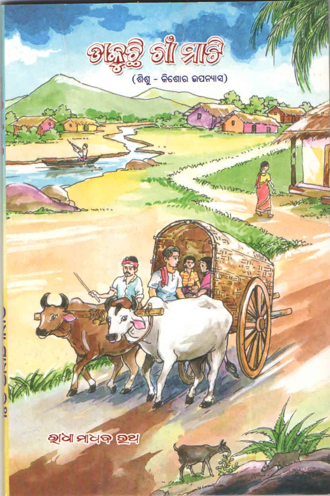
୭ ( ଶିଶୁ - କିଶୋର ଭପନ୍ଯାସ) ।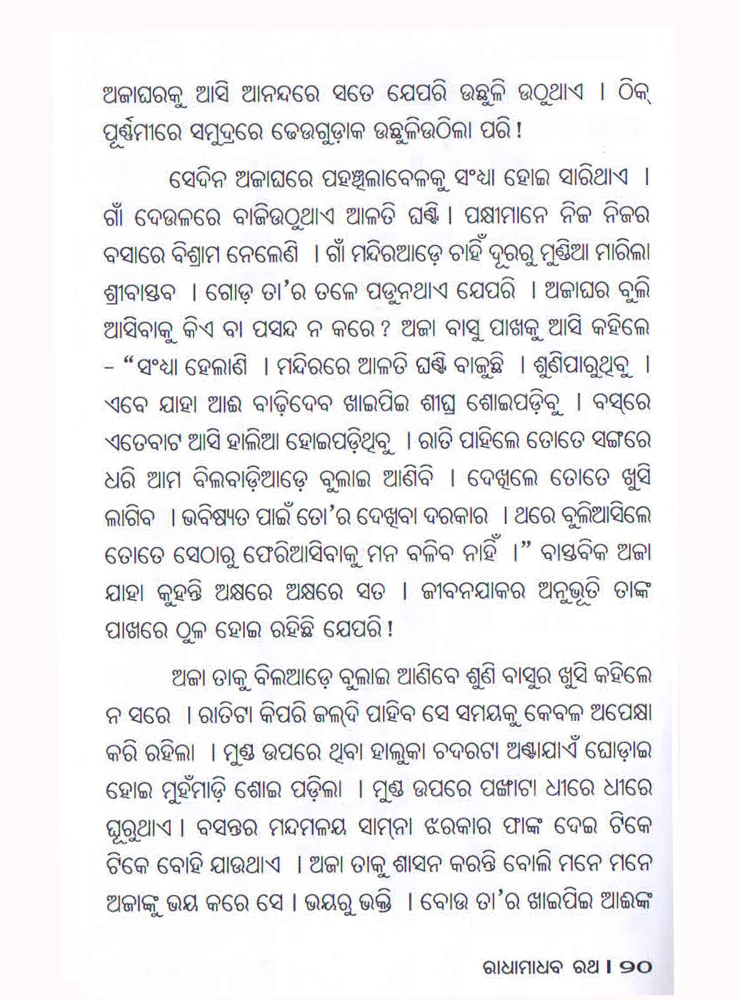
ଅଜାଘରକୁ ଆସି ଆନନ୍ଦରେ ସତେ ଯେପରି ଉଛୁଳି ଉଠୁଥାଏ । ଠିକ୍ ପୂର୍ଣ୍ଣମୀରେ ସମୁଦ୍ରରେ ଢେଉଗୁଡ଼ାକ ଉଛୁଳିଉଠିଲା ପରି ! ସେଦିନ ଅଜାଘରେ ପହଞ୍ଚୁଲାବେଳକୁ ସଂଧ୍ୟା ହୋଇ ସାରିଥାଏ | ଗାଁ ଦେଉଳରେ ବାଜିଉଠୁଥାଏ ଆଳତି ଘଣ୍ଟି । ପକ୍ଷୀମାନେ ନିଜ ନିଜର ବସାରେ ବିଶ୍ରାମ ନେଲେଣି । ଗାଁ ମନ୍ଦିରଆଡ଼େ ଚାହିଁ ଦୂରରୁ ମୁଣ୍ଡିଆ ମାରିଲା ଶ୍ରୀବାସ୍ତବ । ଗୋଡ଼ ତା”ର ତଳେ ପଡୁନଥାଏ ଯେପରି | ଅଜାଘର ବୁଲି ଆସିବାକୁ କିଏ ବା ପସନ୍ଦ ନ କରେ ? ଅଜା ବାସୁ ପାଖକୁ ଆସି କହିଲେ ଏବେ ଯାହା ଆଭ ବାଢ଼ିଦେବ ଖାଇପିଇ ଶୀଘ୍ର ଶୋଇପଡ଼ିଚୁ | ବସ୍ରେ ଏତେବାଟ ଆସି ହାଲିଆ ହୋଇପଡ଼ିଥିବୁ | ରାତି ପାହିଲେ ତୋତେ ସଙ୍ଗରେ ଧରି ଆମ ବିଲବାଡ଼ିଆଡ଼େ ବୁଲାଇ ଆଣିବି | ଦେଖୂଲେ ତୋତେ ଖୁସି ଲାଗିବ | ଭବିଷ୍ୟତ ପାଇଁ ତୋ”ର ଦେଖବା ଦରକାର | ଥରେ ବୁଲିଆସିଲେ ତୋତେ ସେଠାରୁ ଫେରିଆସିବାକୁ ମନ ବଳିବ ନାହିଁ ।” ବାସ୍ତବିକ ଅଜା ଯାହା କୁହନ୍ତି ଅକ୍ଷରେ ଅକ୍ଷରେ ସତ | ଜୀବନଯାକର ଅନୁଭୁତି ତାଙ୍କ ପାଖରେ ଠୁଳ ହୋଇ ରହିଛି ଯେପରି ! ଅଜା ତାକୁ ବିଲଆଡ଼େ ବୁଲାଇ ଆଣିବେ ଶୁଣି ବାସୁର ଖୁସି କହିଲେ ନ ସରେ । ରାତିଟା କିପରି ଜଲ୍ଦି ପାହିବ ସେ ସମୟକୁ କେବଳ ଅପେକ୍ଷା କରି ରହିଲା । ମୁଣ୍ଡ ଉପରେ ଥବା ହାଲୁକା ଚଦରଟା ଅଣ୍ଟାଯାଏଁ ଘୋଡ଼ାଇ ହୋଇ ମୁହଁମାଡ଼ି ଶୋଇ ପଡ଼ିଲା | ମୁଣ୍ଡ ଉପରେ ପଙ୍ଖାଟା ଧୀରେ ଧୀରେ ଘୁରୁଥାଏ | ବସନ୍ତର ମନ୍ଦମଳୟ ସାମ୍ନା ଝରକାର ଫାଙ୍କ ଦେଇ ଟିକେ ଟିକେ ବୋହି ଯାଉଥାଏ । ଅଜା ତାକୁ ଶାସନ କରନ୍ତି ବୋଲି ମନେ ମନେ ଅଜାଙ୍କୁ ଭୟ କରେ ସେ | ଭୟରୁ ଭକ୍ତି । ବୋଉ ତା'ର ଖାଇପିଇ ARE ରାଧାମାଧବ ରଥ । ୭୦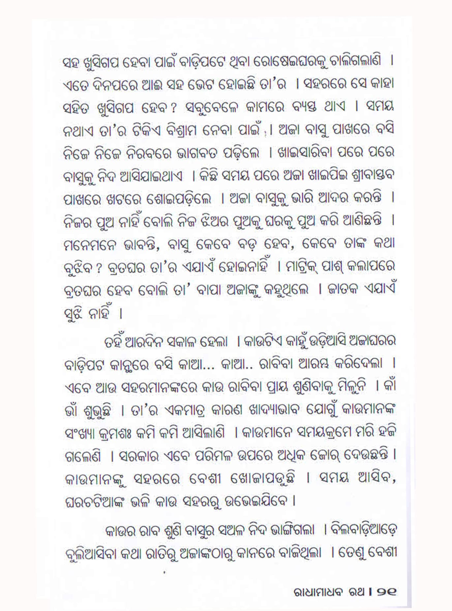
ସହ ଖୁସିଗପ ହେବା ପାଇଁ ବାଡ଼ିପଟେ ଥିବା ରୋଷେଇଘରକୁ ଚାଲିଗଲାଣି । ଏତେ ଦିନପରେ ଆଇ ସହ ଭେଟ ହୋଇଛି ତା'ର | ସହରରେ ସେ କାହା ସହିତ ଖୁସିଗପ ହେବ ? ସବୁବେଳେ କାମରେ ବ୍ୟସ୍ତ ଥାଏ । ସମୟ ନଥାଏ ତା'ର ଟିକିଏ ବିଶ୍ରାମ ନେବା ପାଇଁ ,| ଅଜା ବାସୁ ପାଖରେ ବସି ନିଜେ ନିଜେ ନିରବରେ ଭାଗବତ ପଢ଼ିଲେ । ଖାଇସାରିବା ପରେ ପରେ ବାସୁକୁ ନିଦ ଆସିଯାଇଥାଏ । କିଛି ସମୟ ପରେ ଅଜା ଖାଇପିଇ ଶ୍ରୀବାସ୍ତବ ପାଖରେ ଖଟରେ ଶୋଇପଡ଼ିଲେ । ଅଜା ବାସୁକୁ ଭାରି ଆଦର କରନ୍ତି । ନିଜର ପୁଅ ନାହିଁ ବୋଲି ନିଜ ଝିଅର ପୁଅକୁ ଘରକୁ ପୁଅ କରି ଆଣିଛନ୍ତି । ମନେମନେ ଭାବନ୍ତି, ବାସୁ କେବେ ବଡ଼ ହେବ, କେବେ ତାଙ୍କ କଥା ବୁଝିବ ? ବ୍ରତଘର ତା'ର ଏଯାଏଁ ହୋଇନାହିଁ । ମାଟ୍ରିକ୍ ପାଶ୍ କଲାପରେ ବ୍ରତଘର ହେବ ବୋଲି ତା” ବାପା ଅଜାଙ୍କୁ କହୁଥିଲେ | ଜାତକ ଏଯାଏଁ ସୁଝି ନାହିଁ । ତହିଁ ଆରଦିନ ସକାଳ ହେଲା । କାଉଟିଏ କାହୁଁ ଉଡ଼ିଆସି ଅଜାଘରର ବାଡ଼ିପଟ କାନ୍ଛରେ ବସି କାଆ... କାଆ.. ରାବିବା ଆରମ୍ଭ କରିଦେଲା | ଏବେ ଆଉ ସହରମାନଙ୍କରେ କାଉ ରାବିବା ପ୍ରାୟ ଶୁଣିବାକୁ ମିଳୁନି । କାଁ ଭାଁ ଶୁଭୁଛି । ତା'ର ଏକମାତ୍ର କାରଣ ଖାଦ୍ୟାଭାବ ଯୋଗୁଁ କାଉମାନଙ୍କ ସଂଖ୍ୟା କ୍ରମଶଃ କମି କମି ଆସିଲାଣି । କାଉମାନେ ସମୟକ୍ରମେ ମରି ହଜି ଗଲେଣି | ସରକାର ଏବେ ପରିମଳ ଉପରେ ଅଧକ ଜୋର୍ ଦେଉଛନ୍ତି | କାଉମାନଙ୍କୁ ସହରରେ ବେଶୀ ଖୋଜାପଡୁଛି । ସମୟ ଆସିବ, ଘରଚଟିଆଙ୍କ ଭଳି କାଉ ସହରରୁ ଉଭେଇଯିବେ । କାଉର ରାବ ଶୁଣି ବାସୁର ସଅଳ ନିଦ ଭାଙ୍ଗିଗଲା । ବିଲବାଡ଼ିଆଡ଼େ ବୁଲିଆସିବା କଥା ରାତିରୁ ଅଜାଙ୍କଠାରୁ କାନରେ ବାଜିଥିଲା । ତେଣୁ ବେଶୀ ରାଧାମାଧବ ରଥ । ୭୭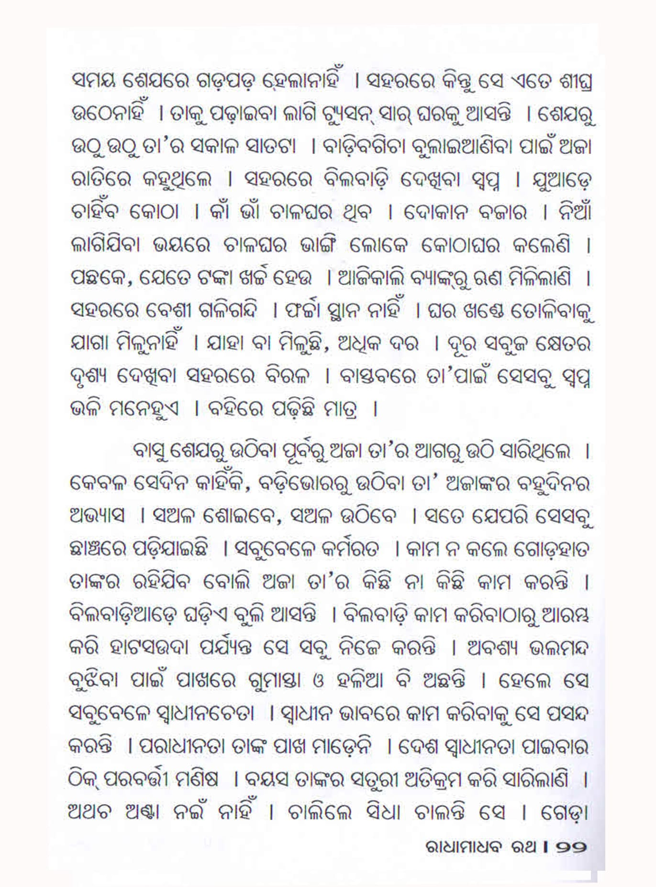
ସମୟ ଶେଯରେ ଗଡ଼ପଡ଼ ହେଲାନାହିଁ । ସହରରେ କିନ୍ତୁ ସେ ଏତେ ଶୀଘ୍ର ଉଠେନାହିଁ । ତାକୁ ପଢ଼ାଇବା ଲାଗି ଟ୍ୟୁସନ୍ ସାର୍ ଘରକୁ ଆସନ୍ତି । ଶେଯରୁ ଉଠୁ ଉଠୁ ତା'ର ସକାଳ ସାତଟା | ବାଡ଼ିବଗିଚା ବୁଲାଇଆଣିବା ପାଇଁ ଅଜା ରାତିରେ କହୁଥିଲେ | ସହରରେ ବିଲବାଡ଼ି ଦେଖିବା ସ୍ଵପ୍ନ | ଯୁଆଡ଼େ ଚାହିଁବ କୋଠା । କାଁ ଭାଁ ଚାଳଘର ଥିବ | ଦୋକାନ ବଜାର । ନିଆଁ ଲାଗିଯିବା ଭୟରେ ଚାଳଘର ଭାଙ୍ଗି ଲୋକେ କୋଠାଘର କଲେଣି । ପଛକେ, ଯେତେ ଟଙ୍କା ଖର୍ଚ୍ଚ ହେଉ | ଆଜିକାଲି ବ୍ୟାଙ୍କରୁ ରଣ ମିଳିଲାଣି | ସହରରେ ବେଶୀ ଗଳିଗନ୍ଦି । ଫର୍ଚ୍ଚା ସ୍ଥାନ ନାହିଁ । ଘର ଖଣ୍ଡେ ତୋଳିବାକୁ ଯାଗା ମିଳୁନାହିଁ । ଯାହା ବା ମିଳୁଛି, ଅଧକ ଦର । ଦୂର ସବୁଜ କ୍ଷେତର ଦୃଶ୍ୟ ଦେଖୁବା ସହରରେ ବିରଳ । ବାସ୍ତବରେ ତା 'ପାଇଁ ସେସବୁ ସ୍ଵପ୍ନ ଭଳି ମନେହୁଏ । ବହିରେ ପଢିଛି ମାତ୍ର । ବାସୁ ଶେଯରୁ ଉଠିବା ପୂର୍ବରୁ ଅଜା ତା'ର ଆଗରୁ ଉଠି ସାରିଥିଲେ | କେବଳ ସେଦିନ କାହିଁକି, ବଡ଼ିଭୋରରୁ ଉଠିବା ତା” ଅଜାଙ୍କର ବହୁଦିନର ଅଭ୍ୟାସ | ସଅଳ ଶୋଇବେ, ସଅଳ ଉଠିବେ | ସତେ ଯେପରି ସେସବୁ ଛାଞ୍ଚରେ ପଡ଼ିଯାଇଛି । ସବୁବେଳେ କର୍ମରତ । କାମ ନ କଲେ ଗୋଡ଼ହାତ ତାଙ୍କର ରହିଯିବ ବୋଲି ଅଜା ତାଂର କିଛି ନା କିଛି କାମ କରନ୍ତି | ବିଲବାଡ଼ିଆଡ଼େ ଘଡ଼ିଏ ବୁଲି ଆସନ୍ତି । ବିଲବାଡ଼ି କାମ କରିବାଠାରୁ ଆରମ୍ଭ କରି ହାଟସଉଦା ପର୍ଯ୍ୟନ୍ତ ସେ ସବୁ ନିଜେ କରନ୍ତି । ଅବଶ୍ୟ ଭଲମନ୍ଦ ବୁଝିବା ପାଇଁ ପାଖରେ ଗୁମାସ୍ତା ଓ ହଳିଆ ବି ଅଛନ୍ତି । ହେଲେ ସେ ସବୁବେଳେ ସ୍ଵାଧୀନଚେତା ¦ ସ୍ଵାଧୀନ ଭାବରେ କାମ କରିବାକୁ ସେ ପସନ୍ଦ କରନ୍ତି । ପରାଧୀନତା ତାଙ୍କ ପାଖ ମାଡ଼େନି । ଦେଶ ସ୍ଵାଧୀନତା ପାଇବାର ଠିକ୍ ପରବର୍ତୀ ମଣିଷ । ବୟସ ତାଙ୍କର ସତୁରୀ ଅତିକ୍ରମ କରି ସାରିଲାଣି । ଅଥଚ ଅଣ୍ଟା ନଇଁ ନାହିଁ । ଚାଲିଲେ ସିଧା ଚାଲନ୍ତି ସେ । ଗେଡ଼ା ରାଧାମାଧବ ରଥ । ୭୬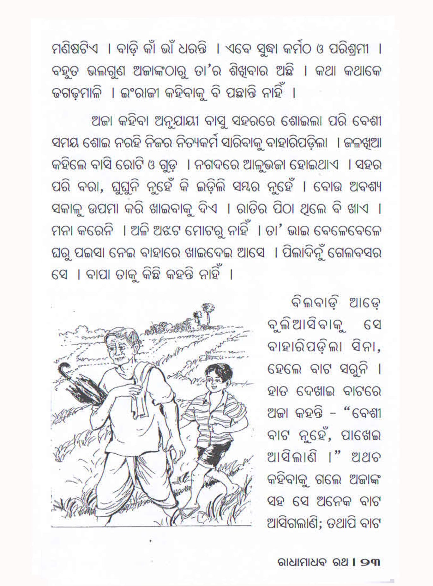
ମଣିଷଟିଏ । ବାଡ଼ି କାଁ ଭା ଧରନ୍ତି | ଏବେ ସୁଦ୍ଧା କର୍ମଠ ଓ ପରିଶ୍ରମୀ | ବହୁତ ଭଲଗୁଣ ଅଜାଙ୍କଠାରୁ ତା'ର ଶିଖୂବାର ଅଛି | କଥା କଥାକେ ଢଗଢ଼ମାଳି | ଇଂରାଜୀ କହିବାକୁ ବି ପଛାନ୍ତି ନାହି | ଅଜା କହିବା ଅନୁଯାୟୀ ବାସୁ ସହରରେ ଶୋଇଲା ପରି ବେଶୀ ସମୟ ଶୋଇ ନରହି ନିଜର ନିତ୍ୟକର୍ମ ସାରିବାକୁ ବାହାରିପଡ଼ିଲା | PRR କହିଲେ ବାସି ରୋଟି ଓ ଗୁଡ଼ । ନଗଦରେ ଆଳୁଭଜା ହୋଇଥାଏ । ସହର ପରି ବରା, ଘୁଘୁନି ନୁହେଁ କି ଇଡ଼ିଲି ସମ୍ବର ନୁହେଁ । ବୋଉ ଅବଶ୍ଯ ସକାଳୁ ଉପମା କରି ଖାଇବାକୁ ଦିଏ । ରାତିର ପିଠା ଥିଲେ ବି ଖାଏ । ମନା କରେନି | ଅଳି ଅଝଟ ମୋଟରୁ ନାହି | BI’ ଭାଇ ବେଳେବେଳେ ଘରୁ ପଇସା ନେଇ ବାହାରେ ଖାଇଦେଇ ଆସେ । ପିଲାଦିନୁଁ ଗେଲବସର ସେ । ବାପା ତାକୁ କିଛି କହନ୍ତି ନାହ । ବିଲବାଡ଼ି ଆଡ଼େ 7 _ 5 × ଆସିଗଲାଣି; ତଥାପି ବାଟ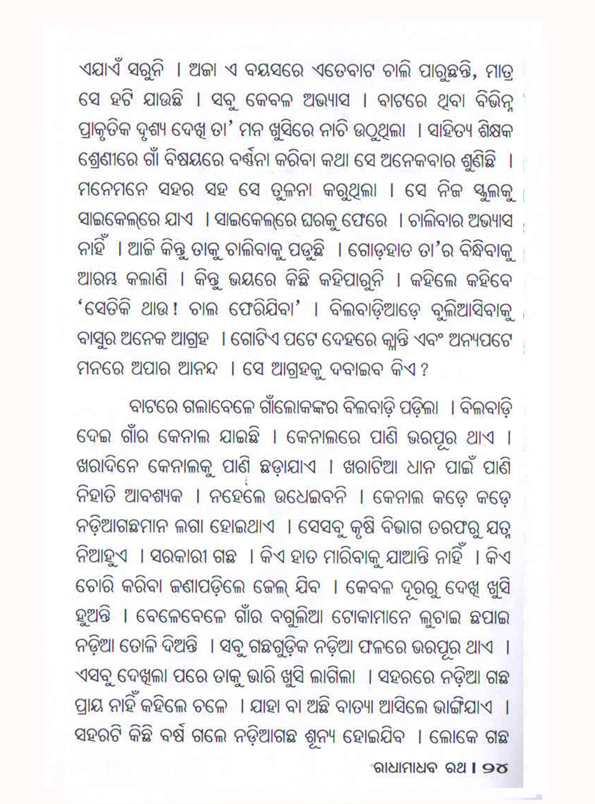
ଏଯାଏଁ ସରୁନି | ଅଜା ଏ ବୟସରେ ଏତେବାଟ ଚାଲି ପାରୁଛନ୍ତି, ମାତ୍ର ସେ ହଟି ଯାଉଛି | ସବୁ କେବଳ ଅଭ୍ୟାସ | ବାଟରେ ଥବା ବିଭିନ୍ନ ପ୍ରାକୃତିକ ଦୃଶ୍ୟ ଦେଖ ତା” ମନ ଖୁସିରେ ନାଚି ଉଠୁଥିଲା । ସାହିତ୍ୟ ଶିକ୍ଷକ ଶ୍ରେଣୀରେ ଗାଁ ବିଷୟରେ ବର୍ଣ୍ଣନା କରିବା କଥା ସେ ଅନେକବାର ଶୁଣିଛି । ` ମନେମନେ ସହର ସହ ସେ ତୁଳନା କରୁଥିଲା । ସେ ନିଜ ସ୍କୁଲକୁ | ସାଇକେଲ୍ରେ ଯାଏ । ସାଇକେଲ୍ରେ ଘରକୁ ଫେରେ ¦ ଚାଲିବାର ଅଭ୍ୟାସ | ନାହିଁ । ଆଜି କିନ୍ତୁ ତାକୁ ଚାଲିବାକୁ ପଡୁଛି । ଗୋଡ଼ହାତ ତା'ର ବିନ୍ଧିବାକୁ ` ଆରମ୍ଭ କଲାଣି । କିନ୍ତୁ ଭୟରେ କିଛି କହିପାରୁନି । କହିଲେ କହିବେ “ସେତିକି ଥାଉ! ଚାଲ ଫେରିଯିବା” । ବିଲବାଡ଼ିଆଡ଼େ ବୁଲିଆସିବାକୁ | ବାସୁର ଅନେକ ଆଗ୍ରହ | ଗୋଟିଏ ପଟେ ଦେହରେ କ୍ଲାନ୍ତି ଏବଂ ଅନ୍ୟପଟେ ` ମନରେ ଅପାର ଆନନ୍ଦ । ସେ ଆଗ୍ରହକୁ ଦବାଇବ କିଏ ? ବାଟରେ ଗଲାବେଳେ ଗାଁଲୋକଙ୍କର ବିଲବାଡ଼ି ପଡ଼ିଲା । ବିଲବାଡ଼ି ଦେଇ ଗାଁର କେନାଲ ଯାଇଛି । କେନାଲରେ ପାଣି ଭରପୂର ଥାଏ । _ ଖରାଦିନେ କେନାଲକୁ ପାଣି ଛଡ଼ାଯାଏ । ଖରାଟିଆ ଧାନ ପାଇଁ ପାଣି ନିହାତି ଆବଶ୍ୟକ । ନହେଲେ ଉଧେଇବନି । କେନାଲ କଡ଼େ କଡ଼େ ନଡ଼ିଆଗଛମାନ ଲଗା ହୋଇଥାଏ । ସେସବୁ କୃଷି ବିଭାଗ ତରଫରୁ ଯତ୍ନ ନିଆହୁଏ । ସରକାରୀ ଗଛ । କିଏ ହାତ ମାରିବାକୁ ଯାଆନ୍ତି ନାହିଁ । କିଏ ଚୋରି କରିବା ଜଣାପଡ଼ିଲେ ଜେଲ୍ ଯିବ | କେବଳ ଦୂରରୁ ଦେଖୁ ଖୁସି ହୁଅନ୍ତି । ବେଳେବେଳେ ଗାଁର ବଗୁଲିଆ ଟୋକାମାନେ ଲୁଚାଇ ଛପାଇ ନଡ଼ିଆ ତୋଳି ଦିଅନ୍ତି । ସବୁ ଗଛଗୁଡ଼ିକ ନଡ଼ିଆ ଫଳରେ ଭରପୂର ଥାଏ । ଏସବୁ ଦେଖିଲା ପରେ ତାକୁ ଭାରି ଖୁସି ଲାଗିଲା | ସହରରେ ନଡ଼ିଆ ଗଛ ପ୍ରାୟ ନାହିଁ କହିଲେ ଚଳେ । ଯାହା ବା ଅଛି ବାତ୍ୟା ଆସିଲେ ଭାଙ୍କିଯାଏ । ସହରଟି କିଛି ବର୍ଷ ଗଲେ ନଡ଼ିଆଗଛ ଶୂନ୍ୟ ହୋଇଯିବ । ଲୋକେ ଗଛ ରାଧାମାଧବ ରଥ | ୦୬୪୫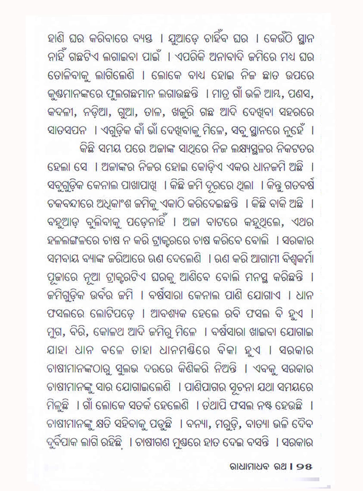
ହାଣି ଘର କରିବାରେ ବ୍ୟସ୍ତ | ଯୁଆଡ଼େ ଚାହିଁବ ଘର । କେଉଁଠି ge ନାହିଁ ଗଛଟିଏ ଲଗାଇବା ପାଇଁ । ଏପରିକି ଅନାବାଦି ଜମିରେ ମଧ୍ଯ ଘର ତୋଳିବାକୁ ଲାଗିଲେଣି | ଲୋକେ ବାଧ୍ଯ ହୋଇ ନିଜ ଛାତ ଉପରେ କୁଣ୍ଡମାନଙ୍କରେ ଫୁଲଗଛମାନ ଲଗାଉଛନ୍ତି । ମାତ୍ର ଗାଁ ଭଳି ଆମ୍ବ, ପଣସ, କଦଳୀ, ନଡ଼ିଆ, ଗୁଆ, ତାଳ, ଖଜୁରି ଗଛ ଆଦି ଦେଖୁବା ସହରରେ ସାତସପନ । ଏଗୁଡ଼ିକ କାଁ ଭାଁ ଦେଖୁବାକୁ ମିଳେ, ସବୁ ସ୍ରାନରେ ନୁହେଁ | କିଛି ସମୟ ପରେ ଅଜାଙ୍କ ସାଥ୍ରରେ ନିଜ ଲକ୍ଷ୍ୟସ୍ଥଳର ନିକଟତର
ହେଲା ସେ । ଅଜାଙ୍କର ନିଜର ହୋଇ କୋଡ଼ିଏ ଏକର ଧାନଜମି ଅଛି | ସବୁଗୁଡ଼ିକ କେନାଲ ପାଖାପାଖ । କିଛି ଜମି ଦୂରରେ ଥୁଲା । କିନ୍ତୁ ଗତବର୍ଷ ଚକବନ୍ଦୀରେ ଅଧକାଂଶ ଜମିକୁ ଏକାଠି କରିଦେଇଛନ୍ତି । କିଛି ବାକି ଅଛି | ବହୁଆଡ଼ ବୁଲିବାକୁ ପଡ଼େନାହିଁ । ଅଜା ବାଟରେ କହୁଥୁଲେ, ଏଥର ହଳଲଙ୍ଗଳରେ ଚାଷ ନ କରି ଟ୍ରାକ୍ଟରରେ ଚାଷ କରିବେ ବୋଲି । ସରକାର ସମବାୟ ବ୍ୟାଙ୍କ ଜରିଆରେ ରଣ ଦେଲେଣି । ରଣ କରି ଆଗାମୀ ବିଶ୍ଵକର୍ମା ପୂଜାରେ ନୂଆ ଟ୍ରାକ୍ଟରଟିଏ ଘରକୁ ଆଣିବେ ବୋଲି ମନସ୍ଥ କରିଛନ୍ତି | ଜମିଗୁଡ଼ିକ ଉର୍ବର ଜମି । ବର୍ଷସାରା କେନାଲ ପାଣି ଯୋଗାଏ । ଧାନ ଫସଲରେ ଲୋଟିପଡ଼େ । ଆବଶ୍ୟକ ହେଲେ ରବି ଫସଲ ବି ହୁଏ । ମୁଗ, ବିରି, କୋଳଥ ଆଦି ଜମିରୁ ମିଳେ | ବର୍ଷସାରା ଖାଇବା ଯୋଗାଇ ଯାହା ଧାନ ବଳେ ତାହା ଧାନମଣ୍ଡରେ ବିକା ହୁଏ | ସରକାର ଚାଷୀମାନଙ୍କଠାରୁ ସୁଲଭ ଦରରେ କିଣିକରି ନିଅନ୍ତି । ଏବକୁ ସରକାର ଚାଷୀମାନଙ୍କୁ ସାର ଯୋଗାଇଲେଣି | ପାଣିପାଗର ସୁଚନା ଯଥା ସମୟରେ ମିଳୁଛି । ଗାଁ ଲୋକେ ସତର୍କ ହେଲେଣି । ତଥାପି ଫସଲ ନଷ୍ଟ ହେଉଛି । ଚାଷୀମାନଙ୍କୁ କ୍ଷତି ସହିବାକୁ ପଡୁଛି । ବନ୍ୟା, ମରୁଡ଼ି, ବାତ୍ୟା ଭଳି ଦୈବ ଦୁବିପାକ ଲାଗି ରହିଛି । ଚାଷୀଗଣ ମୁଣ୍ଡରେ ହାତ ଦେଇ ବସନ୍ତି । ସରକାର ରାଧାମାଧବ ରଥ । ୦୫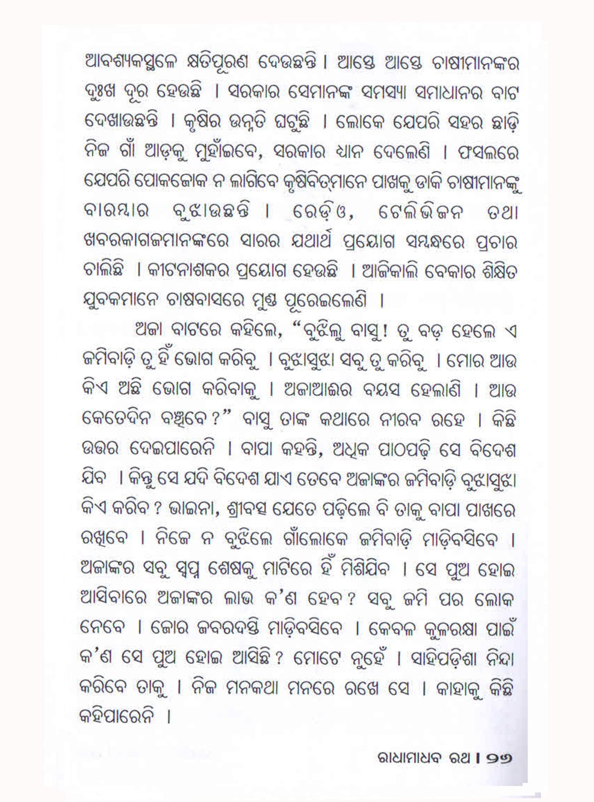
ଆବଶ୍ୟକସ୍ଥଳେ କ୍ଷତିପୂରଣ ଦେଉଛନ୍ତି । ଆସ୍ତେ ଆସ୍ତେ ଚାଷୀମାନଙ୍କର ଦୁଃଖ ଦୂର ହେଉଛି । ସରକାର ସେମାନଙ୍କ ସମସ୍ୟା ସମାଧାନର ବାଟ ଦେଖାଉଛନ୍ତି । କୃଷିର ଉନ୍ନତି ଘଟୁଛି । ଲୋକେ ଯେପରି ସହର ଛାଡ଼ି ଯେପରି ପୋକଜୋକ ନ ଲାଗିବେ କୃଷିବିତ୍ମାନେ ପାଖକୁ ଡାକି ଚାଷୀମାନଙ୍କୁ ବାରମ୍ବାର ବୁଝାଉଛନ୍ତି । ରେଡ଼ିଓ, ଟେଲିଭିଜନ ତଥା ଖବରକାଗଜମାନଙ୍କରେ ସାରର ଯଥାର୍ଥ ପ୍ରୟୋଗ ସମ୍ବନ୍ଧରେ ପ୍ରଚାର ଚାଲିଛି | କୀଟନାଶକର ପ୍ରୟୋଗ ହେଉଛି | ଆଜିକାଲି ବେକାର ଶିକ୍ଷିତ ଯୁବକମାନେ ଚାଷବାସରେ ମୁଣ୍ଡ ପୁରେଇଲେଣି । ଅଜା ବାଟରେ କହିଲେ, “ ବୁଝିଲୁ ବାସୁ! ତୁ ବଡ଼ ହେଲେ ଏ ଜମିବାଡ଼ି ତୁ ହିଁ ଭୋଗ କରିବୁ | ବୁଝାସୁଝା ସବୁ ତୁ କରିବୁ । ମୋର ଆଉ କିଏ ଅଛି ଭୋଗ କରିବାକୁ । ଅଜାଆଭର ବୟସ ହେଲାଣି । ଆଉ କେତେଦିନ ବଞ୍ଚବେ ?” ବାସୁ ତାଙ୍କ କଥାରେ ନୀରବ ରହେ । କିଛି ଉତ୍ତର ଦେଇପାରେନି । ବାପା କହନ୍ତି, AR ପାଠପଢ଼ି ସେ ବିଦେଶ ଯିବ । କିନ୍ତୁ ସେ ଯଦି ବିଦେଶ ଯାଏ ତେବେ ଅଜାଙ୍କର ଜମିବାଡ଼ି ବୁଝାସୁଝା କିଏ କରିବ ? ଭାଇନା, ଶ୍ରୀବସ୍ସ ଯେତେ ପଢ଼ିଲେ ବି ତାକୁ ବାପା ପାଖରେ ରଖବେ | ନିଜେ ନ ବୁଝିଲେ ଗାଁଲୋକେ ଜମିବାଡ଼ି ମାଡ଼ିବସିବେ | ଅଜାଙ୍କର ସବୁ ସ୍ଵପ୍ନ ଶେଷକୁ ମାଟିରେ ହିଁ ମିଶିଯିବ । ସେ ପୁଅ ହୋଇ ଆସିବାରେ ଅଜାଙ୍କର ଲାଭ କ'ଣ ହେବ? ସବୁ ଜମି ପର ଲୋକ ନେବେ । ଜୋର ଜବରଦସ୍ତି ମାଡ଼ିବସିବେ । କେବଳ କୁଳରକ୍ଷା ପାଇଁ କ'ଣ ସେ ପୁଅ ହୋଇ ଆସିଛି ? ମୋଟେ ନୁହେଁ । ସାହିପଡ଼ିଶା ନିନ୍ଦା କରିବେ ତାକୁ | ନିଜ ମନକଥା ମନରେ ରଖେ ସେ । କାହାକୁ କିଛି କହିପାରେନି । ରାଧାମାଧବ ରଥ | 99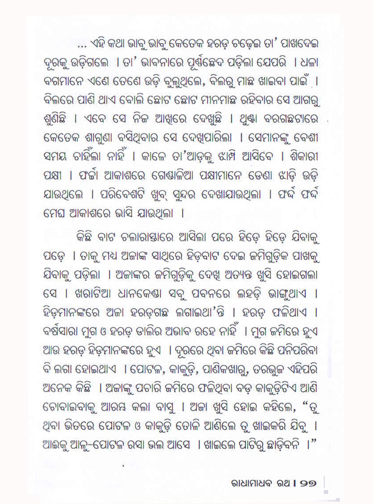
.... ଏହି କଥା ଭାବୁ ଭାବୁ କେତେକ ହରଡ଼ ଚଢ଼େଇ ତା' ପାଖଦେଇ ଦୂରକୁ ଉଡ଼ିଗଲେ | ତା” ଭାବନାରେ ପୂର୍ଣ୍ଣଛେଦ ପଡ଼ିଲା ଯେପରି | ଧଳା ବଗମାନେ ଏଣେ ତେଣେ ଉଡ଼ି ବୁଲୁଥିଲେ, ବିଲରୁ ମାଛ ଖାଇବା ପାଇଁ | ବିଲରେ ପାଣି ଥାଏ ବୋଲି ଛୋଟ ଛୋଟ ମୀନମାଛ ରହିବାର ସେ ଆଗରୁ ଶୁଣିଛି । ଏବେ ସେ ନିଜ ଆଖରେ ଦେଖୁଛି | ଥୁଣ୍ଟା ବରଗଛଟାରେ . କେତେକ ଶାଗୁଣା ବସିଥିବାର ସେ ଦେଖୁିପାରିଲା । ସେମାନଙ୍କୁ ବେଶୀ ସମୟ ଚାହିଲା ନାହିଁ | କାଳେ ତା !ଆଡ଼କୁ «Ff ଆସିବେ । ଶିକାରୀ ପକ୍ଷୀ । ଫର୍ଚ୍ଚା ଆକାଶରେ ଗେଣ୍ଡାଳିଆ ପକ୍ଷୀମାନେ ଡେଣା ଝାଡ଼ି ଉଡ଼ି ଯାଉଥିଲେ । ପରିବେଶଟି ଖୁବ୍ ସୁନ୍ଦର ଦେଖାଯାଉଥିଲା । ଫର୍ଦ୍ଦ ଫର୍ଦ୍ଦ ମେଘ ଆକାଶରେ ଭାସି ଯାଉଥଲା |
କିଛି ବାଟ ଚଲାରାସ୍ତାରେ ଆସିଲା ପରେ ହିଡ଼େ ହିଡ଼େ ଯିବାକୁ ପଡ଼େ । ତାକୁ ମଧ୍ଯ ଅଜାଙ୍କ AYER ହିଡ଼ବାଟ ଦେଇ ଜମିଗୁଡ଼ିକ ପାଖକୁ ଯିବାକୁ ପଡ଼ିଲା | ଅଜାଙ୍କର ଜମିଗୁଡ଼ିକୁ ଦେଖୂ ଅତ୍ୟନ୍ତ ଖୁସି ହୋଇଗଲା ସେ । ଖରାଟିଆ ଧାନକେଣ୍ଡା ସବୁ ପବନରେ ଲହଡ଼ି ଭାଙ୍ଗୁଥାଏ । ହିଡ଼ମାନଙ୍କରେ ଅଜା ହରଡ଼ଗଛ ଲଗାଇଥାଂ'ନ୍ତି । ହରଡ଼ ଫଳିଥାଏ | ବର୍ଷସାରା ମୁଗ ଓ ହରଡ଼ ଡାଲିର ଅଭାବ ରହେ ନାହିଁ | ମୁଗ ଜମିରେ ହୁଏ ଆଉ ହରଡ଼ ହିଡ଼ମାନଙ୍କରେ ହୁଏ । ଦୂରରେ ଥିବା ଜମିରେ କିଛି ପନିପରିବା ବି ଲଗା ହୋଇଥାଏ । ପୋଟଳ, କାକୁଡ଼ି, ପାଣିକଖାରୁ, ତରଭୁଜ ଏହିପରି ଅନେକ କିଛି । ଅଜାଙ୍କୁ ପଚାରି ଜମିରେ ଫଳିଥିବା ବଡ଼ କାକୁଡ଼ିଟିଏ ଆଣି ଚୋବାଇବାକୁ ଆରମ୍ଭ କଲା ବାସୁ । ଅଜା ଖୁସି ହୋଇ କହିଲେ, “ତୁ ଥିବା ଭିତରେ ପୋଟଳ ଓ କାକୁଡ଼ି ତୋଳି ଆଣିଲେ ତୁ ଖାଇକରି ଯିବୁ | ଆଇକୁ ଆଳୁ-ପୋଟଳ ରସା ଭଲ ଆସେ । ଖାଇଲେ ପାଟିରୁ ଛାଡ଼ିବନି 1”
ରାଧାମାଧବ ରଥ | ୭୭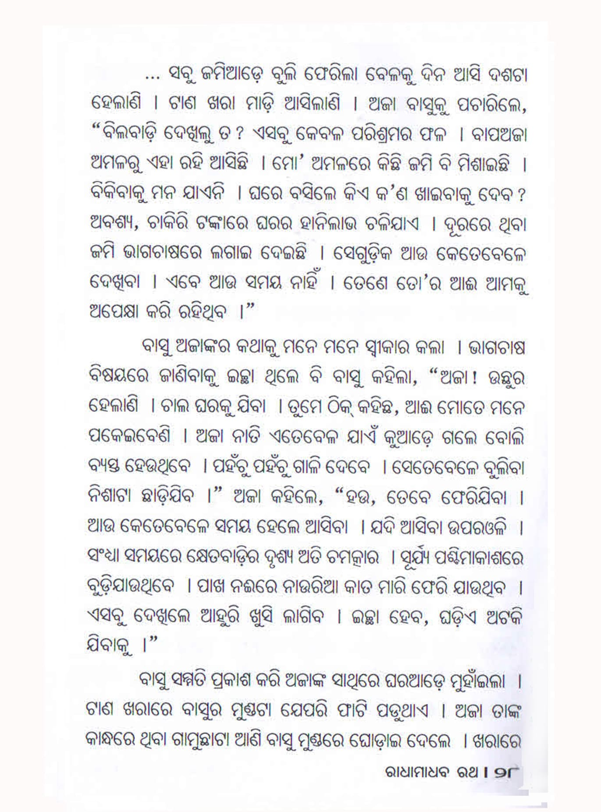
.. ସବୁ ଜମିଆଡ଼େ ବୁଲି ଫେରିଲା ବେଳକୁ ଦିନ ଆସି ଦଶଟା ହେଲାଣି । ଟାଣ ଖରା ମାଡ଼ି ଆସିଲାଣି । ଅଜା ବାସୁକୁ ପଚାରିଲେ, “ ବିଲବାଡ଼ି ଦେଖୁଲୁ ତ ? ଏସବୁ କେବଳ ପରିଶ୍ରମର ଫଳ | ବାପଅଜା ଅମଳରୁ ଏହା ରହି ଆସିଛି | ମୋ” ଅମଳରେ କିଛି ଜମି ବି ମିଶାଇଛି | ବିକିବାକୁ ମନ ଯାଏନି | ଘରେ ବସିଲେ କିଏ କ'ଣ ଖାଇବାକୁ ଦେବ ? ଅବଶ୍ୟ, ଚାକିରି ଟଙ୍କାରେ ଘରର ହାନିଲାଭ ଚଳିଯାଏ । ଦୂରରେ ଥୁବା ଜମି ଭାଗଚାଷରେ ଲଗାଇ ଦେଇଛି । ସେଗୁଡ଼ିକ ଆଉ କେତେବେଳେ ଦେଖବା | ଏବେ ଆଉ ସମୟ ନାହିଁ | ତେଣେ ତୋ'ର ଆଭ ଆମକୁ ଅପେକ୍ଷା କରି ରହିଥିବ |”
ବାସୁ ଅଜାଙ୍କର କଥାକୁ ମନେ ମନେ ସ୍ଵୀକାର କଲା | ଭାଗଚାଷ ବିଷୟରେ ଜାଣିବାକୁ ଇଚ୍ଛା ଥୁଲେ ବି ବାସୁ କହିଲା, “ଅଜା! ଉଛୁର ହେଲାଣି । ଚାଲ ଘରକୁ ଯିବା । ତୁମେ ଠିକ୍ କହିଛ, ଆଭ ମୋତେ ମନେ ପକେଇବେଣି । ଅଜା ନାତି ଏତେବେଳ ଯାଏଁ କୁଆଡ଼େ ଗଲେ ବୋଲି ବ୍ୟସ୍ତ ହେଉଥବେ | ପହଁଚୁ ପହଁଚୁ ଗାଳି ଦେବେ | ସେତେବେଳେ ବୁଲିବା ନିଶାଟା ଛାଡ଼ିଯିବ ।” ଅଜା କହିଲେ, “ହଉ, ତେବେ ଫେରିଯିବା | ଆଉ କେତେବେଳେ ସମୟ ହେଲେ ଆସିବା । ଯଦି ଆସିବା ଉପରଓଳି | ସଂଖ୍ଯା ସମୟରେ କ୍ଷେତବାଡ଼ିର ଦୃଶ୍ୟ ଅତି ଚମଳ୍କାର | IM ପଶ୍ଚିମାକାଶରେ ବୁଡ଼ିଯାଉଥିବେ | ପାଖ ନଭରେ ନାଉରିଆ କାତ ମାରି ଫେରି ଯାଉଥିବ | ଏସବୁ ଦେଖଲେ ଆହୁରି ଖୁସି ଲାଗିବ | ଇଚ୍ଛା ହେବ, ଘଡ଼ିଏ ଅଟକି
ବାସୁ ସମ୍ମତି ପ୍ରକାଶ କରି ଅଜାଙ୍କ ସାଥ୍ରେ ଘରଆଡ଼େ ମୁହାଁଇଲା | ଟାଣ ଖରାରେ ବାସୁର ମୁଣ୍ଡଟା ଯେପରି ଫାଟି ପଡୁଥାଏ | ଅଜା ତାଙ୍କ କାନ୍ଧରେ ଥବା ଗାମୁଛାଟା ଆଣି ବାସୁ ମୁଣ୍ଡରେ ଘୋଡ଼ାଇ ଦେଲେ | ଖରାରେ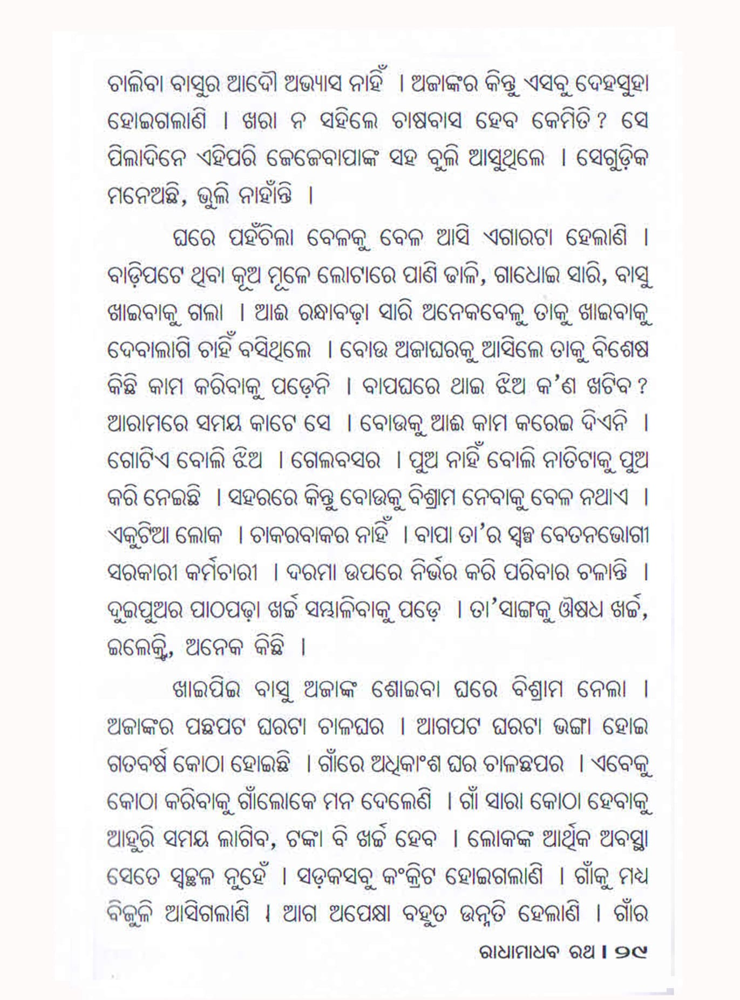
ଚାଲିବା ବାସୁର ଆଦୌ ଅଭ୍ୟାସ ନାହିଁ । ଅଜାଙ୍କର କିନ୍ତୁ ଏସବୁ ଦେହସୁହା ହୋଇଗଲାଣି | ଖରା ନ ସହିଲେ ଚାଷବାସ ହେବ କେମିତି? ସେ ପିଲାଦିନେ ଏହିପରି ଜେଜେବାପାଙ୍କ ସହ ବୁଲି ଆସୁଥିଲେ । ସେଗୁଡ଼ିକ
ମନେଅଛି, ଭୁଲି ନାହାଁନ୍ତି । ଘରେ ପହଁଚିଲା ବେଳକୁ ବେଳ ଆସି ଏଗାରଟା ହେଲାଣି । ବାଡ଼ିପଟେ ଥବା କୂଅ ମୂଳେ ଲୋଟାରେ ପାଣି ଢାଳି, ଗାଧୋଇ ସାରି, ବାସୁ ଖାଇବାକୁ ଗଲା । ଆଭ ରନ୍ଧାବଢ଼ା ସାରି ଅନେକବେଳୁ ତାକୁ ଖାଇବାକୁ ଦେବାଲାଗି ଚାହିଁ ବସିଥୁଲେ | ବୋଉ ଅଜାଘରକୁ ଆସିଲେ ତାକୁ ବିଶେଷ କିଛି କାମ କରିବାକୁ ପଡ଼େନି | ବାପଘରେ ଥାଇ ଝିଅ କ'ଣ ଖଟିବ ? ଆରାମରେ ସମୟ କାଟେ ସେ | ବୋଉକୁ ଆଇ କାମ କରେଇ ଦିଏନି | ଗୋଟିଏ ବୋଲି ଝିଅ । ଗେଲବସର । ପୁଅ ନାହିଁ ବୋଲି ନାତିଟାକୁ ପୁଅ କରି ନେଇଛି । ସହରରେ କିନ୍ତୁ ବୋଉକୁ ବିଶ୍ରାମ ନେବାକୁ ବେଳ ନଥାଏ । ଏକୁଟିଆ ଲୋକ । ଚାକରବାକର ନାହିଁ । ବାପା ତା'ର ସ୍ଵଳ୍ପ ବେତନଭୋଗୀ ସରକାରୀ କର୍ମଚାରୀ । ଦରମା ଉପରେ ନିର୍ଭର କରି ପରିବାର ଚଳାନ୍ତି ।
ଇଲେକ୍ତ୍ି, ଅନେକ କିଛି | ଖାଇପିଇ ବାସୁ ଅଜାଙ୍କ ଶୋଇବା ଘରେ ବିଶ୍ରାମ ନେଲା । ଅଜାଙ୍କର ପଛପଟ ଘରଟା ଚାଳଘର । ଆଗପଟ ଘରଟା ଭଙ୍ଗା ହୋଇ ଗତବର୍ଷ କୋଠା ହୋଇଛି | ଗାଁରେ ଅଧ୍ଵକାଂଶ ଘର ଚାଳଛପର । ଏବେକୁ କୋଠା କରିବାକୁ ଗାଁଲୋକେ ମନ ଦେଲେଣି । ଗାଁ ସାରା କୋଠା ହେବାକୁ ଆହୁରି ସମୟ ଲାଗିବ, ଟଙ୍କା ବି ଖର୍ଚ୍ଚ ହେବ | ଲୋକଙ୍କ ଆର୍ଥ୍ରକ ଅବସ୍ଥା ସେତେ ସ୍ଵଚ୍ଛଳ ନୁହେଁ | ସଡ଼କସବୁ କଂକ୍ରିଟ ହୋଇଗଲାଣି । ଗାଁକୁ ମଧ୍ଯ ବିଜୁଳି ଆସିଗଲାଣି । ଆଗ ଅପେକ୍ଷା ବହୁତ ଉନ୍ନତି ହେଲାଣି । ଗାଁର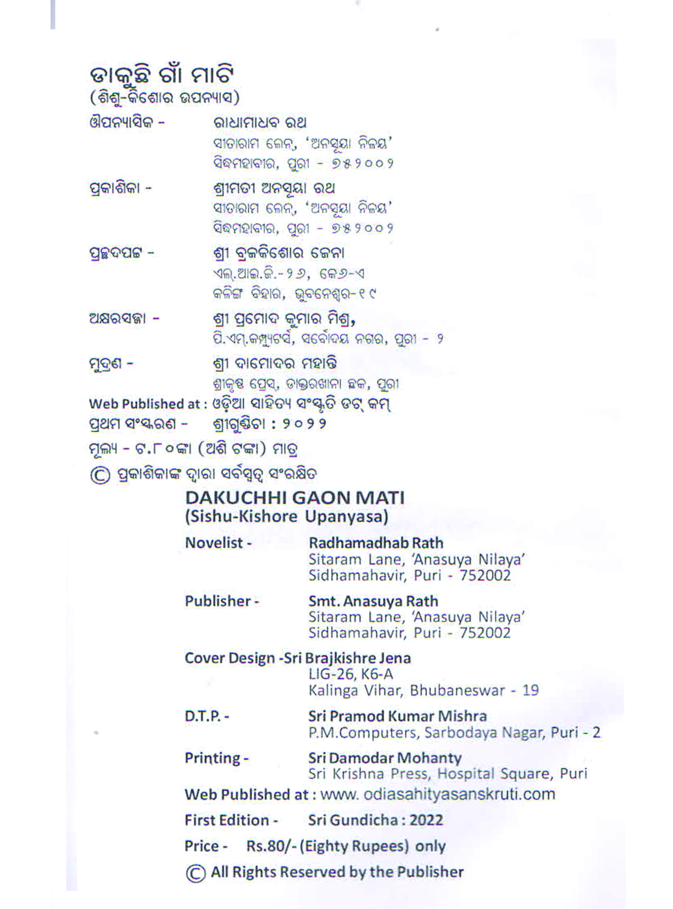
ଡାକୁଛି ଗାଁ ମାଟି ( ଶିଶୁ-କିଶୋର ଉପନ୍ୟାସ) ଣ୍ଷପନ୍ୟାସିକ - ରାଧାମାଧବ ରଥ ସିଦ୍ଧମହାବୀର, ପୁରୀ - ୭୫ ୨୦୦୨ ପ୍ରକାଶିକା - ଶ୍ରୀମତୀ ଅନସୂୟା ରଥ ସୀତାରାମ ଲେନ୍, ' ଅନସୂୟା ନିଳୟ' ସିଦ୍ଧମହାବୀର, ପୁରୀ - ୭୫୨୦୦୨ ପ୍ରଚ୍ଛଦପଟ୍ଟ - ଶ୍ରୀ ବ୍ରଜକିଶୋର ଜେନା ଏଲ୍.ଆଇ.ଜି.- ୨ ୬, କେ୬-ଏ କଳିଙ୍ଗ ବିହାର, ଭୁବନେଶ୍ବର-୧୯ ଅକ୍ଷରସଜ୍ଜା - ଶ୍ରୀ ପ୍ରମୋଦ କୁମାର ମିଶ୍ର, ପି.ଏମ୍.କମ୍ୟୁଟରସ, ସର୍ବୋଦୟ ନଗର, ପୁରୀ - ୨ ମୁଦ୍ରଣ - ଶ୍ରୀ ଦାମୋଦର ମହାନ୍ତି ଶ୍ରୀକୃଷ୍ଣ ପ୍ରେସ୍, ଡାକ୍ତରଖାନା ଛକ, ପୁରୀ ପ୍ରଥମ ସଂସ୍କରଣ - ଶ୍ରୀଗୁଣ୍ଡିଚା : ୨୦୨୨ ମୂଲ୍ୟ - ଟ. ୮୦ ଙ୍କା ( ଅଶି ଟଙ୍କା) ମାତ୍ର ଠ ପ୍ରକାଶିକାଙ୍କ ଦ୍ଵାରା ସର୍ବସ୍ବତ୍ଵ ସଂରକ୍ଷିତ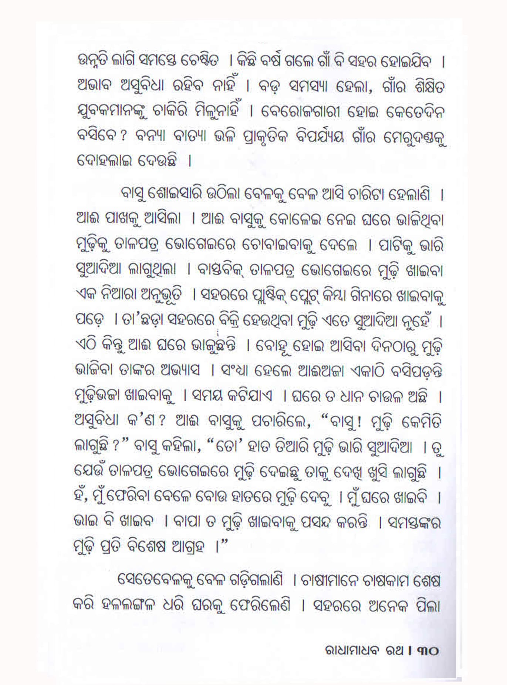
ଉନ୍ନତି ଲାଗି ସମସ୍ତେ ଚେଷ୍ଚିତ । କିଛି ବର୍ଷ ଗଲେ ଗାଁ ବି ସହର ହୋଇଯିବ | ଅଭାବ ଅସୁବିଧା ରହିବ ନାହିଁ । ବଡ଼ ସମସ୍ଯା ହେଲା, ଗାଁର ଶିକ୍ଷିତ ଯୁବକମାନଙ୍କୁ ଚାକିରି ମିଳୁନାହିଁ । ବେରୋଜଗାରୀ ହୋଇ କେତେଦିନ ବସିବେ ? ବନ୍ୟା ବାତ୍ୟା ଭଳି ପ୍ରାକୃତିକ ବିପର୍ଯ୍ୟୟ ଗାଁର ମେରୁଦଣ୍ଡକୁ ଦୋହଲାଇ ଦେଉଛି ।
ବାସୁ ଶୋଇସାରି ଉଠିଲା ବେଳକୁ ବେଳ ଆସି ଚାରିଟା ହେଲାଣି । ARN ପାଖକୁ ଆସିଲା | ଆଭ ବାସୁକୁ କୋଳେଇ ନେଇ ଘରେ ଭାଜିଥିବା ମୁଢ଼ିକୁ ତାଳପତ୍ର ଭୋଗେଇରେ ଚୋବାଇବାକୁ ଦେଲେ । ପାଟିକୁ ଭାରି ସୁଆଦିଆ ଲାଗୁଥିଲା । ବାସ୍ତବିକ୍ ତାଳପତ୍ର ଭୋଗେଇରେ ମୁଢ଼ି ଖାଇବା ଏକ ନିଆରା ଅନୁଭୂତି | ସହରରେ ପ୍ଲାଷ୍ଚିକ୍ ପ୍ଲେଟ୍ କିମ୍ବା ଗିନାରେ ଖାଇବାକୁ ପଡ଼େ । ତା'ଛଡ଼ା ସହରରେ ବିକ୍ରି ହେଉଥିବା ମୁଢ଼ି ଏତେ ସୁଆଦିଆ ନୁହେଁ | ଏଠି କିନ୍ତୁ ଆଉ ଘରେ ଭାଜୁଛନ୍ତି । ବୋହୂ ହୋଇ ଆସିବା ଦିନଠାରୁ ମୁଢ଼ି ଭାଜିବା ତାଙ୍କର ଅଭ୍ୟାସ | ସଂଧ୍ୟା ହେଲେ ଆଭଅଜା ଏକାଠି ବସିପଡ଼ନ୍ତି ମୁଢ଼ିଭଜା ଖାଇବାକୁ । ସମୟ କଟିଯାଏ । ଘରେ ତ ଧାନ ଚାଉଳ ଅଛି । ଅସୁବିଧା କ'ଣ? ଆଭ ବାସୁକୁ ପଚାରିଲେ, “ବାସୁ! ମୁଢ଼ି କେମିତି ଲାଗୁଛି ?”' ବାସୁ କହିଲା, “ ତୋ” ହାତ ତିଆରି ମୁଢ଼ି ଭାରି ସୁଆଦିଆ | ତୁ ଯେଉଁ ତାଳପତ୍ର ଭୋଗେଇରେ ମୁଢ଼ି ଦେଇଛୁ ତାକୁ ଦେଖୁ ଖୁସି ଲାଗୁଛି | ହଁ, ମୁଁ ଫେରିବା ବେଳେ ବୋଉ ହାତରେ ମୁଢ଼ି ଦେବୁ | ମୁଁ ଘରେ ଖାଇବି | ଭାଇ ବି ଖାଇବ । ବାପା ତ ମୁଢ଼ି ଖାଇବାକୁ ପସନ୍ଦ କରନ୍ତି । ସମସ୍ତଙ୍କର ମୁଢ଼ି ପ୍ରତି ବିଶେଷ ଆଗ୍ରହ 1”
ସେତେବେଳକୁ ବେଳ ଗଡ଼ିଗଲାଣି । ଚାଷୀମାନେ ଚାଷକାମ ଶେଷ କରି ହଳଲଙ୍ଗଳ ଧରି ଘରକୁ ଫେରିଲେଣି । ସହରରେ ଅନେକ ପିଲା
ରାଧାମାଧବ ରଥ । ୩୦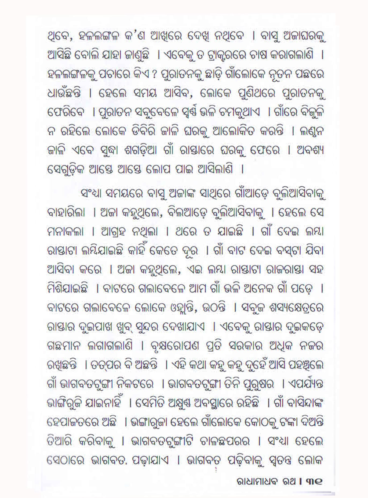
ଥିବେ, ହଳଲଙ୍ଗଳ କ'ଣ ଆଖିରେ ଦେଖ ନଥିବେ | ବାସୁ ଅଜାଘରକୁ ଆସିଛି ବୋଲି ଯାହା ଜାଣୁଛି । ଏବେକୁ ତ ଟ୍ରାକ୍ଟରରେ ଚାଷ କରାଗଲାଣି । ହଳଲଙ୍ଗଳକୁ ପଚାରେ କିଏ ? ପୁରାତନକୁ ଛାଡ଼ି ଗାଁଲୋକେ ନୂତନ ପଛରେ ଧାଉଁଛନ୍ତି । ହେଲେ ସମୟ ଆସିବ, ଲୋକେ ପୁଣିଥରେ ପୁରାତନକୁ ଫେରିବେ । ପୁରାତନ ସବୁବେଳେ ସ୍ଵର୍ଣ୍ବ ଭଳି ଚମକୁଥାଏ | ଗାଁରେ ବିଜୁଳି ନ ରହିଲେ ଲୋକେ ଡିବିରି ଜାଳି ଘରକୁ ଆଲୋକିତ କରନ୍ତି | ଲଣ୍ଡନ ଜାଳି ଏବେ ସୁଦ୍ଧା ଶଗଡ଼ିଆ ଗାଁ ରାସ୍ତାରେ ଘରକୁ ଫେରେ । ଅବଶ୍ଯ ସେଗୁଡ଼ିକ ଆସ୍ତେ ଆସ୍ତେ ଲୋପ ପାଇ ଆସିଲାଣି ।
ବାହାରିଲା । ଅଜା କହୁଥିଲେ, ବିଲଆଡ଼େ ବୁଲିଆସିବାକୁ । ହେଲେ ସେ ମନାକଲା | ଆଗ୍ରହ ନଥିଲା | ଥରେ ତ ଯାଇଛି | ଗୀ ଦେଇ ଲମ୍ବା ରାସ୍ତାଟା ଲମ୍ବିଯାଇଛି କାହିଁ କେତେ ଦୂର | ଗାଁ ବାଟ ଦେଇ ବସ୍ଟା ଯିବା ଆସିବା କରେ । ଅଜା କହୁଥିଲେ, ଏଇ ଲମ୍ବା ରାସ୍ତାଟା ରାଜରାସ୍ତା ସହ ମିଶିଯାଇଛି । ବାଟରେ ଗଲାବେଳେ ଆମ ଗାଁ ଭଳି ଅନେକ ଗାଁ ପଡ଼େ । ବାଟରେ ଗଲାବେଳେ ଲୋକେ ଓଃ୍ଲାନ୍ତି, ଉଠନ୍ତି । ସବୁଜ ଶସ୍ୟକ୍ଷେତ୍ରରେ ରାସ୍ତାର ଦୁଇପାଖ ଖୁବ୍ ସୁନ୍ଦର ଦେଖାଯାଏ । ଏବେକୁ ରାସ୍ତାର ଦୁଇକଡ଼େ ଗଛମାନ ଲଗାଗଲାଣି | ବୃକ୍ଷରୋପଣ ପ୍ରତି ସରକାର AR ନଜର ରଖିଛନ୍ତି । ତତ୍ପର ବି ଅଛନ୍ତି | ଏହି କଥା କହୁ କହୁ ଦୁହେଁ ଆସି ପହଞ୍ଚୁଲେ ଗାଁ ଭାଗବତଟୁଙ୍ଗୀ ନିକଟରେ | ଭାଗବତଟୁଙ୍ଗୀ ତିନି ପୁରୁଷର । ଏପର୍ଯ୍ୟନ୍ତ ଭାଙ୍ଗିରୁଜି ଯାଇନାହିଁ | ସେମିତି ଅକ୍ଷୁଣ୍ଠ ଅବସ୍ଥାରେ ରହିଛି । ଗାଁ ବାସିନ୍ଦାଙ୍କ ହେପାଜତରେ ଅଛି । ଭଙ୍ଗାରୁଜା ହେଲେ ଗାଁଲୋକେ କୋଠକୁ ଟଙ୍କା ଦିଅନ୍ତି ତିଆରି କରିବାକୁ | ଭାଗବତଟୁଙ୍ଗୀଟି ଚାଳଛପରର | Al ହେଲେ ସେଠାରେ ଭାଗବତ, ପଢ଼ାଯାଏ | ଭାଗବତ ପଢ଼ିବାକୁ ସ୍ଵତନ୍ତ୍ର ଲୋକ
। ରାଧାମାଧବ ରଥ । ୩୭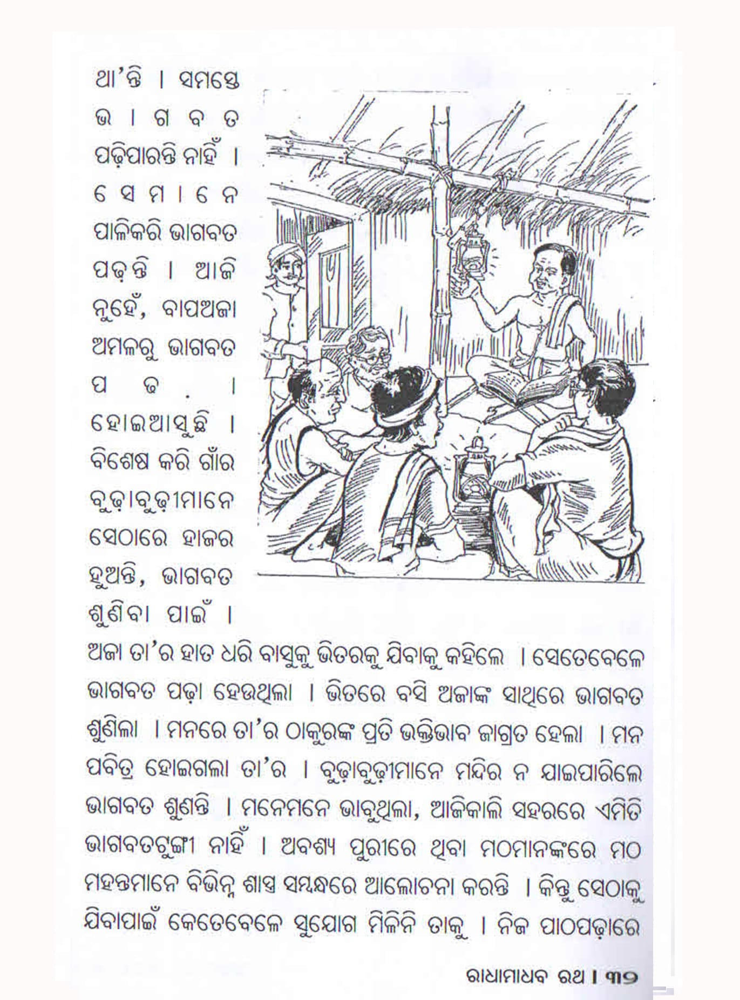
ସେଠାରେ ହାଜର 22: £ \ f ) ଶୁଣିବା ପାଇଁ | ଅଜା ତା'ର ହାତ ଧରି ବାସୁକୁ ଭିତରକୁ ଯିବାକୁ କହିଲେ । ସେତେବେଳେ ଭାଗବତ ପଢ଼ା ହେଉଥିଲା | ଭିତରେ ବସି ଅଜାଙ୍କ ACR ଭାଗବତ ଶୁଣିଲା | ମନରେ ତା'ର ଠାକୁରଙ୍କ ପ୍ରତି ଭକ୍ତିଭାବ ଜାଗ୍ରତ ହେଲା | ମନ ପବିତ୍ର ହୋଇଗଲା ତାର । ବୁଢ଼ାବୁଢ଼ୀମାନେ ମନ୍ଦିର ନ ଯାଇପାରିଲେ ଭାଗବତ ଶୁଣନ୍ତି । ମନେମନେ ଭାବୁଥିଲା, ଆଜିକାଲି ସହରରେ ଏମିତି ଭାଗବତଟୁଙ୍ଗୀ ନାହିଁ । ଅବଶ୍ୟ ପୁରୀରେ ଥିବା ମଠମାନଙ୍କରେ ମଠ ମହନ୍ତମାନେ ବିଭିନ୍ନ ଶାସ୍ତ୍ର ସମ୍ବନ୍ଧରେ ଆଲୋଚନା କରନ୍ତି । କିନ୍ତୁ ସେଠାକୁ ଯିବାପାଇଁ କେତେବେଳେ ସୁଯୋଗ ମିଳିନି ତାକୁ । ନିଜ ପାଠପଢ଼ାରେ ରାଧାମାଧବ ରଥ । ୩୭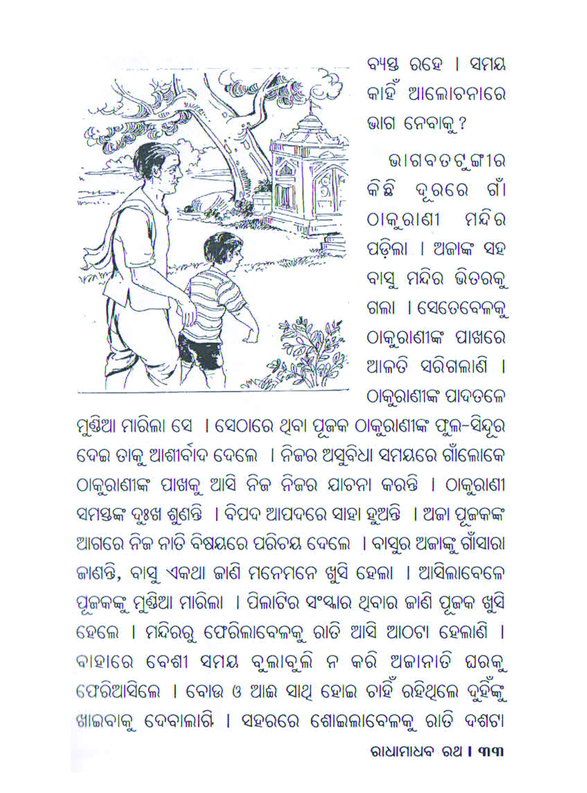
) ୩୩ ୦ ବ୍ୟସ୍ତ ରହେ | ସମୟ 7) ୮ ` ଅଥ ପଡ଼ିଲା | ଅଜାଙ୍କ ସହ ୯୦୯୭ ଏ ବାସୁ ମନ୍ଦିର ଭିତରକୁ = ˆ ଠାକୁରାଣୀଙ୍କ ପାଦତଳେ ମୁଣ୍ଡିଆ ମାରିଲା ସେ । ସେଠାରେ ଥିବା ପୂଜକ ଠାକୁରାଣୀଙ୍କ ଫୁଲ- ସିନ୍ଦୂର ଦେଇ ତାକୁ ଆଶୀର୍ବାଦ ଦେଲେ । ନିଜର ଅସୁବିଧା ସମୟରେ ଗାଁଲୋକେ ଠାକୁରାଣୀଙ୍କ ପାଖକୁ ଆସି ନିଜ ନିଜର ଯାଚନା କରନ୍ତି । ଠାକୁରାଣୀ ସମସ୍ତଙ୍କ ଦୁଃଖ ଶୁଣନ୍ତି । ବିପଦ ଆପଦରେ ସାହା ହୁଅନ୍ତି । ଅଜା ପୁଜକଙ୍କ ଆଗରେ ନିଜ ନାତି ବିଷୟରେ ପରିଚୟ ଦେଲେ । ବାସୁର ଅଜାଙ୍କୁ ଗାଁସାରା ଜାଣନ୍ତି, ବାସୁ ଏକଥା ଜାଣି ମନେମନେ ଖୁସି ହେଲା । ଆସିଲାବେଳେ ପୂଜକଙ୍କୁ ମୁଣ୍ଡିଆ ମାରିଲା | ପିଲାଟିର ସଂସ୍କାର ଥୁବାର ଜାଣି ପୂଜକ ଖୁସି ହେଲେ । ମନ୍ଦିରରୁ ଫେରିଲାବେଳକୁ ରାତି ଆସି ଆଠଟା ହେଲାଣି । ବାହାରେ ବେଶୀ ସମୟ ବୁଲାବୁଲି ନ କରି ଅଜାନାତି ଘରକୁ ଫେରିଆସିଲେ | ବୋଉ ଓ ଆଭ ସାଥର ହୋଇ ଚାହି ରହିଥିଲେ ଦୁହିଙ୍କୁ ଖାଇବାକୁ ଦେବାଲାଗି । ସହରରେ ଶୋଇଲାବେଳକୁ ରାତି ଦଶଟା ରାଧାମାଧବ ରଥ । ୩୩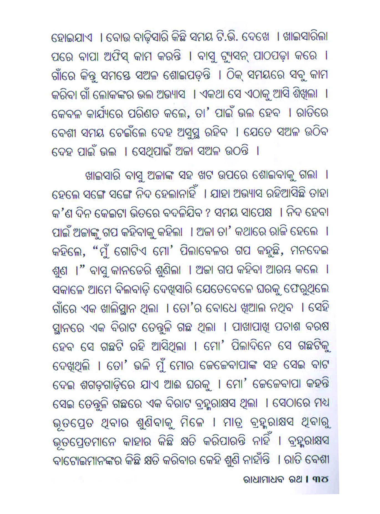
ହୋଇଯାଏ । ବୋଉ ବାଢ଼ିସାରି କିଛି ସମୟ ଟି.ଭି. ଦେଖେ | ଖାଇସାରିଲା ପରେ ବାପା ଅଫିସ୍ କାମ କରନ୍ତି । ବାସୁ ଟ୍ୟୁସନ୍ ପାଠପଢ଼ା କରେ । ଗାଁରେ କିନ୍ତୁ ସମସ୍ତେ ସଅଳ ଶୋଇପଡ଼ନ୍ତି । ଠିକ୍ ସମୟରେ ସବୁ କାମ କେବଳ କାର୍ଯ୍ୟରେ ପରିଣତ କଲେ, ତା' ପାଇଁ ଭଲ ହେବ | ରାତିରେ ବେଶୀ ସମୟ ଚେଇଁଲେ ଦେହ ଅସୁସ୍ତ ରହିବ | ଯେତେ ସଅଳ ଉଠିବ ଦେହ ପାଇଁ ଭଲ । ସେଥପାଇଁ ଅଜା ସଅଳ ଉଠନ୍ତି । ଖାଇସାରି ବାସୁ ଅଜାଙ୍କ ସହ ଖଟ ଉପରେ ଶୋଇବାକୁ ଗଲା । ହେଲେ ସଙ୍ଗେ ସଙ୍ଗେ ନିଦ ହେଲାନାହିଁ । ଯାହା ଅଭ୍ୟାସ ରହିଆସିଛି ତାହା କ'ଣ ଦିନ କେଇଟା ଭିତରେ ବଦଳିଯିବ ? ସମୟ ସାପେକ୍ଷ | ନିଦ ହେବା ପାଇଁ ଅଜାଙ୍କୁ ଗପ କହିବାକୁ କହିଲା । ଅଜା ତା” କଥାରେ ରାଜି ହେଲେ । କହିଲେ, “ ମୁଁ ଗୋଟିଏ ମୋ” ପିଲାବେଳର ଗପ କହୁଛି, ମନଦେଇ ଶୁଣ ।” ବାସୁ କାନଡେରି ଶୁଣିଲା । ଅଜା ଗପ କହିବା ଆରମ୍ଭ କଲେ । ସକାଳେ ଆମେ ବିଲବାଡ଼ି ଦେଖସାରି ଯେତେବେଳେ ଘରକୁ ଫେରୁଥିଲେ ଗାଁରେ ଏକ ଖାଲିସ୍ଥାନ ଥିଲା । ତୋଂର ବୋଧେ ଖୂଆଲ ନଥିବ । ସେହି ସ୍ଥାନରେ ଏକ ବିରାଟ ତେନ୍ତୁଳି ଗଛ ଥିଲା | ପାଖାପାଖୂ ପଚାଶ ବରଷ ହେବ ସେ ଗଛଟି ରହି ଆସିଥିଲା । ମୋ” ପିଲାଦିନେ ସେ ଗଛଟିକୁ ଦେଖିଥିଲି | 60" ଭଳି ମୁଁ ମୋର ଜେଜେବାପାଙ୍କ ସହ ସେଇ ବାଟ ଦେଇ ଶଗଡ଼ଗାଡ଼ିରେ ଯାଏ ଆଉ ଘରକୁ | ମୋ” ଜେଜେବାପା କହନ୍ତି ସେଇ ତେନ୍ତୁଳି ଗଛରେ ଏକ ବିରାଟ ବ୍ରହ୍ଳରାକ୍ଷସ ଥୁଲା | ସେଠାରେ ମଧ୍ଯ ଭୂତପ୍ରେତ ଥିବାର ଶୁଣିବାକୁ ମିଳେ । ମାତ୍ର ବ୍ରହ୍ମରାକ୍ଷସ AY ଭୂତପ୍ରେତମାନେ କାହାର କିଛି କ୍ଷତି କରିପାରନ୍ତି ନାହିଁ । ବ୍ରହ୍ମରାକ୍ଷସ ବାଟୋଇମାନଙ୍କର କିଛି କ୍ଷତି କରିବାର କେହି ଶୁଣି ନାହାଁନ୍ତି । ରାତି ବେଶୀ ରାଧାମାଧବ ରଥ । ୩୦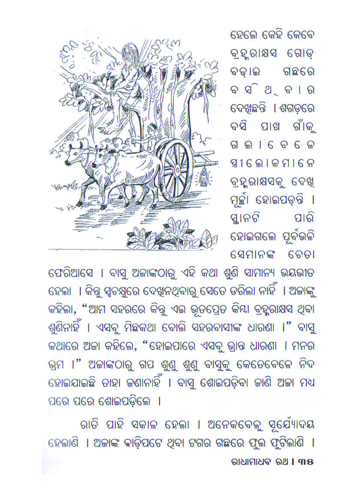
୮ ୪୭ 3 ` ସ୍ଥାନଟି ପାରି ସେମାନଙ୍କ ଚେତା ଫେରିଆସେ । ବାସୁ ଅଜାଙ୍କଠାରୁ ଏହି କଥା ଶୁଣି ସାମାନ୍ୟ ଭୟଭୀତ ହେଲା । କିନ୍ତୁ ସ୍ଵଚକ୍ଷୁରେ ଦେଖୁନଥିବାରୁ ସେତେ ଡରିଲା ନାହିଁ । ଅଜାଙ୍କୁ କହିଲା, “ ଆମ ସହରରେ କିନୁ ଏଇ ଭୁତପ୍ରେତ କିମ୍ବା ବ୍ରହ୍ମରାକ୍ଷସ ଥୁବା ଶୁଣିନାହି । ଏସବୁ ମିଛକଥା ବୋଲି ସହରବାସୀଙ୍କ ଧାରଣା ।” ବାସୁ କଥାରେ ଅଜା କହିଲେ, “ ହୋଇପାରେ ଏସବୁ ଭ୍ରାନ୍ତ ଧାରଣା | ମନର ଭ୍ରମ ।” ଅଜାଙ୍କଠାରୁ ଗପ ଶୁଣୁ ଶୁଣୁ ବାସୁକୁ କେତେବେଳେ ନିଦ ହୋଇଯାଇଛି ତାହା ଜଣାନାହ । ବାସୁ ଶୋଇପଡ଼ିବା ଜାଣି ଅଜା ମଧ୍ଯ ପରେ ପରେ ଶୋଇପଡ଼ିଲେ । ରାତି ପାହି ସକାଳ ହେଲା । ଅନେକବେଳୁ ସୂର୍ଯ୍ୟୋଦୟ ହେଲାଣି | ଅଜାଙ୍କ ଵାଡ଼ିପଟେ ଥୁବା ଟଗର ଗଛରେ ଫୁଲ ଫୁଟିଲାଣି | ରାଧାମାଧବ ରଥ । ୩୫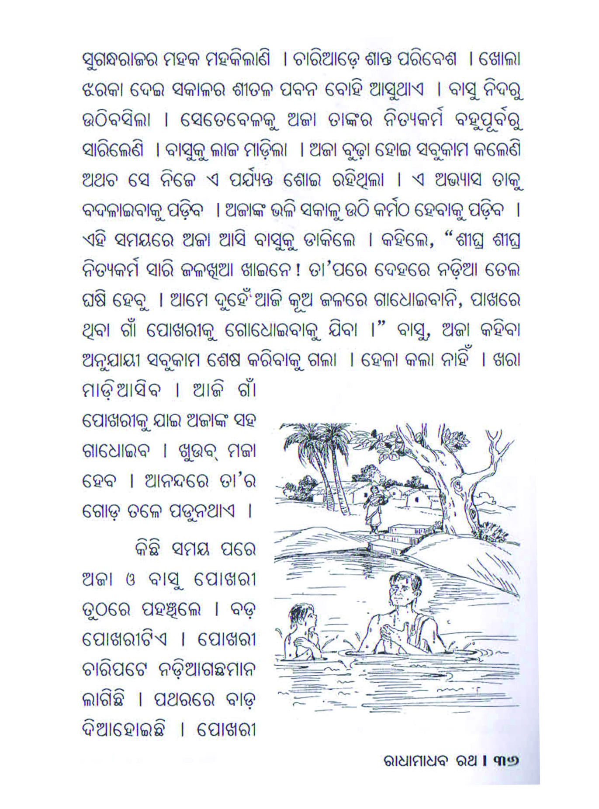
ସୁଗନ୍ଧରାଜର ମହକ ମହକିଲାଣି । ଚାରିଆଡ଼େ ଶାନ୍ତ ପରିବେଶ । ଖୋଲା ଝରକା ଦେଇ ସକାଳର ଶୀତଳ ପବନ ବୋହି ଆସୁଥାଏ । ବାସୁ ନିଦରୁ ଉଠିବସିଲା | ସେତେବେଳକୁ ଅଜା ତାଙ୍କର ନିତ୍ୟକର୍ମ ବହୁପୂର୍ବରୁ ସାରିଲେଣି । ବାସୁକୁ ଲାଜ ମାଡ଼ିଲା । ଅଜା ବୁଢ଼ା ହୋଇ ସବୁକାମ କଲେଣି ବଦଳାଇବାକୁ ପଡ଼ିବ । ଅଜାଙ୍କ ଭଳି ସକାଳୁ ଉଠି କର୍ମଠ ହେବାକୁ ପଡ଼ିବ | ଏହି ସମୟରେ ଅଜା ଆସି ବାସୁକୁ ଡାକିଲେ | କହିଲେ, “ ଶୀଘୂ ଶୀଘ୍ର ନିତ୍ୟକର୍ମ ସାରି ଜଳଖୂଆ ଖାଇନେ ! ତା'ପରେ ଦେହରେ ନଡ଼ିଆ ତେଲ ଘଷି ହେବୁ | ଆମେ ଦୁହେଁ. ଆଜି କୂଅ ଜଳରେ ଗାଧୋଇବାନି, ପାଖରେ ଥବା ଗାଁ ପୋଖରୀକୁ ଗୋଧୋଇବାକୁ ଯିବା ।” ବାସୁ, ଅଜା କହିବା ଅନୁଯାୟୀ ସବୁକାମ ଶେଷ କରିବାକୁ ଗଲା । ହେଳା କଲା ନାହିଁ । ଖରା ମାଡ଼ିଆସିବ । ଆଜି ଗାଁ ପୋଖରୀକୁ ଯାଇ ଅଜାଙ୍କ ସହ me କା ନ । କିଛି ସମୟ ପରେ 5 ଲକ. =.
ପୋଖରୀଟିଏ | ପୋଖରୀ ଚାରିପଟେ ନଡ଼ିଆଗଛମାନ “ ୭ ୦୭୭ ଦିଆହୋଇଛି । ପୋଖରୀ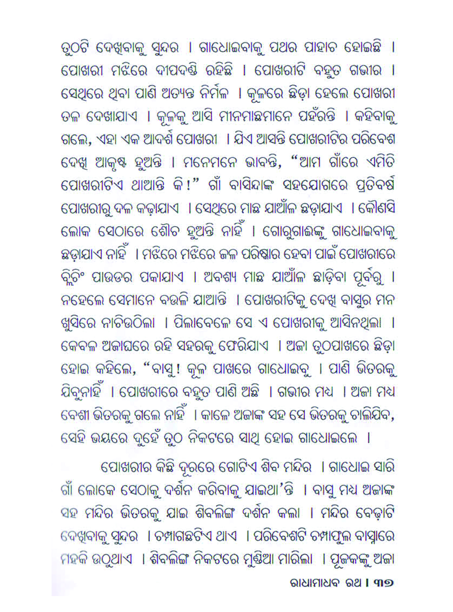
ତୁଠଟି ଦେଖୁବାକୁ ସୁନ୍ଦର । ଗାଧୋଇବାକୁ ପଥର ପାହାଚ ହୋଇଛି | ପୋଖରୀ ମଝିରେ ଦୀପଦଣ୍ଡି ରହିଛି । ପୋଖରୀଟି ବହୁତ ଗଭୀର | ସେଥୁରେ ଥୁବା ପାଣି ଅତ୍ୟନ୍ତ ନିର୍ମଳ । କୂଳରେ ଛିଡ଼ା ହେଲେ ପୋଖରୀ ତଳ ଦେଖାଯାଏ । କୁଳକୁ ଆସି ମୀନମାଛମାନେ ପହଁରନ୍ତି | କହିବାକୁ ଗଲେ, ଏହା ଏକ ଆଦର୍ଶ ପୋଖରୀ | ଯିଏ ଆସନ୍ତି ପୋଖରୀଟିର ପରିବେଶ ଦେଖ୍ ଆକୃଷ୍ଟ ହୁଅନ୍ତି । ମନେମନେ ଭାବନ୍ତି, “ଆମ ଗାଁରେ ଏମିତି ପୋଖରୀଟିଏ ଥାଆନ୍ତି କି ! ” ଗାଁ ବାସିନ୍ଦାଙ୍କ ସହଯୋଗରେ ପ୍ରତିବର୍ଷ ପୋଖରୀରୁ ଦଳ କଢ଼ାଯାଏ । ସେଥୁରେ ମାଛ ଯାଆଁଳ ଛଡ଼ାଯାଏ | କୌଣସି ଲୋକ ସେଠାରେ ଶୌଚ ହୁଅନ୍ତି ନାହିଁ | ଗୋରୁଗାଭଙ୍କୁ ଗାଧୋଇବାକୁ ଛଡ଼ାଯାଏ ନାହିଁ । ମଝିରେ ମଝିରେ ଜଳ ପରିଷ୍କାର ହେବା ପାଇଁ ପୋଖରୀରେ ବ୍ଲିବିଂ ପାଉଡର ପକାଯାଏ | ଅବଶ୍ୟ ମାଛ ଯାଆଁଳ ଛାଡ଼ିବା ପୂର୍ବରୁ | ନହେଲେ ସେମାନେ QAR ଯାଆନ୍ତି | ପୋଖରୀଟିକୁ ଦେଖ୍ ବାସୁର ମନ ଖୁସିରେ ନାଚିଉଠିଲା | ପିଲାବେଳେ ସେ ଏ ପୋଖରୀକୁ ଆସିନଥିଲା | କେବଳ ଅଜାଘରେ ରହି ସହରକୁ ଫେରିଯାଏ । ଅଜା ତୁଠପାଖରେ ଛିଡ଼ା ହୋଇ କହିଲେ, “ ବାସୁ ! କୂଳ ପାଖରେ ଗାଧୋଇବୁ | ପାଣି ଭିତରକୁ ଯିବୁନାହିଁ । ପୋଖରୀରେ ବହୁତ ପାଣି ଅଛି । ଗଭୀର ମଧ୍ଯ । ଅଜା ମଧ୍ଯ ବେଶୀ ଭିତରକୁ ଗଲେ ନାହିଁ | କାଳେ ଅଜାଙ୍କ ସହ ସେ ଭିତରକୁ ଚାଲିଯିବ, ସେହି ଭୟରେ ଦୁହେଁ ତୁଠ ନିକଟରେ A ହୋଇ ଗାଧୋଇଲେ | ପୋଖରୀର କିଛି ଦୂରରେ ଗୋଟିଏ ଶିବ ମନ୍ଦିର । ଗାଧୋଇ ସାରି ଗାଁ ଲୋକେ ସେଠାକୁ ଦର୍ଶନ କରିବାକୁ ଯାଇଥାନ୍ତି | ବାସୁ ମଧ୍ଯ ଅଜାଙ୍କ ସହ ମନ୍ଦିର ଭିତରକୁ ଯାଇ ଶିବଲିଙ୍ଗ ଦର୍ଶନ କଲା । ମନ୍ଦିର ବେଢ଼ାଟି ଦେଖବାକୁ ସୁନ୍ଦର | ଚମ୍ପାଗଛଟିଏ ଥାଏ | ପରିବେଶଟି ଚମ୍ପାଫୁଲ IYER ମହକି ଉଠୁଥାଏ । ଶିବଲିଙ୍ଗ ନିକଟରେ ମୁଣ୍ଡିଆ ମାରିଲା । ପୂଜକଙ୍କୁ ଅଜା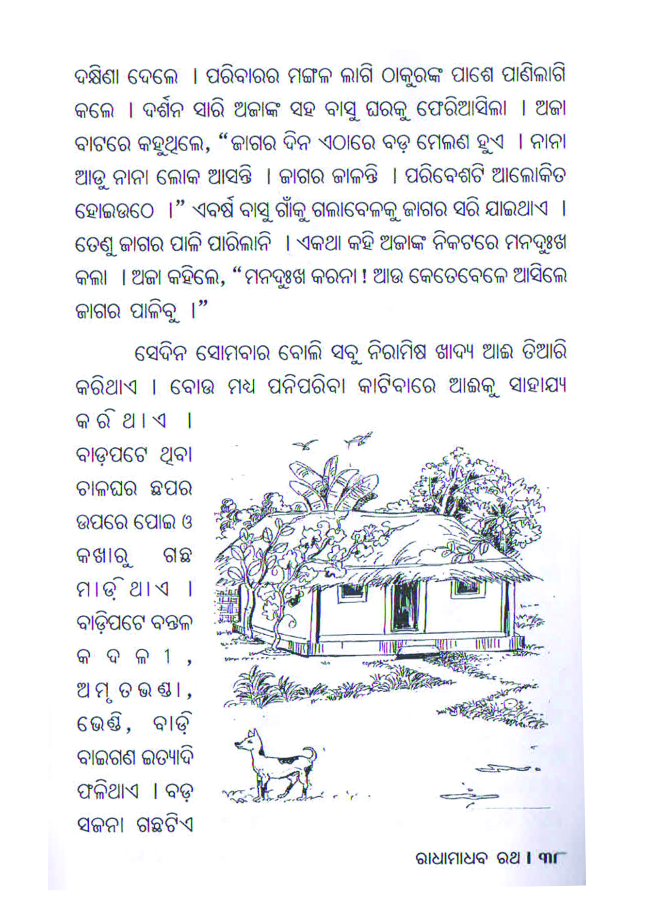
ଦକ୍ଷିଣା ଦେଲେ । ପରିବାରର ମଙ୍ଗଳ ଲାଗି ଠାକୁରଙ୍କ ପାଶେ ପାଣିଲାଗି କଲେ । ଦର୍ଶନ ସାରି ଅଜାଙ୍କ ସହ ବାସୁ ଘରକୁ ଫେରିଆସିଲା । ଅଜା ବାଟରେ କହୁଥିଲେ, “ ଜାଗର ଦିନ ଏଠାରେ ବଡ଼ ମେଲଣ ହୁଏ | ନାନା ଆଡୁ ନାନା ଲୋକ ଆସନ୍ତି | ଜାଗର ଜାଳନ୍ତି । ପରିବେଶଟି ଆଲୋକିତ ହୋଇଉଠେ । ” ଏବର୍ଷ ବାସୁ ଗାଁକୁ ଗଲାବେଳକୁ ଜାଗର ସରି ଯାଇଥାଏ । ତେଣୁ ଜାଗର ପାଳି ପାରିଲାନି । ଏକଥା କହି ଅଜାଙ୍କ ନିକଟରେ ମନଦୁଃଖ କଲା । ଅଜା କହିଲେ, “ ମନଦୁଃଖ କରନା ! ଆଉ କେତେବେଳେ ଆସିଲେ ଜାଗର ପାଳିବୁ ।” ସେଦିନ ସୋମବାର ବୋଲି ସବୁ ନିରାମିଷ ଖାଦ୍ୟ ଆଭ ତିଆରି କରିଥାଏ | ବୋଉ ମଧ୍ୟ ପନିପରିବା କାଟିବାରେ ଆଶକୁ ସାହାଯ୍ୟ ବାଇଗଣ ଇତ୍ୟାଦି ୯୮ 5 ସଜନା ଗଛଟିଏ ¦ ରାଧାମାଧବ ରଥ । ୩୮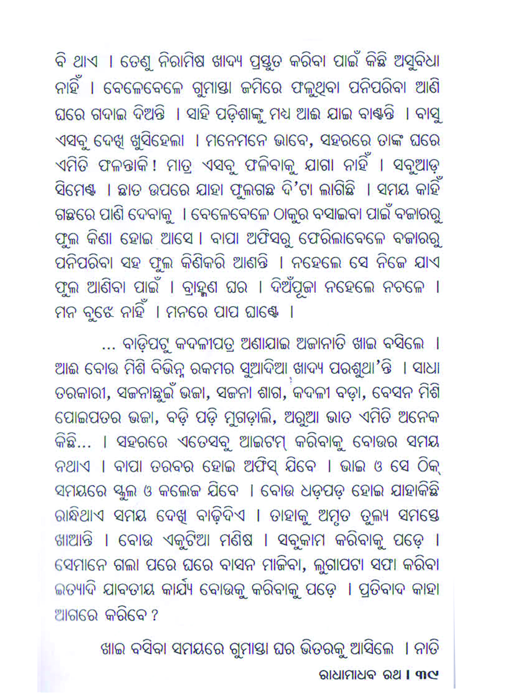
ବି ଥାଏ । ତେଣୁ ନିରାମିଷ ଖାଦ୍ୟ ପ୍ରସ୍ତୁତ କରିବା ପାଇଁ କିଛି ଅସୁବିଧା ନାହିଁ । ବେଳେବେଳେ ଗୁମାସ୍ତା ଜମିରେ ଫଳୁଥିବା ପନିପରିବା ଆଣି ଘରେ ଗଦାଇ ଦିଅନ୍ତି | AL ପଡ଼ିଶାଙ୍କୁ ମଧ୍ଯ ଆଇ ଯାଇ ବାଣ୍ଟନ୍ତି | ବାସୁ ଏସବୁ ଦେଖ ଖୁସିହେଲା । ମନେମନେ ଭାବେ, ସହରରେ ତାଙ୍କ ଘରେ ଏମିତି ଫଳନ୍ତାକି! ମାତ୍ର ଏସବୁ ଫଳିବାକୁ ଯାଗା ନାହିଁ | ସବୁଆଡ଼ ସିମେଣ୍ଟ । ଛାତ ଉପରେ ଯାହା ଫୁଲଗଛ ଦି'ଟା ଲାଗିଛି । ସମୟ କାହିଁ ଗଛରେ ପାଣି ଦେବାକୁ । ବେଳେବେଳେ ଠାକୁର ବସାଇବା ପାଇଁ ବଜାରରୁ ଫୁଲ କିଣା ହୋଇ ଆସେ । ବାପା ଅଫିସରୁ ଫେରିଲାବେଳେ ବଜାରରୁ ପନିପରିବା ସହ ଫୁଲ କିଣିକରି ଆଣନ୍ତି । ନହେଲେ ସେ ନିଜେ ଯାଏ ଫୁଲ ଆଣିବା ପାଇଁ । ବ୍ରାହ୍ମଣ ଘର । ଦିଅଁପୂଜା ନହେଲେ ନଚଳେ । ମନ ବୁଝେ ନାହିଁ | ମନରେ ପାପ ଘାଣ୍ଟେ | .... ବାଡ଼ିପଟୁ କଦଳୀପତ୍ର ଅଣାଯାଇ ଅଜାନାତି ଖାଇ ବସିଲେ | ଆଇ ବୋଉ ମିଶି ବିଭିନ୍ନ ରକମର ସୁଆଦିଆ ଖାଦ୍ୟ ପରଶୁଥା'ନ୍ତି | ସାଧା ତରକାରୀ, ସଜନାଛୁଇଁ ଭଜା, ସଜନା ଶାଗ, କଦଳୀ ବଢ଼ା, ବେସନ ମିଶି ପୋଇପତର ଭଜା, ବଡ଼ି ପଡ଼ି ମୁଗଡ଼ାଲି, ଅରୁଆ ଭାତ ଏମିତି ଅନେକ କିଛି.. | ସହରରେ ଏତେସବୁ ଆଇଟମ୍ କରିବାକୁ ବୋଉର ସମୟ ନଥାଏ | ବାପା ତରବର ହୋଇ ଅଫିସ୍ ଯିବେ । ଭାଇ ଓ ସେ ଠିକ୍ ସମୟରେ ସ୍କୁଲ ଓ କଲେଜ ଯିବେ । ବୋଉ ଧଡ଼ପଡ଼ ହୋଇ ଯାହାକିଛି ରାନ୍ଧିଥାଏ ସମୟ ଦେଖ୍ ବାଢ଼ିଦିଏ | ତାହାକୁ ଅମୃତ ତୁଲ୍ଯ ସମସ୍ତେ ଖାଆନ୍ତି । ବୋଉ ଏକୁଟିଆ ମଣିଷ । ସବୁକାମ କରିବାକୁ ପଡ଼େ । ସେମାନେ ଗଲା ପରେ ଘରେ ବାସନ ମାଜିବା, ଲୁଗାପଟା ସଫା କରିବା ଇତ୍ୟାଦି ଯାବତୀୟ କାର୍ଯ୍ୟ ବୋଉକୁ କରିବାକୁ ପଡ଼େ । ପ୍ରତିବାଦ କାହା ଆଗରେ କରିବେ ? ଖାଇ ବସିବା ସମୟରେ ଗୁମାସ୍ତା ଘର ଭିତରକୁ ଆସିଲେ । ନାତି ରାଧାମାଧବ ରଥ । ୩୯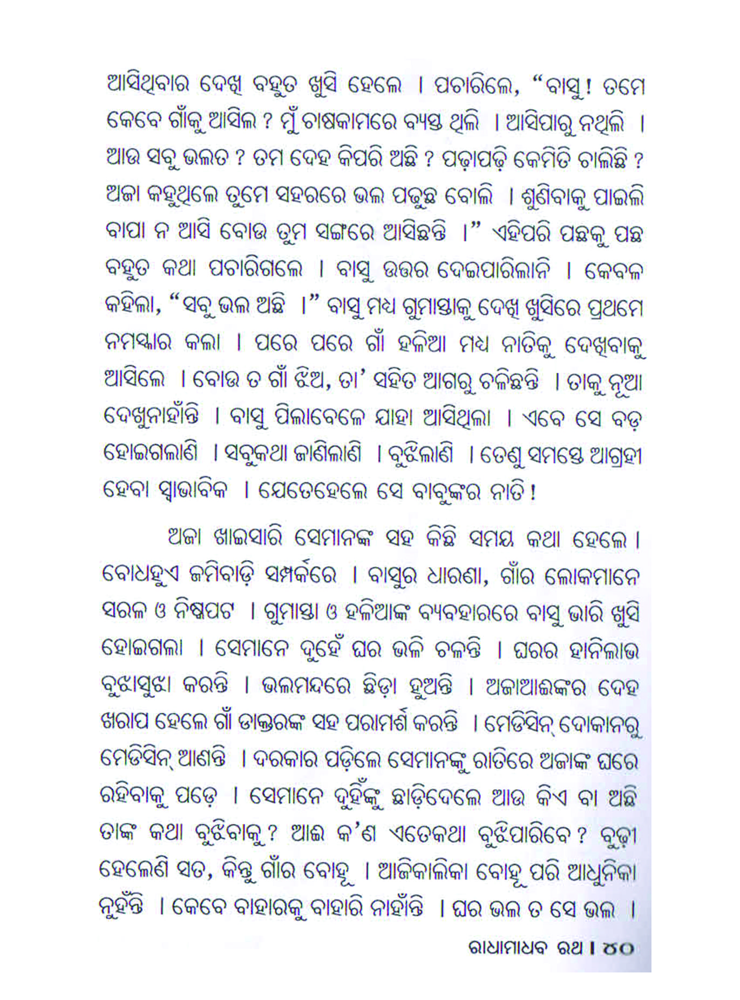
ଆସିଥିବାର ଦେଖ ବହୁତ ଖୁସି ହେଲେ | ପଚାରିଲେ, “ ବାସୁ! ତମେ କେବେ ଗାଁକୁ ଆସିଲ ¢ ମୁଁ ଚାଷକାମରେ ବ୍ୟସ୍ତ ଥିଲି | ଆସିପାରୁ ନଥିଲି | ଆଉ ସବୁ ଭଲତ ? ତମ ଦେହ କିପରି ଅଛି ? ପଢ଼ାପଢ଼ି କେମିତି ଚାଲିଛି ? ଅଜା କହୁଥିଲେ ତୁମେ ସହରରେ ଭଲ ପଢୁଛ ବୋଲି । ଶୁଣିବାକୁ ପାଇଲି ବାପା ନ ଆସି ବୋଉ ତୁମ ସଙ୍ଗରେ ଆସିଛନ୍ତି ।” ଏହିପରି ପଛକୁ ପଛ ବହୁତ କଥା ପଚାରିଗଲେ | AY ଉତ୍ତର ଦେଇପାରିଲାନି | କେବଳ କହିଲା, “ ସବୁ ଭଲ ଅଛି 1” ବାସୁ ମଧେ ଗୁମାସାକୁ ଦେଖ ଖୁସିରେ ପ୍ରଥମେ ନମସ୍କାର କଲା | ପରେ ପରେ ଗାଁ ହଳିଆ ମଧ୍ଯ ନାତିକୁ ଦେଖୁବାକୁ ଆସିଲେ । ବୋଉ ତ ଗାଁ ଝିଅ, ତା” ସହିତ ଆଗରୁ ଚଳିଛନ୍ତି | ତାକୁ ନୂଆ ଦେଖୁନାହାଁନ୍ତି । ବାସୁ ପିଲାବେଳେ ଯାହା ଆସିଥିଲା । ଏବେ ସେ ବଡ଼ ହୋଇଗଲାଣି । ସବୁକଥା ଜାଣିଲାଣି । ବୁଝିଲାଣି । ତେଣୁ ସମସ୍ତେ ଆଗ୍ରହୀ ହେବା ସ୍ଵାଭାବିକ । ଯେତେହେଲେ ସେ ବାବୁଙ୍କର ନାତି ! ଅଜା ଖାଇସାରି ସେମାନଙ୍କ ସହ କିଛି ସମୟ କଥା ହେଲେ । ବୋଧହୁଏ ଜମିବାଡ଼ି ସମ୍ପର୍କରେ । ବାସୁର ଧାରଣା, ଗାଁର ଲୋକମାନେ ସରଳ ଓ ନିଷ୍କପଟ । ଗୁମାସ୍ତା ଓ ହଳିଆଙ୍କ ବ୍ୟବହାରରେ ବାସୁ ଭାରି ଖୁସି ହୋଇଗଲା । ସେମାନେ ଦୁହେଁ ଘର ଭଳି ଚଳନ୍ତି | ଘରର ହାନିଲାଭ ବୁଝାସୁଝା କରନ୍ତି । ଭଲମନ୍ଦରେ ଛିଡ଼ା ହୁଅନ୍ତି । ଅଜାଆଇଙ୍କର ଦେହ ଖରାପ ହେଲେ ଗାଁ ଡାକ୍ତରଙ୍କ ସହ ପରାମର୍ଶ କରନ୍ତି । ମେଡିସିନ୍ ଦୋକାନରୁ ମେଡିସିନ୍ ଆଣନ୍ତି । ଦରକାର ପଡ଼ିଲେ ସେମାନଙ୍କୁ ରାତିରେ ଅଜାଙ୍କ ଘରେ ରହିବାକୁ ପଡ଼େ | ସେମାନେ ଦୁହିଁଙ୍କୁ ଛାଡ଼ିଦେଲେ ଆଉ କିଏ ବା ଅଛି ତାଙ୍କ କଥା ବୁଝିବାକୁ ZN କ'ଣ ଏତେକଥା ବୁଝିପାରିବେ ? ବୁଢ଼ୀ ହେଲେଣି ସତ, କିନ୍ତୁ ଗାଁର ବୋହୂ | ଆଜିକାଲିକା ବୋହୂ ପରି ଆଧୁନିକା ନୁହଁନ୍ତି । କେବେ ବାହାରକୁ ବାହାରି ନାହାଁନ୍ତି । ଘର ଭଲ ତ ସେ ଭଲ |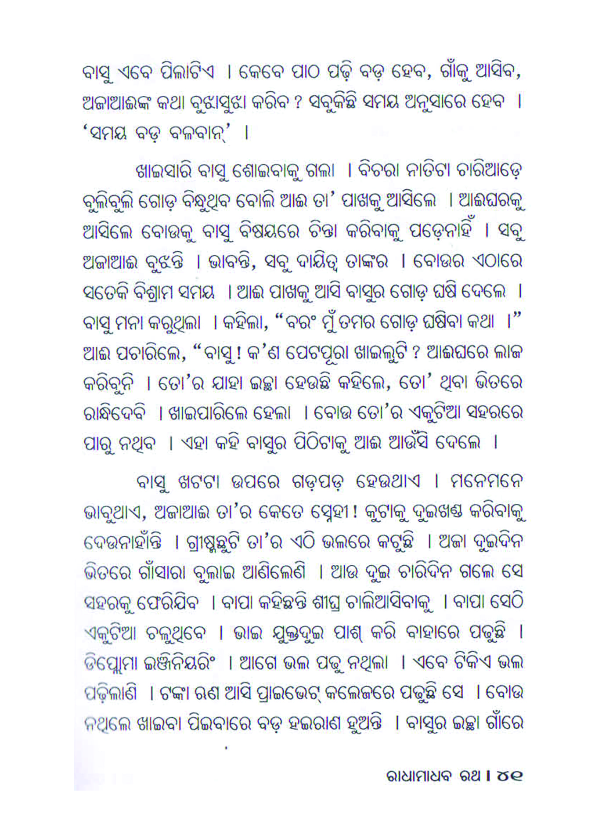
ବାସୁ ଏବେ ପିଲାଟିଏ । କେବେ ପାଠ ପଢ଼ି ବଡ଼ ହେବ, ଗାଁକୁ ଆସିବ, “ସମୟ ବଡ଼ ବଳବାନ୍, | ଖାଇସାରି ବାସୁ ଶୋଇବାକୁ ଗଲା । ବିଚରା ନାତିଟା ଚାରିଆଡ଼େ ବୁଲିବୁଲି ଗୋଡ଼ ବିନ୍ଧୁଥବ ବୋଲି ଆଣ ତା” ପାଖକୁ ଆସିଲେ । ଆଇଘରକୁ ଆସିଲେ ବୋଉକୁ ବାସୁ ବିଷୟରେ ଚିନ୍ତା କରିବାକୁ ପଡ଼େନାହିଁ । ସବୁ ଅଜାଆଭ ବୁଝନ୍ତି | ଭାବନ୍ତି, ସବୁ ଦାୟିତ୍ବ ତାଙ୍କର । ବୋଉର ଏଠାରେ ସତେକି ବିଶ୍ରାମ ସମୟ | ଆଇ ପାଖକୁ ଆସି ବାସୁର ଗୋଡ଼ ଘଷି ଦେଲେ | ବାସୁ ମନା କରୁଥଲା | କହିଲା, “ ବରଂ ମୁଁ ତମର ଗୋଡ଼ ଘଷିବା କଥା 1” ଆଭଠ ପଚାରିଲେ, “ ବାସୁ! କ'ଣ ପେଟପୁରା ଖାଇଲୁଟି ? ଆଭଘରେ ଲାଜ କରିବୁନି | ତୋ'ର ଯାହା ଇଚ୍ଛା ହେଉଛି କହିଲେ, ତୋ” ଥିବା ଭିତରେ ରାନ୍ଧିଦେବି । ଖାଇପାରିଲେ ହେଲା | ବୋଉ ତୋ ର ଏକୁଟିଆ ସହରରେ ପାରୁ ନଥବ । ଏହା କହି ବାସୁର ପିଠିଟାକୁ ଆଇ ଆଉଁସି ଦେଲେ | ବାସୁ ଖଟଟା ଉପରେ ଗଡ଼ପଡ଼ ହେଉଥାଏ । ମନେମନେ ଭାବୁଥାଏ, ଅଜାଆଭ ତା'ର କେତେ ସ୍ନେହୀ ! କୁଟାକୁ ଦୁଇଖଣ୍ଡ କରିବାକୁ ଦେଉନାହାଁନ୍ତି | ଗ୍ରୀଷ୍ମଛୁଟି ତା'ର ଏଠି ଭଲରେ କଟୁଛି | ଅଜା ଦୁଇଦିନ ଭିତରେ ଗାଁସାରା ବୁଲାଇ ଆଣିଲେଣି । ଆଉ ଦୁଇ ଚାରିଦିନ ଗଲେ ସେ ସହରକୁ ଫେରିଯିବ । ବାପା କହିଛନ୍ତି ଶୀଘ୍ର ଚାଲିଆସିବାକୁ । ବାପା ସେଠି ଏକୁଟିଆ R069 | ଭାଇ ଯୁକ୍ତଦୁଇ ପାଶ୍ କରି ବାହାରେ ପଢୁଛି | ଡିପ୍ଲୋମା ଇଞ୍ଜନିୟରିଂ । ଆଗେ ଭଲ ପଢୁ ନଥିଲା | ଏବେ ଟିକିଏ ଭଲ ପଢ଼ିଲାଣି । ଟଙ୍କା ରଣ ଆସି ପ୍ରାଇଭେଟ୍ କଲେଜରେ ପଢୁଛି ସେ । ବୋଉ ନଥିଲେ ଖାଇବା ପିଇବାରେ ବଡ଼ ହଇରାଣ ହୁଅନ୍ତି । ବାସୁର ଇଚ୍ଛା ଗାଁରେ ରାଧାମାଧବ ରଥ । ୪୭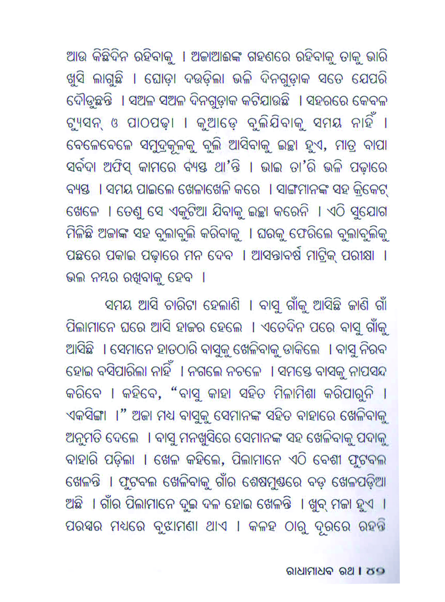
ଆଉ କିଛିଦିନ ରହିବାକୁ । ଅଜାଆଭଙ୍କ ଗହଣରେ ରହିବାକୁ ତାକୁ ଭାରି ଖୁସି ଲାଗୁଛି । ଘୋଡ଼ା ଦଉଡ଼ିଲା ଭଳି ଦିନଗୁଡ଼ାକ ସତେ ଯେପରି ଦୌଡୁଛନ୍ତି । ସଅଳ ସଅଳ ଦିନଗୁଡ଼ାକ କଟିଯାଉଛି । ସହରରେ କେବଳ ଟ୍ୟୁସନ୍ ଓ ପାଠପଢ଼ା | କୁଆଡ଼େ ବୁଲିଯିବାକୁ ସମୟ ନାହିଁ | ବେଳେବେଳେ ସମୁଦ୍ରକୂଳକୁ ବୁଲି ଆସିବାକୁ ଇଚ୍ଛା ହୁଏ, ମାତ୍ର ବାପା ସର୍ବଦା ଅଫିସ୍ କାମରେ ବ୍ୟସ୍ତ ଥା'ନ୍ତି । ଭାଇ ତା'ରି ଭଳି ପଢ଼ାରେ ବ୍ୟସ୍ତ । ସମୟ ପାଇଲେ ଖେଳାଖେଳି କରେ । ସାଙ୍ଗମାନଙ୍କ ସହ କ୍ରିକେଟ୍ ଖେଳେ । ତେଣୁ ସେ ଏକୁଟିଆ ଯିବାକୁ ଇଚ୍ଛା କରେନି । ଏଠି ସୁଯୋଗ ମିଳିଛି ଅଜାଙ୍କ ସହ ବୁଲାବୁଲି କରିବାକୁ | ଘରକୁ ଫେରିଲେ ବୁଲାବୁଲିକୁ ପଛରେ ପକାଇ ପଢ଼ାରେ ମନ ଦେବ । ଆସନ୍ତାବର୍ଷ ମାଟ୍ରିକ୍ ପରୀକ୍ଷା ।
ଭଲ ନମ୍ବର ରଖୁବାକୁ ହେବ | ସମୟ ଆସି ଚାରିଟା ହେଲାଣି । ବାସୁ ଗାଁକୁ ଆସିଛି ଜାଣି ଗାଁ ପିଲାମାନେ ଘରେ ଆସି ହାଜର ହେଲେ । ଏତେଦିନ ପରେ ବାସୁ ଗାଁକୁ ଆସିଛି | ସେମାନେ ହାତଠାରି ବାସୁକୁ ଖେଳିବାକୁ ଡାକିଲେ | ବାସୁ ନିରବ ହୋଇ ବସିପାରିଲା ନାହିଁ । ନଗଲେ ନଚଳେ । ସମସ୍ତେ ବାସକୁ ନାପସନ୍ଦ କରିବେ | କହିବେ, “ବାସୁ କାହା ସହିତ ମିଳାମିଶା କରିପାରୁନି | ଏକସିଙ୍ଗା ।” ଅଜା ମଧ୍ଯ ବାସୁକୁ ସେମାନଙ୍କ ସହିତ ବାହାରେ ଖେଳିବାକୁ ଅନୁମତି ଦେଲେ । ବାସୁ ମନଖୁସିରେ ସେମାନଙ୍କ ସହ ଖେଳିବାକୁ ପଦାକୁ ବାହାରି ପଡ଼ିଲା | ଖେଳ କହିଲେ, ପିଲାମାନେ ଏଠି ବେଶୀ ଫୁଟବଲ ଖେଳନ୍ତି । ଫୁଟବଲ ଖେଳିବାକୁ ଗାଁର ଶେଷମୁଣ୍ଡରେ ବଡ଼ ଖେଳପଡ଼ିଆ ଅଛି । ଗାଁର ପିଲାମାନେ ଦୁଇ ଦଳ ହୋଇ ଖେଳନ୍ତି । ଖୁବ୍ ମଜା ହୁଏ । ପରସ୍ପର ମଧ୍ଯରେ ବୁଝାମଣା ଥାଏ | କଳହ ଠାରୁ ଦୂରରେ ରହନ୍ତି ରାଧାମାଧବ ରଥ | ଥ ୨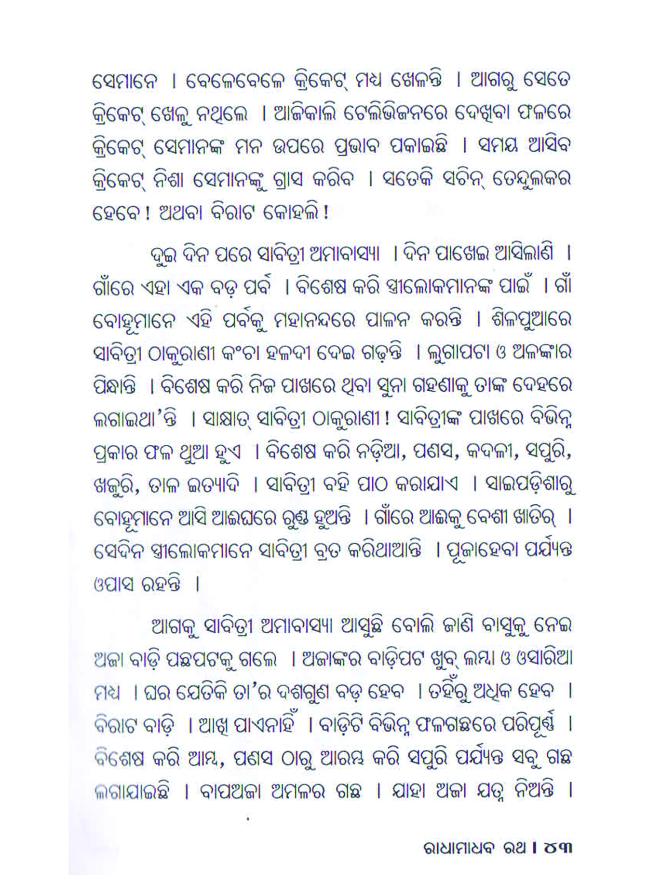
ସେମାନେ । ବେଳେବେଳେ କ୍ରିକେଟ୍ ମଧ୍ଯ ଖେଳନ୍ତି । ଆଗରୁ ସେତେ କ୍ରିକେଟ୍ ଖେଳୁ ନଥିଲେ | ଆଜିକାଲି ଟେଲିଭିଜନରେ EHR ଫଳରେ କ୍ରିକେଟ୍ ସେମାନଙ୍କ ମନ ଉପରେ ପ୍ରଭାବ ପକାଇଛି । ସମୟ ଆସିବ କ୍ରିକେଟ୍ ନିଶା ସେମାନଙ୍କୁ ଗ୍ରାସ କରିବ । ସତେକି ସଚିନ୍ ତେନ୍ଦୁଲକର ହେବେ ! ଅଥବା ବିରାଟ କୋହଲି ! ଦୁଇ ଦିନ ପରେ ସାବିତ୍ରୀ ଅମାବାସ୍ୟା । ଦିନ ପାଖେଇ ଆସିଲାଣି । ଗାଁରେ ଏହା ଏକ ବଡ଼ ପର୍ବ | ବିଶେଷ କରି ସ୍ତ୍ରୀଲୋକମାନଙ୍କ ପାଇଁ | ଗାଁ ବୋହୂମାନେ ଏହି ପର୍ବକୁ ମହାନନ୍ଦରେ ପାଳନ କରନ୍ତି । ଶିଳପୁଆରେ ସାବିତ୍ରୀ ଠାକୁରାଣୀ କଂଚା ହଳଦୀ ଦେଇ ଗଢ଼ନ୍ତି । ଲୁଗାପଟା ଓ ଅଳଙ୍କାର ପିନ୍ଧାନ୍ତି । ବିଶେଷ କରି ନିଜ ପାଖରେ ଥିବା ସୁନା ଗହଣାକୁ ତାଙ୍କ ଦେହରେ ଲଗାଇଥାନ୍ତି | ସାକ୍ଷାତ୍ ସାବିତ୍ରୀ ଠାକୁରାଣୀ ! ସାବିତ୍ରୀଙ୍କ ପାଖରେ ବିଭିନ୍ନ ପ୍ରକାର ଫଳ ଥୁଆ ହୁଏ । ବିଶେଷ କରି ନଡ଼ିଆ, ପଣସ, କଦଳୀ, ସପୁରି, ଖଜୁରି, ତାଳ ଇତ୍ୟାଦି । ସାବିତ୍ରୀ ବହି ପାଠ କରାଯାଏ । ସାଇପଡ଼ିଶାରୁ ବୋହୂମାନେ ଆସି ଆଭଘରେ ରୁଣ୍ଡ ହୁଅନ୍ତି । ଗାଁରେ ଆଭକୁ ବେଶୀ ଖାତିର୍ । ସେଦିନ ସ୍ତ୍ରୀଲୋକମାନେ ସାବିତ୍ରୀ ବ୍ରତ କରିଥାଆନ୍ତି | ପୂଜାହେବା ପର୍ଯ୍ୟନ୍ତ ଓପାସ ରହନ୍ତି । ଆଗକୁ ସାବିତ୍ରୀ ଅମାବାସ୍ୟା ଆସୁଛି ବୋଲି ଜାଣି ବାସୁକୁ ନେଇ ଅଜା ବାଡ଼ି ପଛପଟକୁ ଗଲେ । ଅଜାଙ୍କର ବାଡ଼ିପଟ ଖୁବ୍ ଲମ୍ବା ଓ ଓସାରିଆ ମଧ୍ଯ | ଘର ଯେତିକି ତା 'ର ଦଶଗୁଣ ବଡ଼ ହେବ । ତହିଁରୁ ଅଧ୍କ ହେବ | ବିରାଟ ବାଡ଼ି | ଆଖ ପାଏନାହିଁ । ବାଡ଼ିଟି ବିଭିନ୍ନ ଫଳଗଛରେ ପରିପୂର୍ଣ୍ଣ | ବିଶେଷ କରି ଆମ୍ବ, ପଣସ ଠାରୁ ଆରମ୍ଭ କରି ସପୁରି ପର୍ଯ୍ୟନ୍ତ ସବୁ ଗଛ ଲଗାଯାଇଛି । ବାପଅଜା ଅମଳର ଗଛ । ଯାହା ଅଜା ଯତ୍ନ ନିଅନ୍ତି । ରାଧାମାଧବ ରଥ । ୦୩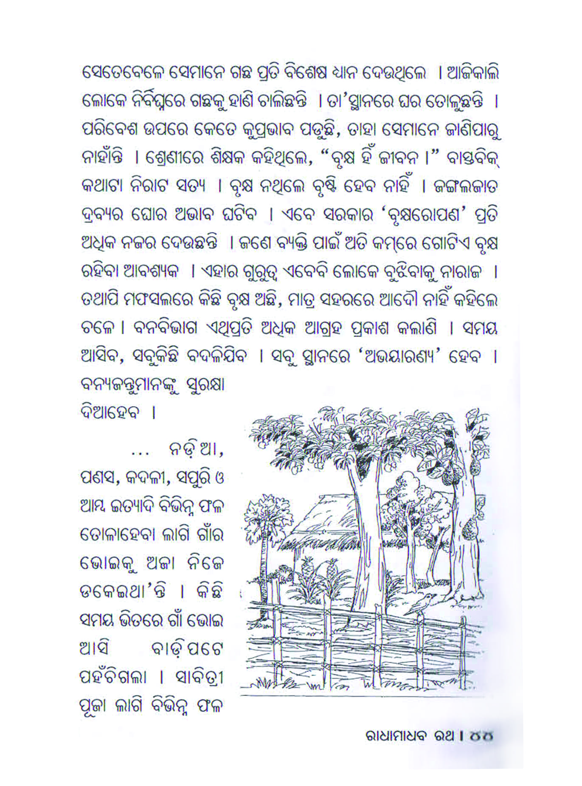
ସେତେବେଳେ ସେମାନେ ଗଛ ପ୍ରତି ବିଶେଷ ଧ୍ଯାନ ଦେଉଥିଲେ । ଆଜିକାଲି ଲୋକେ ନିବିଘ୍ନରେ ଗଛକୁ ହାଣି ଚାଲିଛନ୍ତି | ତାଂସ୍ଥାନରେ ଘର ତୋଳୁଛନ୍ତି | ପରିବେଶ ଉପରେ କେତେ କୁପ୍ରଭାବ ପଡୁଛି, ତାହା ସେମାନେ ଜାଣିପାରୁ ନାହାଁନ୍ତି । ଶ୍ରେଣୀରେ ଶିକ୍ଷକ କହିଥଲେ, “ ବୃକ୍ଷ ହିଁ ଜୀବନ | ” ବାସବିକ୍ ଦ୍ରବ୍ୟର ଘୋର ଅଭାବ ଘଟିବ | ଏବେ ସରକାର ‹ ବୃକ୍ଷରୋପଣ” ପ୍ରତି RIF ନଜର ଦେଉଛନ୍ତି | ଜଣେ ବ୍ୟକ୍ତି ପାଇଁ ଅତି କମ୍ରେ ଗୋଟିଏ ବୃକ୍ଷ ରହିବା ଆବଶ୍ୟକ । ଏହାର ଗୁରୁତ୍ବ ଏବେବି ଲୋକେ ବୁଝିବାକୁ ନାରାଜ । ତଥାପି ମଫସଲରେ କିଛି ବୃକ୍ଷ ଅଛି, ମାତ୍ର ସହରରେ ଆଦୌ ନାହି କହିଲେ ଚଳେ | ବନବିଭାଗ ଏଥୂପ୍ରତି AYR ଆଗ୍ରହ ପ୍ରକାଶ କଲାଣି | ସମୟ ଆସିବ, ସବୁକିଛି ବଦଳିଯିବ | ସବୁ ସ୍ଥାନରେ “ଅଭୟାରଣ୍ଯ” ହେବ | ବନ୍ୟଜନ୍ତୁମାନଙ୍କୁ ସୁରକ୍ଷା ପଣସ, କଦଳୀ, ସପୁର ଓ \ ୪ | ¥) ୪ i ସମୟ ଭିତରେ ଗାଁ ଭୋଇ _ ` =; (° 0 ପୁଜା ଲାଗି ବିଭିନ୍ନ ଫଳ ରାଧାମାଧବ ରଥ | ଠ୦ଥ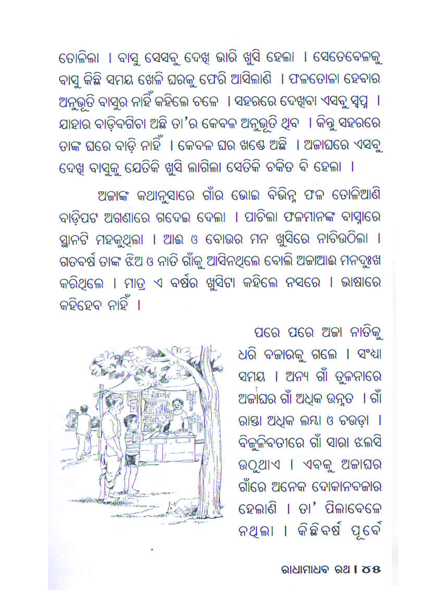
ତୋଳିଲା । ବାସୁ ସେସବୁ ଦେଖୁଁ ଭାରି ଖୁସି ହେଲା | ସେତେବେଳକୁ ବାସୁ କିଛି ସମୟ ଖେଳି ଘରକୁ ଫେରି ଆସିଲାଣି । ଫଳତୋଳା ହେବାର ଅନୁଭୂତି ବାସୁର ନାହିଁ କହିଲେ ଚଳେ | ସହରରେ ଦେଖୁବା ଏସବୁ ସ୍ଵପ୍ନ | ଯାହାର ବାଡ଼ିବଗିଚା ଅଛି ତା'ର କେବଳ ଅନୁଭୂତି ଥୁବ । କିନ୍ତୁ ସହରରେ ତାଙ୍କ ଘରେ ବାଡ଼ି ନାହିଁ । କେବଳ ଘର ଖଣ୍ଡେ ଅଛି । ଅଜାଘରେ ଏସବୁ ଦେଖ୍ ବାସୁକୁ ଯେତିକି ଖୁସି ଲାଗିଲା ସେତିକି ଚକିତ ବି ହେଲା | ଅଜାଙ୍କ କଥାନୁସାରେ ଗାଁର ଭୋଇ ବିଭିନ୍ନ ଫଳ ତୋଳିଆଣି ବାଡ଼ିପଟ ଅଗଣାରେ ଗଦେଇ ଦେଲା । ପାଚିଲା ଫଳମାନଙ୍କ ବାସ୍ନାରେ ସ୍ଥାନଟି ମହକୁଥିଲା । ଆଭ ଓ ବୋଉର ମନ ଖୁସିରେ ନାଚିଉଠିଲା | ଗତବର୍ଷ ତାଙ୍କ ଝିଅ ଓ ନାତି ଗାଁକୁ ଆସିନଥିଲେ ବୋଲି ଅଜାଆଭ ମନଦୁଃଖ କରିଥିଲେ । ମାତ୍ର ଏ ବର୍ଷର ଖୁସିଟା କହିଲେ ନସରେ । ଭାଷାରେ କହିହେବ ନାହିଁ । ପରେ ପରେ ଅଜା ନାତିକୁ ସମ 4 £ ® (‰ ସମୟ । ଅନ୍ୟ ଗାଁ ତୁଳନାରେ ଦା ମାନା ୮୦ ରାସ୍ତା ଅଧ୍ରକ ଲମ୍ବା ଓ ଚଉଡ଼ା | == ==] ଉଠୁଥାଏ | ଏବକୁ ଅଜାଘର ରାଧାମାଧବ ରଥ | ୪୫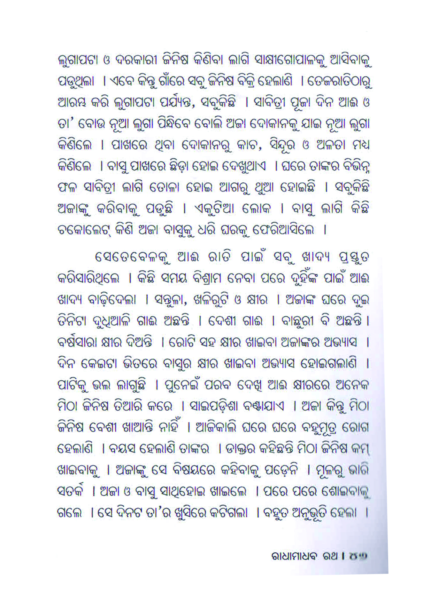
ଲୁଗାପଟା ଓ ଦରକାରୀ ଜିନିଷ କିଣିବା ଲାଗି ସାକ୍ଷୀଗୋପାଳକୁ ଆସିବାକୁ ପଡୁଥିଲା । ଏବେ କିନ୍ତୁ ଗାଁରେ ସବୁ ଜିନିଷ ବିକ୍ରି ହେଲାଣି | ତେଜରାତିଠାରୁ ଆରମ୍ଭ କରି ଲୁଗାପଟା ପର୍ଯ୍ୟନ୍ତ, ସବୁକିଛି । ସାବିତ୍ରୀ ପୂଜା ଦିନ ଆଭ ଓ ତା” ବୋଉ ନୂଆ ଲୁଗା ପିନ୍ଧିବେ ବୋଲି ଅଜା ଦୋକାନକୁ ଯାଇ ନୂଆ ଲୁଗା କିଣିଲେ | ପାଖରେ gel ଦୋକାନରୁ କାଚ, ସିନ୍ଦୂର ଓ ଅଳତା ମଧ୍ଯ କିଣିଲେ । ବାସୁ ପାଖରେ ଛିଡ଼ା ହୋଇ ଦେଖୁଥାଏ । ଘରେ ତାଙ୍କର ବିଭିନ୍ନ ଫଳ ସାବିତ୍ରୀ ଲାଗି ତୋଳା ହୋଇ ଆଗରୁ ଥୁଆ ହୋଇଛି । ସବୁକିଛି ଅଜାଙ୍କୁ କରିବାକୁ ପଡୁଛି । ଏକୁଟିଆ ଲୋକ । ବାସୁ ଲାଗି କିଛି ଚକୋଲେଟ୍ କିଣି ଅଜା ବାସୁକୁ ଧରି ଘରକୁ ଫେରିଆସିଲେ । ସେତେବେଳକୁ ଆଭ ରାତି ପାଇଁ ସବୁ ଖାଦ୍ୟ ପ୍ରସ୍ତୁତ କରିସାରିଥିଲେ । କିଛି ସମୟ ବିଶ୍ରାମ ନେବା ପରେ ଦୁହିଙ୍କ ପାଇଁ ଆଭ ଖାଦ୍ୟ ବାଢ଼ିଦେଲା । ସନ୍ତୁଳା, ଖଳିରୁଟି ଓ କ୍ଷୀର । ଅଜାଙ୍କ ଘରେ ଦୁଇ ତିନିଟା QED ଗାର ଅଛନ୍ତି | ଦେଶୀ ଗାଭ । ବାଛୁରୀ ବି ଅଛନ୍ତି | ବର୍ଷସାରା କ୍ଷୀର ଦିଅନ୍ତି । ରୋଟି ସହ କ୍ଷୀର ଖାଇବା ଅଜାଙ୍କର ଅଭ୍ୟାସ । ଦିନ କେଇଟା ଭିତରେ ବାସୁର କ୍ଷୀର ଖାଇବା ଅଭ୍ୟାସ ହୋଇଗଲାଣି । ପାଟିକୁ ଭଲ ଲାଗୁଛି | ପୁନେଇଁ ପରବ ଦେଖୁ ଆଭ କ୍ଷୀରରେ ଅନେକ ମିଠା ଜିନିଷ ତିଆରି କରେ । ସାଇପଡ଼ିଶା ବଣ୍ଟାଯାଏ । ଅଜା କିନ୍ତୁ ମିଠା ଜିନିଷ ବେଶୀ ଖାଆନ୍ତି ନାହିଁ । ଆଜିକାଲି ଘରେ ଘରେ ବହୁମୁତ୍ର ରୋଗ ହେଲାଣି । ବୟସ ହେଲାଣି ତାଙ୍କର । ଡାକ୍ତର କହିଛନ୍ତି ମିଠା ଜିନିଷ କମ୍ ଖାଇବାକୁ । ଅଜାଙ୍କୁ ସେ ବିଷୟରେ କହିବାକୁ ପଡ଼େନି । ମୂଳରୁ ଭାରି ସତର୍କ | ଅଜା ଓ ବାସୁ ସାଥ୍ବହୋଇ ଖାଇଲେ | ପରେ ପରେ ଶୋଇବାକୁ ଗଲେ । ସେ ଦିନଟ ତା'ର ଖୁସିରେ କଟିଗଲା । ବହୁତ ଅନୁଭୂତି ହେଲା |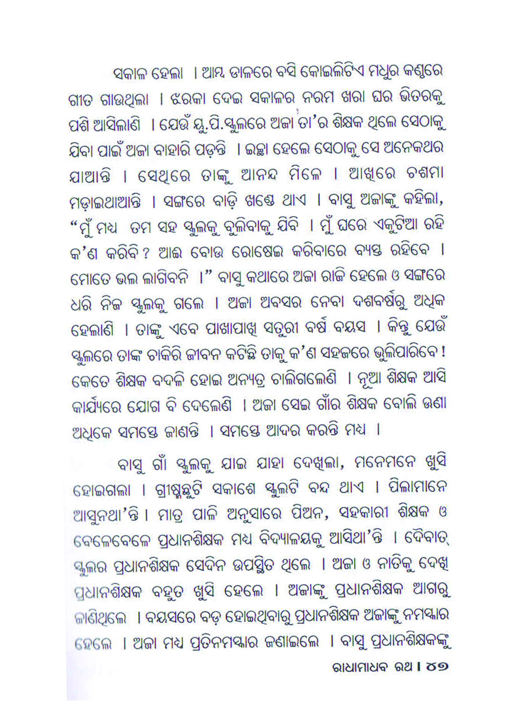
ସକାଳ ହେଲା । ଆମ୍ବ ଡାଳରେ ବସି କୋଇଲିଟିଏ ମଧୁର କଣ୍ଠରେ ଗୀତ ଗାଉଥିଲା । ଝରକା ଦେଇ ସକାଳର ନରମ ଖରା ଘର ଭିତରକୁ ପଶି ଆସିଲାଣି । ଯେଉଁ ୟୁ. ପି.ସ୍କୁଲରେ ଅଜା ତା'ର ଶିକ୍ଷକ ଥିଲେ ସେଠାକୁ ଯିବା ପାଇଁ ଅଜା ବାହାରି ପଡ଼ନ୍ତି । ଇଚ୍ଛା ହେଲେ ସେଠାକୁ ସେ ଅନେକଥର ଯାଆନ୍ତି | ସେଥୁରେ ତାଙ୍କୁ ଆନନ୍ଦ ମିଳେ | ଆଖରେ ଚଶମା ମଡ଼ାଇଥାଆନ୍ତି | ସଙ୍ଗରେ ବାଡ଼ି ଖଣ୍ଡେ ଥାଏ । ବାସୁ ARIE, କହିଲା, “ମୁଁ ମଧ୍ଯ ତମ ସହ ସ୍କୁଲକୁ ବୁଲିବାକୁ ଯିବି | ମୁଁ ଘରେ ଏକୁଟିଆ ରହି କ'ଣ କରିବି ? ଆଭ ବୋଉ ରୋଷେଇ କରିବାରେ ବ୍ୟସ୍ତ ରହିବେ | ମୋତେ ଭଲ ଲାଗିବନି ।” ବାସୁ କଥାରେ ଅଜା ରାଜି ହେଲେ ଓ ସଙ୍ଗରେ ଧରି ନିଜ ସ୍କୁଲକୁ ଗଲେ | ଅଜା ଅବସର ନେବା ଦଶବର୍ଷରୁ ଅଧ୍ଵକ ହେଲାଣି । ତାଙ୍କୁ ଏବେ ପାଖାପାଖ୍ ସତୁରୀ ବର୍ଷ ବୟସ । କିନ୍ତୁ ଯେଉଁ ସ୍କୁଲରେ ତାଙ୍କ ଚାକିରି ଜୀବନ କଟିଛି ତାକୁ କ'ଣ ସହଜରେ ଭୁଲିପାରିବେ ! କେତେ ଶିକ୍ଷକ ବଦଳି ହୋଇ ଅନ୍ୟତ୍ର ଚାଲିଗଲେଣି | ନୂଆ ଶିକ୍ଷକ ଆସି କାର୍ଯ୍ୟରେ ଯୋଗ ବି ଦେଲେଣି । ଅଜା ସେଇ ଗାଁର ଶିକ୍ଷକ ବୋଲି ଉଣା ଅଧୁକେ ସମସ୍ତେ ଜାଣନ୍ତି । ସମସ୍ତେ ଆଦର କରନ୍ତି ମଧ୍ଯ । ବାସୁ ଗାଁ ସ୍କୁଲକୁ ଯାଇ ଯାହା ଦେଖୂଲା, ମନେମନେ ଖୁସି ହୋଇଗଲା । ଗ୍ରୀଷ୍ମଛୁଟି ସକାଶେ ସ୍କୁଲଟି ବନ୍ଦ ଥାଏ । ପିଲାମାନେ ଆସୁନଥାଂ'ନ୍ତି। ମାତ୍ର ପାଳି ଅନୁସାରେ ପିଅନ, ସହକାରୀ ଶିକ୍ଷକ ଓ ବେଳେବେଳେ ପ୍ରଧାନଶିକ୍ଷକ ମଧ୍ଯ ବିଦ୍ୟାଳୟକୁ ଆସିଥା'ନ୍ତି 69916, ସ୍କୁଲର ପ୍ରଧାନଶିକ୍ଷକ ସେଦିନ ଉପସ୍ଥିତ ଥୁଲେ | ଅଜା ଓ ନାତିକୁ ଦେଖ୍ ପ୍ରଧାନଶିକ୍ଷକ ବହୁତ ଖୁସି ହେଲେ | ଅଳାଙ୍କୁ ପ୍ରଧାନଶିକ୍ଷକ ଆଗରୁ ଜାଣିଥିଲେ । ବୟସରେ ବଡ଼ ହୋଇଥିବାରୁ ପ୍ରଧାନଶିକ୍ଷକ ଅଜାଙ୍କୁ ନମସ୍କାର ହେଲେ । ଅଜା ମଧ୍ଯ ପ୍ରତିନମସ୍କାର ଜଣାଇଲେ । ବାସୁ ପ୍ରଧାନଶିକ୍ଷକଙ୍କୁ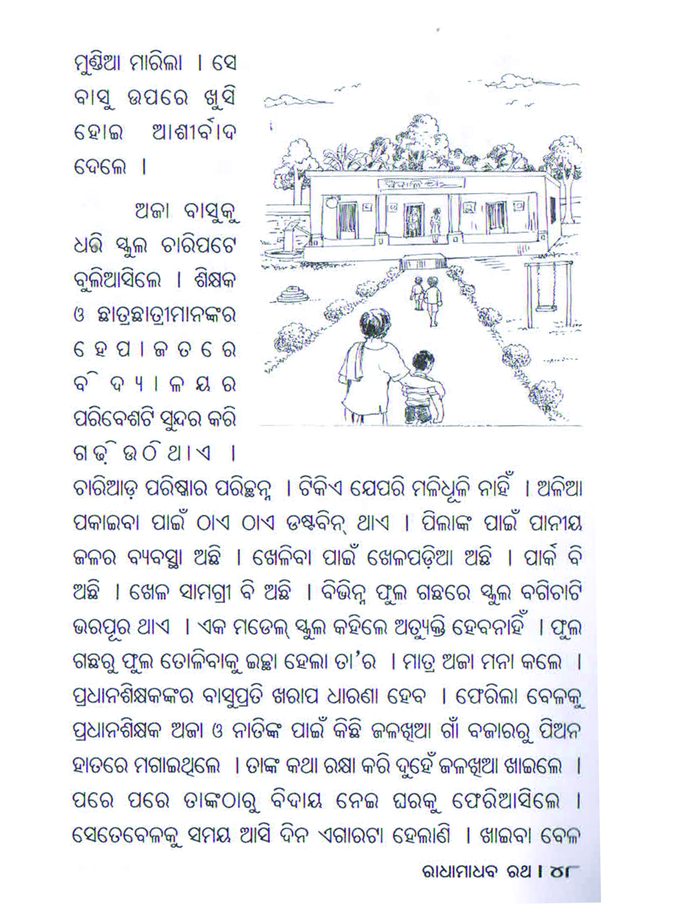
ମୁଣ୍ଡିଆ ମାରିଲା । ସେ କୁହ ବାସୁ ଉପରେ ଖୂସି ୦୦” ଜି ବୁଲିଆସିଲେ | ଶିକ୍ଷକ ୭୩ % ] ଚାରିଆଡ଼ ପରିଷ୍କାର ପରିଚ୍ଛନ୍ନ । ଟିକିଏ ଯେପରି ମଳିଧୁଳି ନାହି । ଅଳିଆ ପକାଇବା ପାଇଁ ଠାଏ ଠାଏ ଡଷ୍ଟବିନ୍ ଥାଏ । ପିଲାଙ୍କ ପାଇଁ ପାନୀୟ ଜଳର ବ୍ୟବସ୍ଥା ଅଛି । ଖେଳିବା ପାଇଁ ଖେଳପଡ଼ିଆ ଅଛି । ପାର୍କ ବି ଅଛି | ଖେଳ ସାମଗ୍ରୀ ବି ଅଛି । ବିଭିନ୍ନ ଫୁଲ ଗଛରେ ସ୍କୁଲ ବଗିଚାଟି ଭରପୁର ଥାଏ | ଏକ ମଡେଲ୍ ସ୍କୁଲ କହିଲେ ଅତ୍ୟୁକ୍ତି ହେବନାହି | ଫୁଲ ଗଛରୁ ଫୁଲ ତୋଳିବାକୁ ଇଚ୍ଛା ହେଲା ତା'ର । ମାତ୍ର ଅଜା ମନା କଲେ | ପ୍ରଧାନଶିକ୍ଷକଙ୍କର ବାସୁପ୍ରତି ଖରାପ ଧାରଣା ହେବ । ଫେରିଲା ବେଳକୁ ପ୍ରଧାନଶିକ୍ଷକ ଅଜା ଓ ନାତିଙ୍କ ପାଇଁ କିଛି FRR ଗାଁ ବଜାରରୁ ପିଅନ ହାତରେ ମଗାଇଥିଲେ । ତାଙ୍କ କଥା ରକ୍ଷା କରି ଦୁହେଁ ଜଳଖୂଆ ଖାଇଲେ | ପରେ ପରେ ତାଙ୍କଠାରୁ ବିଦାୟ ନେଇ ଘରକୁ ଫେରିଆସିଲେ । ସେତେବେଳକୁ ସମୟ ଆସି ଦିନ ଏଗାରଟା ହେଲାଣି । ଖାଇବା ବେଳ ରାଧାମାଧବ ରଥ । ୮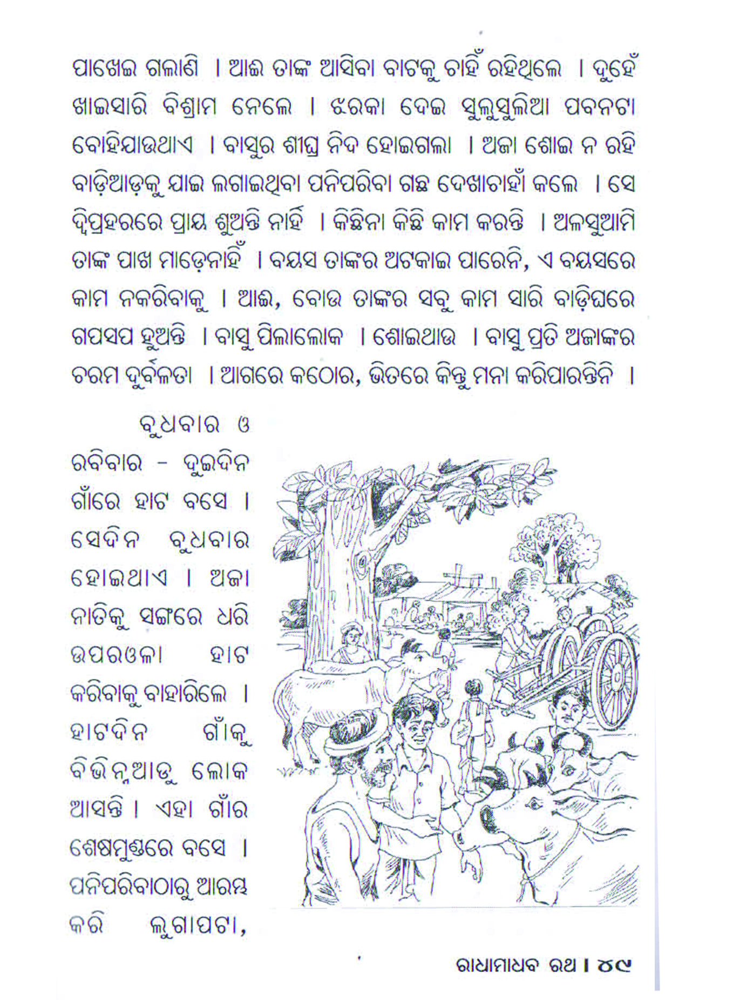
ପାଖେଇ ଗଲାଣି | ଆଭ ତାଙ୍କ ଆସିବା ବାଟକୁ ଚାହିଁ ରହିଥ୍ବଲେ । ଦୁହେଁ ଖାଇସାରି ବିଶ୍ରାମ ନେଲେ । ଝରକା ଦେଇ ସୁଲୁସୁଲିଆ ପବନଟା ବୋହିଯାଉଥାଏ । ବାସୁର ଶୀଘ୍ର ନିଦ ହୋଇଗଲା । ଅଜା ଶୋଇ ନ ରହି ବାଡ଼ିଆଡ଼କୁ ଯାଇ ଲଗାଇଥିବା ପନିପରିବା ଗଛ ଦେଖାଚାହାଁ କଲେ । ସେ ଦ୍ବିପ୍ରହରରେ ପ୍ରାୟ ଶୁଅନ୍ତି ନାହିଁ | କିଛିନା କିଛି କାମ କରନ୍ତି । ଅଳସୁଆମି ତାଙ୍କ ପାଖ ମାଡ଼େନାହିଁ । ବୟସ ତାଙ୍କର ଅଟକାଇ ପାରେନି, ଏ ବୟସରେ କାମ ନକରିବାକୁ | AUR, ବୋଉ ତାଙ୍କର ସବୁ କାମ ସାରି ବାଡ଼ିଘରେ ଗପସପ ହୁଅନ୍ତି । ବାସୁ ପିଲାଲୋକ | ଶୋଇଥାଉ । | IY 96 ଅଜାଙ୍କର ଚରମ ଦୁର୍ବଳତା । ଆଗରେ କଠୋର, ଭିତରେ କିନ୍ତୁ ମନା କରିପାରନ୍ତିନି ।
ବୂଧବାର ଓ
କରି ଲୂଗାପଟା,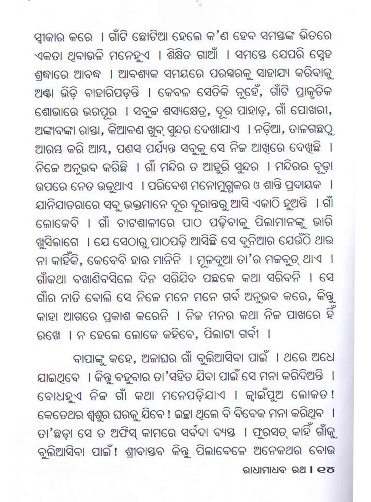
ସ୍ଵୀକାର କରେ | ଗାଁଟି ଛୋଟିଆ ହେଲେ କ'ଣ ହେବ ସମସ୍ତଙ୍କ ଭିତରେ ଏକତା ଥିବାଭଳି ମନେହୁଏ । ଶିକ୍ଷିତ ଗାଆଁ | ସମସ୍ତେ ଯେପରି ସ୍ନେହ ଶ୍ରନ୍ଧାରେ ଆବଦ୍ଧ । ଆବଶ୍ୟକ ସମୟରେ ପରସ୍ପରକୁ ସାହାଯ୍ୟ କରିବାକୁ ଅଣ୍ଟା ଭିଡ଼ି ବାହାରିପଡ଼ନ୍ତି । କେବଳ ସେତିକି ନୁହେଁ, ଗାଁଟି ପ୍ରାକୃତିକ ଶୋଭାରେ ଭରପୂର । ସବୁଜ ଶସ୍ଯକ୍ଷେତ୍ର, ଦୂର ପାହାଡ଼, ଗାଁ ପୋଖରୀ, ଅଙ୍କାବଙ୍କା ରାସ୍ତା, କିଆବଣ ଖୁବ୍ ସୁନ୍ଦର ଦେଖାଯାଏ । ନଡ଼ିଆ, ତାଳଗଛଠୁ ଆରମ୍ଭ କରି ଆମ୍ବ, ପଣସ ପର୍ଯ୍ୟନ୍ତ ସବୁକୁ ସେ ନିଜ ଆଖରେ ଦେଖିଛି | ନିଜେ ଅନୁଭବ କରିଛି । ଗାଁ ମନ୍ଦିର ତ ଆହୁରି ସୁନ୍ଦର । ମନ୍ଦିରର ଚୂଡ଼ା ଉପରେ ନେତ ଉଡୁଥାଏ । ପରିବେଶ ମନୋମୁଗ୍ଧକର ଓ ଶାନ୍ତି ପ୍ରଦାୟକ | ଯାନିଯାତରାରେ ସବୁ ଭକ୍ତମାନେ ଦୂର ଦୂରାନ୍ତରୁ ଆସି ଏକାଠି ହୁଅନ୍ତି । ଗାଁ ଲୋକେବି । ଗାଁ ଚାଟଶାଳୀରେ ପାଠ ପଢ଼ିବାକୁ ପିଲାମାନଙ୍କୁ ଭାରି ଖୁସିଲାଗେ । ଯେ ସେଠାରୁ ପାଠପଢ଼ି ଆସିଛି ସେ ଦୁନିଆର ଯେଉଁଠି ଥାଉ ନା କାହିଁକି, କେବେବି ହାର ମାନିନି । ମୂଳଦୁଆ ତା'ର ମଜବୁତ୍ ଥାଏ । ଗାଁକଥା ବଖାଣିବସିଲେ ଦିନ ସରିଯିବ ପଛକେ କଥା ସରିବନି । ସେ ଗାଁର ନାତି ବୋଲି ସେ ନିଜେ ମନେ ମନେ ଗର୍ବ ଅନୁଭବ କରେ, କିନ୍ତୁ କାହା ଆଗରେ ପ୍ରକାଶ କରେନି । ନିଜ ମନର କଥା ନିଜ ପାଖରେ ହିଁ ରଖେ | ନ ହେଲେ ଲୋକେ କହିବେ, ପିଲାଟା ଗର୍ବୀ | ବାପାଙ୍କୁ କହେ, ଅଜାଘର ଗାଁ ବୁଲିଆସିବା ପାଇଁ | ଥରେ ଅଧେ ଯାଇଥିବେ । କିନ୍ତୁ ବହୁବାର ତା'ସହିତ ଯିବା ପାଇଁ ସେ ମନା କରିଦିଅନ୍ତି | ବୋଧହୁଏ ନିଜ ଗାଁ କଥା ମନେପଡ଼ିଯାଏ । ଜ୍ଵାଇଁପୁଅ ଲୋକତ ! କେତେଥର ଶ୍ଵଶୁର ଘରକୁ ଯିବେ ! ଇଚ୍ଛା ଥିଲେ ବି ବିବେକ ମନା କରିଥିବ | ତା”ଛଡ଼ା ସେ ତ ଅଫିସ୍ କାମରେ ସର୍ବଦା ବ୍ୟସ୍ତ | ଫୁରସତ୍ କାହିଁ ଗାଁକୁ ବୁଲିଆସିବା ପାଇଁ! ଶ୍ରୀବାସ୍ତବ କିନ୍ତୁ ପିଲାବେଳେ ଅନେକଥର ବୋଉ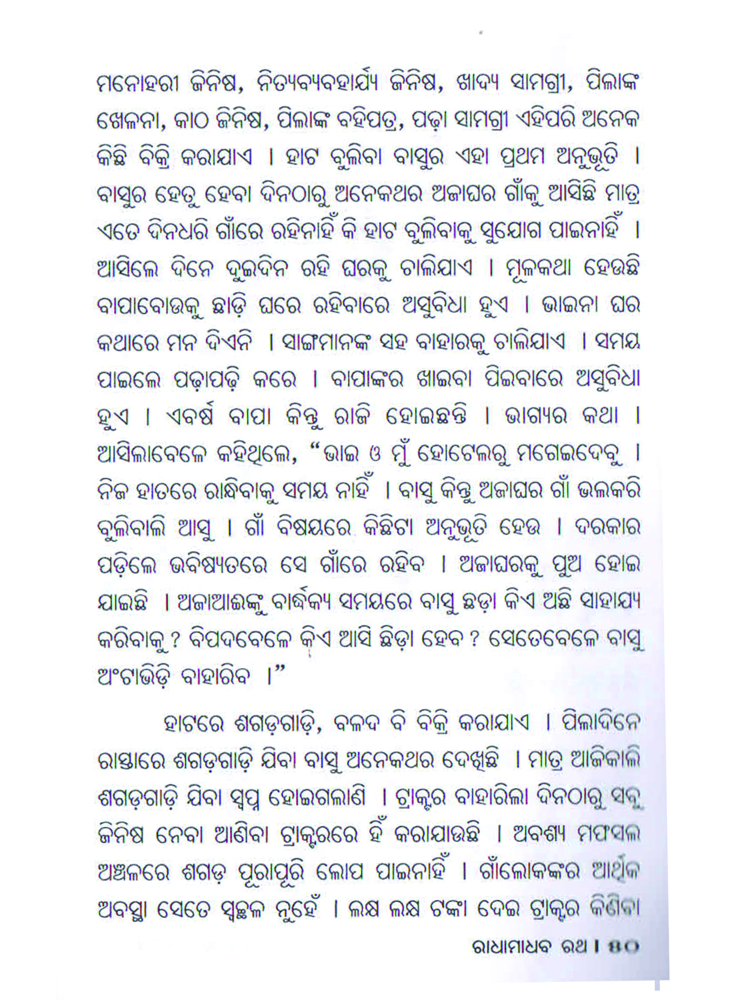
ମନୋହରୀ ଜିନିଷ, ନିତ୍ୟବ୍ୟବହାର୍ଯ୍ୟ ଜିନିଷ, ଖାଦ୍ୟ ସାମଗ୍ରୀ, ପିଲାଙ୍କ ଖେଳନା, କାଠ ଜିନିଷ, ପିଲାଙ୍କ ବହିପତ୍ର, ପଢ଼ା ସାମଗ୍ରୀ ଏହିପରି ଅନେକ କିଛି ବିକ୍ରି କରାଯାଏ । ହାଟ ବୁଲିବା ବାସୁର ଏହା ପ୍ରଥମ ଅନୁଭୂତି । ବାସୁର ହେତୁ ହେବା ଦିନଠାରୁ ଅନେକଥର ଅଜାଘର ଗାଁକୁ ଆସିଛି ମାତ୍ର ଏତେ ଦିନଧରି ଗାଁରେ ରହିନାହିଁ କି ହାଟ ବୁଲିବାକୁ ସୁଯୋଗ ପାଇନାହିଁ । ଆସିଲେ ଦିନେ ଦୁଇଦିନ ରହି ଘରକୁ ଚାଲିଯାଏ । ମୂଳକଥା ହେଉଛି ବାପାବୋଉକୁ ଛାଡ଼ି ଘରେ ରହିବାରେ ଅସୁବିଧା ହୁଏ । ଭାଇନା ଘର କଥାରେ ମନ ଦିଏନି । ସାଙ୍ଗମାନଙ୍କ ସହ ବାହାରକୁ ଚାଲିଯାଏ । ସମୟ ପାଇଲେ ପଢ଼ାପଢ଼ି କରେ । ବାପାଙ୍କର ଖାଇବା ପିଇବାରେ ଅସୁବିଧା ହୁଏ । ଏବର୍ଷ ବାପା କିନ୍ତୁ ରାଜି ହୋଇଛନ୍ତି । ଭାଗ୍ୟର କଥା । ଆସିଲାବେଳେ କହିଥିଲେ, “ ଭାଇ ଓ ମୁଁ ହୋଟେଲରୁ ମଗେଇଦେବୁ | ନିଜ ହାତରେ ରାନ୍ଧିବାକୁ ସମୟ ନାହିଁ । ବାସୁ କିନ୍ତୁ ଅଜାଘର ଗାଁ ଭଲକରି ବୁଲିବାଲି ଆସୁ । ଗାଁ ବିଷୟରେ କିଛିଟା ଅନୁଭୂତି ହେଉ । ଦରକାର ପଡ଼ିଲେ ଭବିଷ୍ୟତରେ ସେ ଗାଁରେ ରହିବ । ଅଜାଘରକୁ ପୁଅ ହୋଇ ଯାଇଛି | ଅଜାଆଇଙ୍କୁ ବାର୍ଵ୍ରକ୍ୟ ସମୟରେ ବାସୁ ଛଡ଼ା କିଏ ଅଛି ସାହାଯ୍ୟ କରିବାକୁ ? ବିପଦବେଳେ କିଏ ଆସି ଛିଡ଼ା ହେବ ? ସେତେବେଳେ ବାସୁ
ଅଂଟାଭିଡ଼ି ବାହାରିବ |” ହାଟରେ ଶଗଡ଼ଗାଡ଼ି, ବଳଦ ବି ବିକ୍ରି କରାଯାଏ । ପିଲାଦିନେ ରାସ୍ତାରେ ଶଗଡ଼ଗାଡ଼ି ଯିବା ବାସୁ ଅନେକଥର ଦେଖୁଛି । ମାତ୍ର ଆଜିକାଲି ଶଗଡ଼ଗାଡ଼ି ଯିବା ସ୍ଵପ୍ନ ହୋଇଗଲାଣି । ଟ୍ରାକ୍ଟର ବାହାରିଲା ଦିନଠାରୁ ସବୁ ଜିନିଷ ନେବା ଆଣିବା ଟ୍ରାକ୍ଟରରେ ହିଁ କରାଯାଉଛି । ଅବଶ୍ୟ ମଫସଲ ଅଞ୍ଚଳରେ ଶଗଡ଼ ପୂରାପୂରି ଲୋପ ପାଇନାହିଁ | ଗାଁଲୋକଙ୍କର ଆର୍ଥକ ଅବସ୍ଥା ସେତେ ସ୍ଵଚ୍ଛଳ ନୁହେଁ | ଲକ୍ଷ ଲକ୍ଷ ଟଙ୍କା ଦେଇ ଟ୍ରାକ୍ଟର କିଣିବା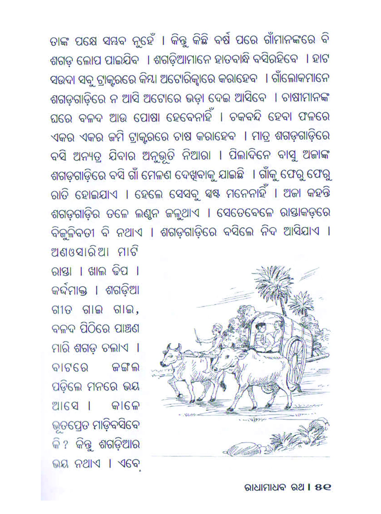
ତାଙ୍କ ପକ୍ଷେ ସମ୍ଭବ ନୁହେଁ । କିନ୍ତୁ କିଛି ବର୍ଷ ପରେ ଗାଁମାନଙ୍କରେ ବି ଶଗଡ଼ ଲୋପ ପାଇଯିବ । ଶଗଡ଼ିଆମାନେ ହାତବାନ୍ଧି ବସିରହିବେ । ହାଟ ସଉଦା ସବୁ ଟ୍ରାକ୍ଟରରେ କିମ୍ବା ଅଟୋରିକ୍କାରେ କରାହେବ | ଗାଁଲୋକମାନେ ଶଗଡ଼ଗାଡ଼ିରେ ନ ଆସି ଅଟୋରେ ଭଡ଼ା ଦେଇ ଆସିବେ । ଚାଷୀମାନଙ୍କ ଘରେ ବଳଦ ଆଉ ପୋଷା ହେବେନାହିଁ । ଚକବନ୍ଦି ହେବା ଫଳରେ ଏକର ଏକର ଜମି ଟ୍ରାକ୍ଟରରେ ଚାଷ କରାହେବ । ମାତ୍ର ଶଗଡ଼ଗାଡ଼ିରେ ବସି ଅନ୍ୟତ୍ର ଯିବାର ଅନୁଭୂତି ନିଆରା । ପିଲାଦିନେ ବାସୁ ଅଜାଙ୍କ ଶଗଡ଼ଗାଡ଼ିରେ ବସି ଗାଁ ମେଳଣ ଦେଖବାକୁ ଯାଇଛି | ଗାଁକୁ ଫେରୁ ଫେରୁ ରାତି ହୋଇଯାଏ । ହେଲେ ସେସବୁ ସ୍ପଷ୍ଟ ମନେନାହିଁ । ଅଜା କହନ୍ତି ଶଗଡ଼ଗାଡ଼ିର ତଳେ ଲଣ୍ଠନ ଜଳୁଥାଏ । ସେତେବେଳେ ରାସ୍ତାକଡ଼ରେ ବିଜୁଳିବତୀ ବି ନଥାଏ । ଶଗଡ଼ଗାଡ଼ିରେ ବସିଲେ ନିଦ ଆସିଯାଏ । ଅଣଓସାରିଆ ମାଟି ରାସ୍ତା । ଖାଲ ଢିପ | £ 5 ଆସେ । କାଳେ == = 4 9 = ଭୟ ନଥାଏ | ଏବେ
ରାଧାମାଧବ ରଥ | 8€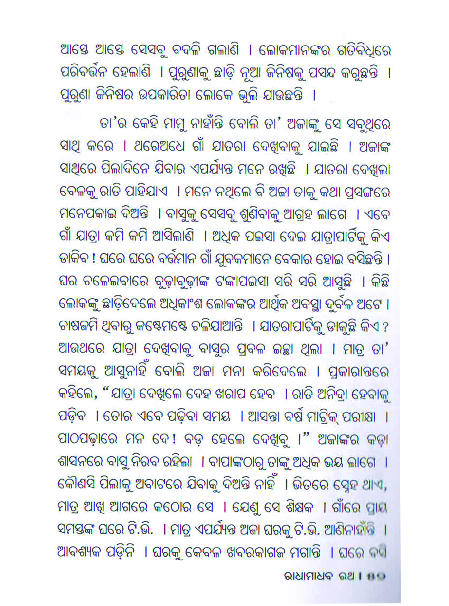
ଆସ୍ତେ ଆସ୍ତେ ସେସବୁ ବଦଳି ଗଲାଣି | ଲୋକମାନଙ୍କର ଗତିବିଧ୍ଵରେ ପରିବର୍ତନ ହେଲାଣି । ପୁରୁଣାକୁ ଛାଡ଼ି ନୂଆ ଜିନିଷକୁ ପସନ୍ଦ କରୁଛନ୍ତି । ପୁରୁଣା ଜିନିଷର ଉପକାରିତା ଲୋକେ ଭୁଲି ଯାଉଛନ୍ତି । Ag କରେ | ଥରେଅଧେ ଗାଁ ଯାତରା ଦେଖୁବାକୁ ଯାଇଛି | ଅଜାଙ୍କ ବେଳକୁ ରାତି ପାହିଯାଏ | ମନେ ନଥିଲେ ବି ଅଜା ତାକୁ କଥା ପ୍ରସଙ୍ଗରେ ମନେପକାଇ ଦିଅନ୍ତି । ବାସୁକୁ ସେସବୁ ଶୁଣିବାକୁ ଆଗ୍ରହ ଲାଗେ । ଏବେ ଗାଁ ଯାତ୍ରା କମି କମି ଆସିଲାଣି | ଅଧକ ପଇସା ଦେଇ ଯାତ୍ରାପାର୍ଟିକୁ କିଏ ଡାକିବ ! ଘରେ ଘରେ ବର୍ତମାନ ଗାଁ ଯୁବକମାନେ ବେକାର ହୋଇ ବସିଛନ୍ତି । ଘର ଚଳେଇବାରେ ବୁଢ଼ାବୁଢ଼ୀଙ୍କ ଟଙ୍କାପଇସା ସରି ସରି ଆସୁଛି । କିଛି ଲୋକଙ୍କୁ ଛାଡ଼ିଦେଲେ ଅଧରକାଂଶ ଲୋକଙ୍କର ଆର୍ଥ୍ରକ ଅବସ୍ଥା ଦୁର୍ବଳ ଅଟେ | ଚାଷଜମି ଥୁବାରୁ କଷ୍ଟେମଷ୍ଟେ ଚଳିଯାଆନ୍ତି | ଯାତରାପାର୍ଟିକୁ ଡାକୁଛି କିଏ ? ଆଉଥରେ ଯାତ୍ରା ଦେଖବାକୁ ବାସୁର ପ୍ରବଳ ଇଚ୍ଛା ଥିଲା । ମାତ୍ର ତା” ସମୟକୁ ଆସୁନାହିଁ ବୋଲି ଅଜା ମନା କରିଦେଲେ । ପ୍ରକାରାନ୍ତରେ ପଡ଼ିବ । ତୋର ଏବେ ପଢ଼ିବା ସମୟ । ଆସନ୍ତା ବର୍ଷ ମାଟ୍ରିକ୍ ପରୀକ୍ଷା । ପାଠପଢ଼ାରେ ମନ ଦେ! ବଡ଼ ହେଲେ ଦେଖିବୁ |” ଅଜାଙ୍କର କଡ଼ା କୌଣସି ପିଲାକୁ ଅବାଟରେ ଯିବାକୁ ଦିଅନ୍ତି ନାହିଁ । ଭିତରେ ସ୍ଵେହ ଥାଏ, ମାତ୍ର ଆଖ ଆଗରେ କଠୋର ସେ । ଯେଣୁ ସେ ଶିକ୍ଷକ | ଗାଁରେ ପ୍ରା ସମସ୍ତଙ୍କ ଘରେ ଟି.ଭି. | ମାତ୍ର ଏପର୍ଯ୍ୟନ୍ତ ଅଜା ଘରକୁ ଟି.ଭି. ଆଣିନାହାଁଜି | ଆବଶ୍ୟକ ପଡ଼ିନି । ଘରକୁ କେବଳ ଖବରକାଗଜ ମଗାନ୍ତି | ଘରେ GU ରାଧାମାଧବ ରଥ । ।।»›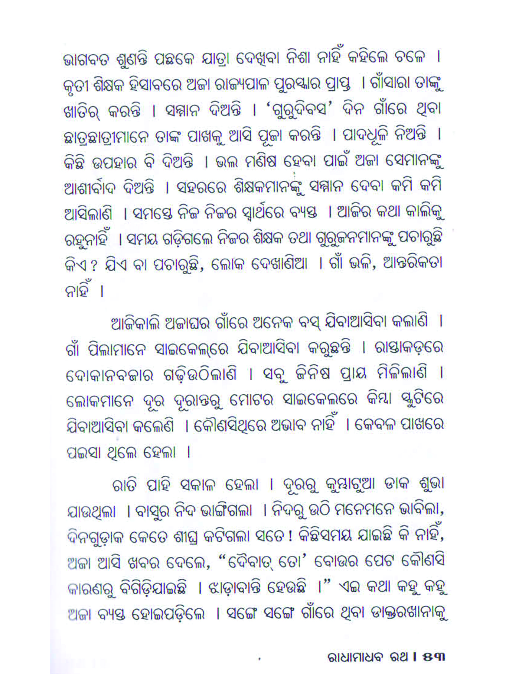
ଭାଗବତ ଶୁଣନ୍ତି ପଛକେ ଯାତ୍ରା ଦେଖୁଁବା ନିଶା ନାହିଁ କହିଲେ ଚଳେ । କୃତୀ ଶିକ୍ଷକ ହିସାବରେ ଅଜା ରାଜ୍ୟପାଳ ପୁରସ୍କାର ପ୍ରାପ୍ତ | ଗାଁସାରା ତାଙ୍କୁ ଖାତିର୍ କରନ୍ତି | ସମ୍ମାନ ଦିଅନ୍ତି । “ଗୁରୁଦିବସ” ଦିନ ଗାଁରେ ଥବା ଛାତ୍ରଛାତ୍ରୀମାନେ ତାଙ୍କ ପାଖକୁ ଆସି ପୂଜା କରନ୍ତି । ପାଦଧୂଳି ନିଅନ୍ତି । କିଛି ଉପହାର ବି ଦିଅନ୍ତି । ଭଲ ମଣିଷ ହେବା ପାଇଁ ଅଜା ସେମାନଙ୍କୁ ଆଶୀର୍ବାଦ ଦିଅନ୍ତି । ସହରରେ ଶିକ୍ଷକମାନଙ୍କୁ ସମ୍ମାନ ଦେବା କମି କମି ଆସିଲାଣି । ସମସ୍ତେ ନିଜ ନିଜର ସ୍ଵାର୍ଥରେ ବ୍ୟସ୍ତ । ଆଜିର କଥା କାଲିକୁ ରହୁନାହିଁ । ସମୟ ଗଡ଼ିଗଲେ ନିଜର ଶିକ୍ଷକ ତଥା ଗୁରୁଜନମାନଙ୍କୁ ପଚାରୁଛି କିଏ ? ଯିଏ ବା ପଚାରୁଛି, ଲୋକ ଦେଖାଣିଆ । ଗାଁ ଭଳି, ଆନ୍ତରିକତା
ଆଜିକାଲି ଅଜାଘର ଗାଁରେ ଅନେକ ବସ୍ ଯିବାଆସିବା କଲାଣି । ଗାଁ ପିଲାମାନେ ସାଇକେଲ୍ରେ ଯିବାଆସିବା କରୁଛନ୍ତି । ରାସ୍ତାକଡ଼ରେ ଦୋକାନବଜାର ଗଢ଼ିଉଠିଲାଣି । ସବୁ ଜିନିଷ ପ୍ରାୟ ମିଳିଲାଣି । ଲୋକମାନେ ଦୂର ଦୂରାନ୍ତରୁ ମୋଟର ସାଇକେଲରେ କିମ୍ବା ସ୍କୁଟିରେ ଯିବାଆସିବା କଲେଣି | କୌଣସିଥ୍ରେ ଅଭାବ ନାହିଁ । କେବଳ ପାଖରେ ପଇସା ଥିଲେ ହେଲା ।
ରାତି ପାହି ସକାଳ ହେଲା । ଦୂରରୁ କୁମ୍ଭାଟୁଆ ଡାକ ଶୁଭା ଯାଉଥିଲା । ବାସୁର ନିଦ ଭାଙ୍ଗିଗଲା । ନିଦରୁ ଉଠି ମନେମନେ ଭାବିଲା, ଦିନଗୁଡ଼ାକ କେତେ ଶୀଘ୍ର କଟିଗଲା ସତେ ! କିଛିସମୟ ଯାଇଛି କି ନାହିଁ, ଅଜା ଆସି ଖବର ଦେଲେ, “ ଦୈବାତ୍ ତୋଂ ବୋଉର ପେଟ କୌଣସି କାରଣରୁ ବିଗିଡ଼ିଯାଇଛି | ଝାଡ଼ାବାନ୍ତି ହେଉଛି । Ya କଥା କହୁ କହୁ ଅଜା ବ୍ୟସ୍ତ ହୋଇପଡ଼ିଲେ । ସଙ୍ଗେ ସଙ୍ଗେ ଗାଁରେ ଥବା ଡାକ୍ତରଖାନାକୁ
` ରାଧାମାଧବ ରଥ । ୫୩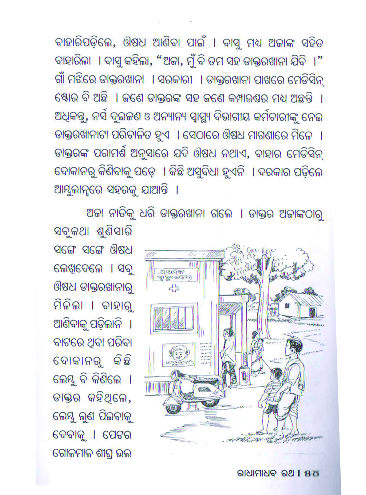
ବାହାରିପଡ଼ିଲେ, ୩ଷଧ ଆଣିବା ପାଇଁ । ବାସୁ ମଧ୍ଯ ଅଜାଙ୍କ ସହିତ ବାହାରିଲା । ବାସୁ କହିଲା, “ ଅଜା, ମୁଁ ବି ତମ ସହ ଡାକରଖାନା ଯିବି |” ଗାଁ ମଝିରେ ଡାକ୍ତରଖାନା । ସରକାରୀ । ଡାକ୍ତରଖାନା ପାଖରେ ମେଡିସିନ୍ ଷ୍ଟୋର ବି ଅଛି | ଜଣେ ଡାକ୍ତରଙ୍କ ସହ ଜଣେ କମ୍ପାଉଣ୍ଡର ମଧ୍ଯ ଅଛନ୍ତି | ଅଧ୍ଵକନ୍ତୁ, ନର୍ସ ଦୁଇଜଣ ଓ ଅନ୍ୟାନ୍ୟ ସ୍ଵାସ୍ଥ୍ୟ ବିଭାଗୀୟ କର୍ମଚାରୀଙ୍କୁ ନେଇ ଡାକ୍ତରଖାନାଟା ପରିଚାଳିତ ହୁଏ | ସେଠାରେ AR ମାଗଣାରେ ମିଳେ | ଡାକ୍ତରଙ୍କ ପରାମର୍ଶ ଅନୁସାରେ ଯଦି AS ନଥାଏ, ବାହାର ମେଡିସିନ୍ ଦୋକାନରୁ କିଣିବାକୁ ପଡ଼େ । କିଛି ଅସୁବିଧା ହୁଏନି । ଦରକାର ପଡ଼ିଲେ
ଅଜା ନାତିକୁ ଧରି ଡାକ୍ତରଖାନା ଗଲେ । ଡାକ୍ତର ଅଜାଙ୍କଠାରୁ ସବୁକଥା ଶୁଣିସାରି ମିଳିଲା | ବାହାରୁ =] ।। ଆ ଲା
ଦେବାକୁ | ପେଟର ୪ କ୦୨୦୪୬୭୭୨୬୦ ଗୋଳମାଳ ଶୀଘ୍ର ଭଲ | /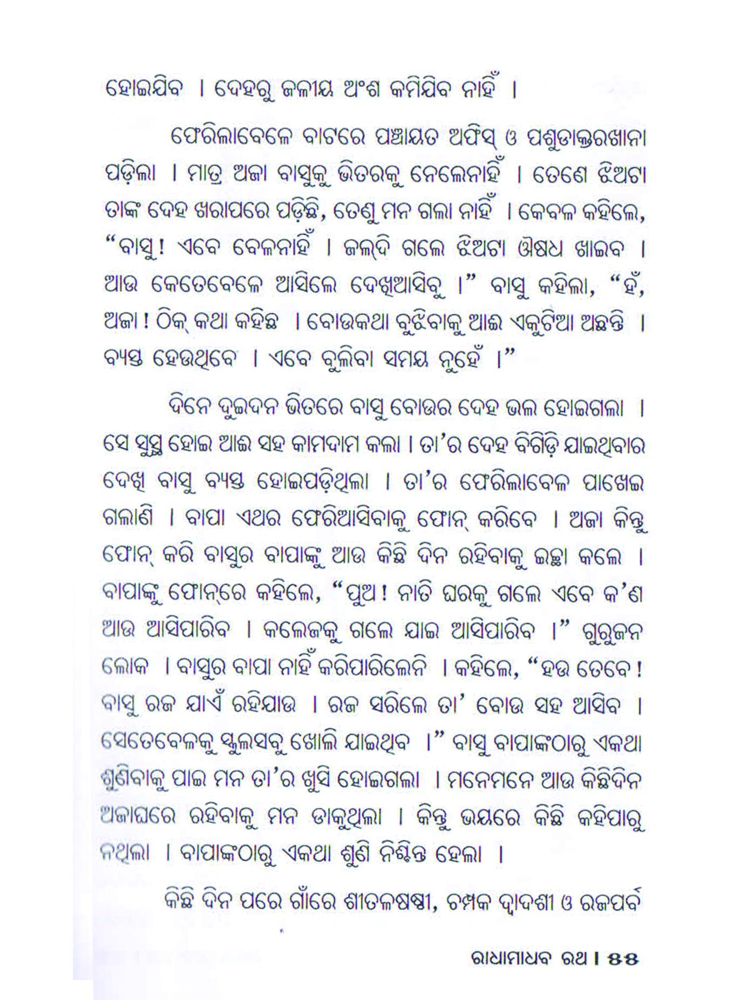
ହୋଇଯିବ । ଦେହରୁ ଜଳୀୟ ଅଂଶ କମିଯିବ ନାହିଁ । ଫେରିଲାବେଳେ ବାଟରେ ପଞ୍ଚାୟତ ଅଫିସ୍ ଓ ପଶୁଡାକ୍ତରଖାନା ପଡ଼ିଲା । ମାତ୍ର ଅଜା ବାସୁକୁ ଭିତରକୁ ନେଲେନାହିଁ । ତେଣେ ଝିଅଟା ତାଙ୍କ ଦେହ ଖରାପରେ ପଡ଼ିଛି, ତେଣୁ ମନ ଗଲା ନାହିଁ | କେବଳ କହିଲେ, “ବାସୁ! ଏବେ ବେଳନାହିଁ | ଜଲ୍ଦି ଗଲେ ଝିଅଟା As ଖାଇବ | ଆଉ କେତେବେଳେ ଆସିଲେ ଦେଖୁଁଥଆସିବୁ ।” ବାସୁ କହିଲା, “ ହଁ, ଅଜା ! ଠିକ୍ କଥା କହିଛ | ବୋଉକଥା ବୁଝିବାକୁ ଆଭ ଏକୁଟିଆ 28d | ବ୍ୟସ୍ତ ହେଉଥୁବେ । ଏବେ ବୁଲିବା ସମୟ ନୁହେଁ ।” ଦିନେ ଦୁଇଦନ ଭିତରେ ବାସୁ ବୋଉର ଦେହ ଭଲ ହୋଇଗଲା । ଦେଖ ବାସୁ ବ୍ଯସ୍ତ ହୋଇପଡ଼ିଥିଲା । ତା'ର ଫେରିଲାବେଳ ପାଖେଇ ଗଲାଣି । ବାପା ଏଥର ଫେରିଆସିବାକୁ ଫୋନ୍ କରିବେ । ଅଜା କିନ୍ତୁ ଫୋନ୍ କରି ବାସୁର ବାପାଙ୍କୁ ଆଉ କିଛି ଦିନ ରହିବାକୁ ଇଚ୍ଛା କଲେ | ବାପାଙ୍କୁ ଫୋନ୍ରେ କହିଲେ, “ ପୁଅ ! ନାତି ଘରକୁ ଗଲେ ଏବେ କ'ଣ ଆଉ ଆସିପାରିବ । କଲେଜକୁ ଗଲେ ଯାଇ ଆସିପାରିବ ।” ଗୁରୁଜନ ଲୋକ । ବାସୁର ବାପା ନାହିଁ କରିପାରିଲେନି | କହିଲେ, “ ହଉ ତେବେ ! ବାସୁ ରଜ ଯାଏଁ ରହିଯାଉ | ରଜ ସରିଲେ ତା' ବୋଉ ସହ ଆସିବ | ସେତେବେଳକୁ ସ୍କୁଲସବୁ ଖୋଲି ଯାଇଥିବ |” ବାସୁ ବାପାଙ୍କଠାରୁ ଏକଥା ଶୁଣିବାକୁ ପାଇ ମନ ତା '”ର ଖୁସି ହୋଇଗଲା | ମନେମନେ ଆଉ କିଛିଦିନ ଅଅଜାଘରେ ରହିବାକୁ ମନ ଡାକୁଥିଲା । କିନ୍ତୁ ଭୟରେ କିଛି କହିପାରୁ ନଥିଲା । ବାପାଙ୍କଠାରୁ ଏକଥା ଶୁଣି ନିଶ୍ଚିନ୍ତ ହେଲା । କିଛି ଦିନ ପରେ ଗାଁରେ ଶୀତଳଷଷ୍ଠୀ, ଚମ୍ପକ ଦ୍ଵାଦଶୀ ଓ ରଜପର୍ବ ରାଧାମାଧବ ରଥ | 88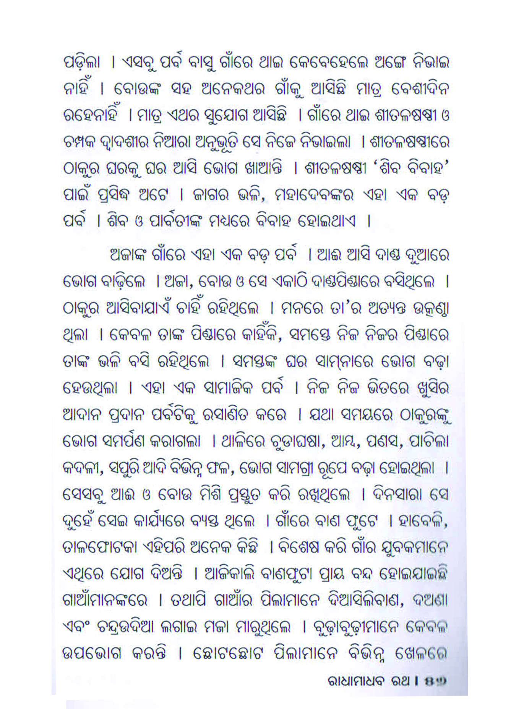
ପଡ଼ିଲା । ଏସବୁ ପର୍ବ ବାସୁ ଗାଁରେ ଥାଇ କେବେହେଲେ ଅଙ୍ଗେ ନିଭାଇ ନାହିଁ । ବୋଉଙ୍କ ସହ ଅନେକଥର ଗାଁକୁ ଆସିଛି ମାତ୍ର ବେଶୀଦିନ ରହେନାହିଁ । ମାତ୍ର ଏଥର ସୁଯୋଗ ଆସିଛି । ଗାଁରେ ଥାଇ ଶୀତଳଷଷ୍ଠୀ ଓ ଚମ୍ପକ ଦ୍ଵାଦଶୀର ନିଆରା ଅନୁଭୂତି ସେ ନିଜେ ନିଭାଇଲା । ଶୀତଳଷଷ୍ଠୀରେ ଠାକୁର ଘରକୁ ଘର ଆସି ଭୋଗ ଖାଆନ୍ତି | ଶୀତଳଷଷ୍ଠୀ ‘do ବିବାହ” ପାଇଁ ପ୍ରସିଦ୍ଧ ଅଟେ | ଜାଗର ଭଳି, ମହାଦେବଙ୍କର ଏହା ଏକ ବଡ଼ ପର୍ବ । ଶିବ ଓ ପାର୍ବତୀଙ୍କ ମଧ୍ଯରେ ବିବାହ ହୋଇଥାଏ । ଅଜାଙ୍କ ଗାଁରେ ଏହା ଏକ ବଡ଼ ପର୍ବ | ଆଠ ଆସି ଦାଣ୍ଡ ଦୁଆରେ ଭୋଗ ବାଢ଼ିଲେ | ଅଜା, ବୋଉ ଓ ସେ ଏକାଠି ଦାଣ୍ଡପିଣ୍ଡାରେ ବସିଥିଲେ | ଠାକୁର ଆସିବାଯାଏଁ ଚାହିଁ ରହିଥିଲେ | ମନରେ ତା'ର ଅତ୍ୟନ୍ତ ଉତ୍କଣ୍ଠା ଥଲା । କେବଳ ତାଙ୍କ ପିଣ୍ଡାରେ କାହିଁକି, ସମସ୍ତେ ନିଜ ନିଜର ପିଣ୍ଡାରେ ତାଙ୍କ ଭଳି ବସି ରହିଥିଲେ । ସମସ୍ତଙ୍କ ଘର ସାମ୍ନାରେ ଭୋଗ ବଢ଼ା ହେଉଥିଲା | ଏହା ଏକ ସାମାଜିକ ପର୍ବ | ନିଜ ନିଜ ଭିତରେ ଖୁସିର ଆଦାନ ପ୍ରଦାନ ପର୍ବଟିକୁ ରସାଣିତ କରେ । ଯଥା ସମୟରେ ଠାକୁରଙ୍କୁ ଭୋଗ ସମର୍ପଣ କରାଗଲା । ଥାଳିରେ ଚୁଡାଘଷା, ଆମ୍ବ, ପଣସ, ପାଚିଲା କଦଳୀ, ସପୁରି ଆଦି ବିଭିନ୍ନ ଫଳ, ଭୋଗ ସାମଗ୍ରୀ ରୂପେ ବଢ଼ା ହୋଇଥିଲା | ସେସବୁ ଆଭ ଓ ବୋଉ ମିଶି ପ୍ରସ୍ତୁତ କରି YAR | ଦିନସାରା ସେ ଦୁହେଁ ସେଇ କାର୍ଯ୍ୟରେ ବ୍ୟସ୍ତ ଥିଲେ । ଗାଁରେ ବାଣ ଫୁଟେ । ହାବେଳି, ତାଳଫୋଟକା ଏହିପରି ଅନେକ କିଛି । ବିଶେଷ କରି ଗାଁର ଯୁବକମାନେ ଏଥୁରେ ଯୋଗ ଦିଅନ୍ତି । ଆଜିକାଲି ବାଣଫୁଟା ପ୍ରାୟ ବନ୍ଦ ହୋଇଯାଇଛି ଗାଆଁମାନଙ୍କରେ । ତଥାପି ଗାଆଁର ପିଲାମାନେ ଦିଆସିଲିବାଣ, ଦଅଣା ଏବଂ ଚନ୍ଦ୍ରଉଦିଆ ଲଗାଇ ମଜା ମାରୁଥିଲେ । ବୁଢ଼ାବୁଢ଼ୀମାନେ କେବଳ ଉପଭୋଗ କରନ୍ତି | ଛୋଟଛୋଟ ପିଲାମାନେ ବିଭିନ୍ନ ଖେଳରେ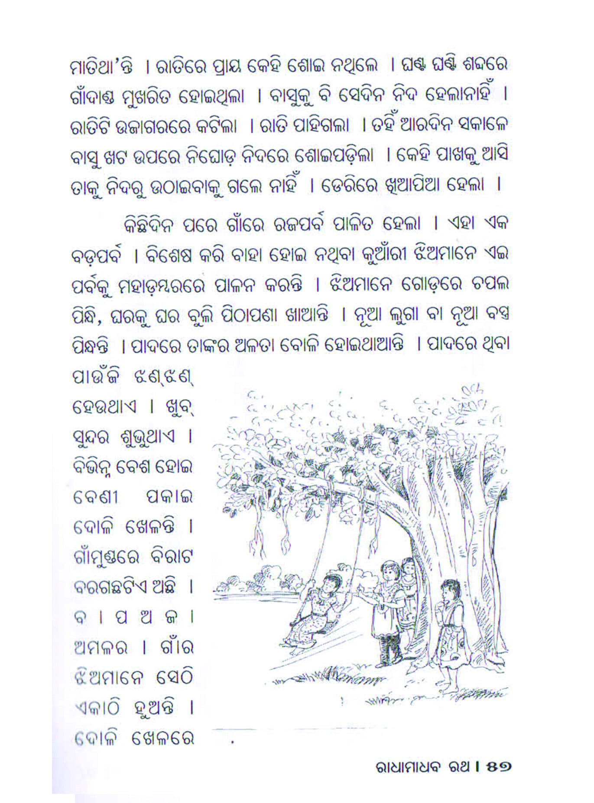
ମାତିଥା' ଝି | ରାତିରେ ପ୍ରାୟ କେହି ଶୋଇ ନଥିଲେ । ଘଣ୍ଟ ଘଣ୍ଟ ଶବ୍ଦରେ ଗାଁଦାଣ୍ଡ ମୁଖରିତ ହୋଇଥିଲା । ବାସୁକୁ ବି ସେଦିନ ନିଦ ହେଲାନାହିଁ । ରାତିଟି ଉଜାଗରରେ କଟିଲା । ରାତି ପାହିଗଲା | ତହିଁ ଆରଦିନ ସକାଳେ ବାସୁ ଖଟ ଉପରେ ନିଘୋଡ଼ ନିଦରେ ଶୋଇପଡ଼ିଲା । କେହି ପାଖକୁ ଆସି ତାକୁ ନିଦରୁ ଉଠାଇବାକୁ ଗଲେ ନାହିଁ | ଡେରିରେ ଖୁଆପିଆ ହେଲା |
କିଛିଦିନ ପରେ ଗାଁରେ ରଜପର୍ବ ପାଳିତ ହେଲା । ଏହା ଏକ ବଡ଼ପର୍ବ | ବିଶେଷ କରି ବାହା ହୋଇ ନଥିବା କୁଆଁରୀ ଝିଅମାନେ ଏଇ ପର୍ବକୁ ମହାଡ଼ମ୍ବରରେ ପାଳନ କରନ୍ତି । ଝିଅମାନେ ଗୋଡ଼ରେ ଚପଲ ପିନ୍ଧିକ ଘରକୁ ଘର ବୁଲି ପିଠାପଣା ଖାଆନ୍ତି | ନୂଆ ଲୁଗା ବା ନୂଆ ବସ୍ତର ପିନ୍ଧନ୍ତି । ପାଦରେ ତାଙ୍କର ଅଳତା ବୋଳି ହୋଇଥାଆନ୍ତି | ପାଦରେ ଥୁବା ପାଉଁଜି ଝଣ୍ଝଣ୍ |
ଅମଳର । ଗାଁର <5 ୩୩/୮୩ ¿£
ରାଧାମାଧବ ରଥ | ୫6୬୭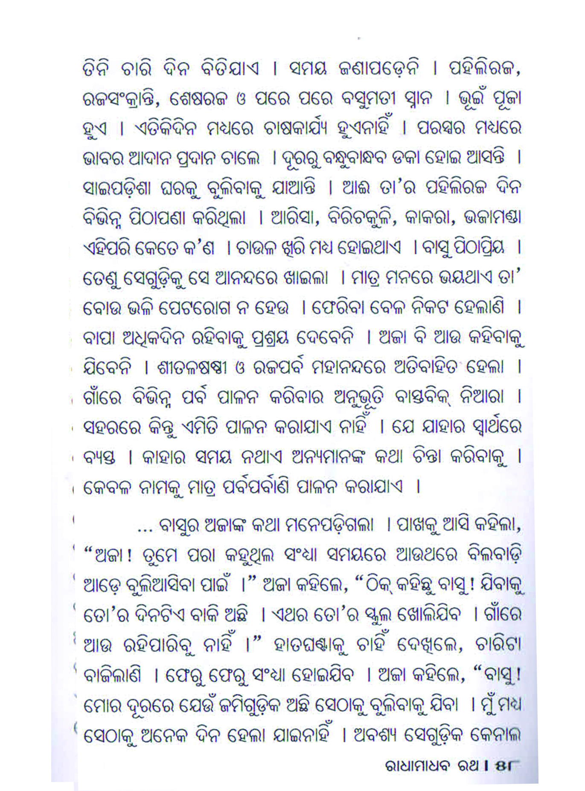
ତିନି ଚାରି ଦିନ ବିତିଯାଏ । ସମୟ ଜଣାପଡ଼େନି । ପହିଲିରଜ, ରଜସଂକ୍ରାନ୍ଥି, ଶେଷରଜ ଓ ପରେ ପରେ ବସୁମତୀ ସ୍ଵାନ । ଭୂଇଁ ପୂଜା ହୁଏ | ଏତିକିଦିନ ମଧ୍ଯରେ ଚାଷକାର୍ଯ୍ୟ ହୁଏନାହିଁ । ପରସ୍ପର ମଧ୍ଯରେ ଭାବର ଆଦାନ ପ୍ରଦାନ ଚାଲେ । ଦୂରରୁ ବନ୍ଧୁବାନ୍ଧବ ଡକା ହୋଇ ଆସନ୍ତି | ସାଇପଡ଼ିଶା ଘରକୁ ବୁଲିବାକୁ ଯାଆନ୍ତି । ଆଭ ତା”ର ପହିଲିରଜ ଦିନ ବିଭିନ୍ନ ପିଠାପଣା କରିଥିଲା । ଆରିସା, ବିରିଚକୁଳି, କାକରା, ଭଳାମଣ୍ଡା ଏହିପରି କେତେ କ'ଣ । ଚାଉଳ ଖରି ମଧ୍ଯ ହୋଇଥାଏ । ବାସୁ ପିଠାପ୍ରିୟ | ତେଣୁ ସେଗୁଡ଼ିକୁ ସେ ଆନନ୍ଦରେ ଖାଇଲା । ମାତ୍ର ମନରେ ଭୟଥାଏ ତା” ବୋଉ ଭଳି ପେଟରୋଗ ନ ହେଉ । ଫେରିବା ବେଳ ନିକଟ ହେଲାଣି । ବାପା ଅଧରକଦିନ ରହିବାକୁ ପ୍ରଶ୍ରୟ ଦେବେନି | ଅଜା ବି ଆଉ କହିବାକୁ “ ଯିବେନି | ଶୀତଳଷଷ୍ଠୀ ଓ ରଜପର୍ବ ମହାନନ୍ଦରେ ଅତିବାହିତ ହେଲା | । ଗାଁରେ ବିଭିନ୍ନ ପର୍ବ ପାଳନ କରିବାର ଅନୁଭୁତି ବାସ୍ତବିକ୍ ନିଆରା । | ସହରରେ କିନ୍ତୁ ଏମିତି ପାଳନ କରାଯାଏ ନାହିଁ | ଯେ ଯାହାର ସ୍ବାର୍ଥରେ । ବ୍ଯସ୍ତ । କାହାର ସମୟ ନଥାଏ ଅନ୍ୟାମାନଙ୍କ କଥା ଚିନ୍ତା କରିବାକୁ |
। କେବଳ ନାମକୁ ମାତ୍ର ପର୍ବପର୍ବାଣି ପାଳନ କରାଯାଏ । ¦ .... ବାସୁର ଅଜାଙ୍କ କଥା ମନେପଡ଼ିଗଲା | ପାଖକୁ ଆସି କହିଲା, ' “ଅଜା! ତୁମେ ପରା କହୁଥିଲ ସଂଧ୍ଧା ସମୟରେ ଆଉଥରେ ବିଲବାଡ଼ି ' ଆଡ଼େ ବୁଲିଆସିବା ପାଇଁ | ” ଅଜା କହିଲେ, “On କହିଛୁ ବାସୁ ! ଯିବାକୁ ( ତୋ'ର ଦିନଟିଏ ବାକି ଅଛି | ଏଥର ତୋ 'ର ସ୍କୁଲ ଖୋଲିଯିବ | ଗାଁରେ ' ବାଜିଲାଣି | ଫେରୁ ଫେରୁ ସଂଧ୍ଧା ହୋଇଯିବ | ଅଜା କହିଲେ, “ ବାସୁ ! `“ ମୋର ଦୂରରେ ଯେଉଁ ଜମିଗୁଡ଼ିକ ଅଛି ସେଠାକୁ ବୁଲିବାକୁ del ମୁଁ ମଧ୍ଯ ( ସେଠାକୁ ଅନେକ ଦିନ ହେଲା ଯାଇନାହିଁ | ଅବଶ୍ୟ ସେଗୁଡ଼ିକ କେନାଲ ରାଧାମାଧବ ରଥ | 9୫୮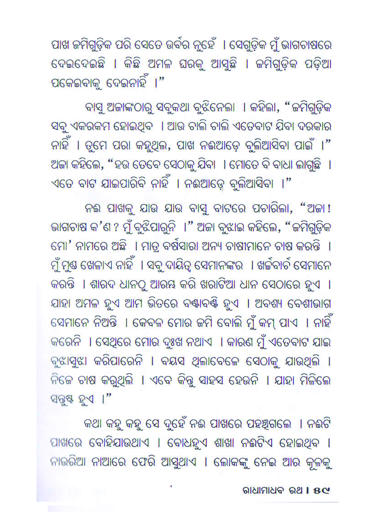
ପାଖ ଜମିଗୁଡ଼ିକ ପରି ସେତେ ଉର୍ବର ନୁହେଁ । ସେଗୁଡ଼ିକ ମୁଁ ଭାଗଚାଷରେ ଦେଇଦେଇଛି । କିଛି ଅମଳ ଘରକୁ ଆସୁଛି । ଜମିଗୁଡ଼ିକ ପଡ଼ିଆ ପକେଇବାକୁ ଦେଇନାହିଁ ।”
ବାସୁ ଅଜାଙ୍କଠାରୁ ସବୁକଥା ବୁଝିନେଲା । କହିଲା, “ ଜମିଗୁଡ଼ିକ ସବୁ ଏକରକମ ହୋଇଥିବ । ଆଉ ଚାଲି ଚାଲି ଏତେବାଟ ଯିବା ଦରକାର ନାହିଁ | ତୁମେ ପରା କହୁଥୁଲ, ପାଖ ନଭଆଡ଼େ ବୁଲିଆସିବା ପାଇଁ ।” ଅଜା କହିଲେ, “ ହଉ ତେବେ ସେଠାକୁ ଯିବା | ମୋତେ ବି ବାଧା ଲାଗୁଛି | ଏତେ ବାଟ ଯାଇପାରିବି ନାହିଁ | ନଛଆଡ଼େ ବୁଲିଆସିବା ।”
ନଭ ପାଖକୁ ଯାଉ ଯାଉ ବାସୁ ବାଟରେ ପଚାରିଲା, “ ଅଳା ! ଭାଗଚାଷ କ'ଣ ? ମୁଁ ବୁଝିପାରୁନି ।” ଅଜା ବୁଝାଇ କହିଲେ, “ ଜମିଗୁଡ଼ିକ ମୋ” ନାମରେ ଅଛି । ମାତ୍ର ବର୍ଷସାରା ଅନ୍ୟ ଚାଷୀମାନେ ଚାଷ କରନ୍ତି | ମୁଁ ମୁଣ୍ଡ ଖେଳାଏ ନାହିଁ | ସବୁ ଦାୟିତ୍ଵ ସେମାନଙ୍କର । ଖର୍ଚ୍ଚବାର୍ଟ ସେମାନେ କରନ୍ତି । ଶାରଦ ଧାନଠୁ ଆରମ୍ଭ କରି ଖରାଟିଆ ଧାନ ସେଠାରେ ହୁଏ । ଯାହା ଅମଳ ହୁଏ ଆମ ଭିତରେ ବଣ୍ଟାବଣ୍ଠ ହୁଏ | ଅବଶ୍ୟ ବେଶୀଭାଗ ସେମାନେ ନିଅନ୍ତି । କେବଳ ମୋର ଜମି ବୋଲି ମୁଁ କମ୍ ପାଏ । ନାହିଁ କରେନି । ସେଥୁରେ ମୋର ଦୁଃଖ ନଥାଏ | କାରଣ ମୁଁ ଏତେବାଟ ଯାଇ ବୁଝାସୁଝା କରିପାରେନି । ବୟସ ଥିଲାବେଳେ ସେଠାକୁ ଯାଉଥିଲି । ନିଜେ ଚାଷ କରୁଥିଲି । ଏବେ କିନ୍ତୁ ସାହସ ହେଉନି । ଯାହା ମିଳିଲେ ସନ୍ତୁଷ୍ଟ ହୁଏ ।”
କଥା କହୁ କହୁ ସେ ଦୁହେଁ AQ ପାଖରେ ପହଞ୍ଚୁଗଲେ | ନଭଇଟି ପାଖରେ ବୋହିଯାଉଥାଏ | ବୋଧହୁଏ ଶାଖା ନଭଟିଏ ହୋଇଥିବ | ନାଉରିଆ ନାଆରେ ଫେରି ଆସୁଥାଏ । ଲୋକଙ୍କୁ ନେଇ ଆର କୂଳକୁ
” ରାଧାମାଧବ ରଥ | ୫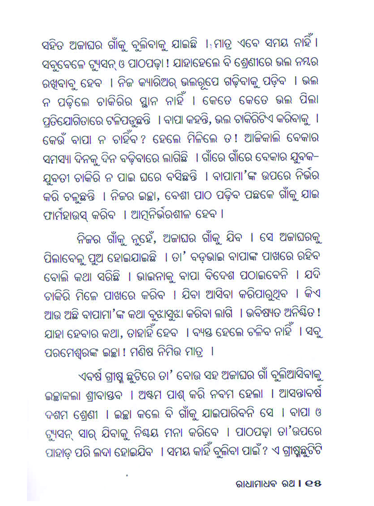
ସହିତ ଅଜାଘର ଗାଁକୁ ବୁଲିବାକୁ ଯାଇଛି ।; ମାତ୍ର ଏବେ ସମୟ ନାହିଁ । ସବୁବେଳେ ଟ୍ୟୁସନ୍ ଓ ପାଠପଢ଼ା ! ଯାହାହେଲେ ବି ଶ୍ରେଣୀରେ ଭଲ ନମ୍ବର ରଖବାବୁ ହେବ । ନିଜ କ୍ୟାରିଅର୍ ଭଲରୂପେ ଗଢ଼ିବାକୁ ପଡ଼ିବ । ଭଲ ନ ପଢ଼ିଲେ ଚାକିରିର ସ୍ଫ୍ରାନ ନାହିଁ । କେତେ କେତେ ଭଲ ପିଲା ପ୍ରତିଯୋଗିତାରେ ଟଳିପଡୁଛନ୍ତି । ବାପା କହନ୍ତି, ଭଲ ଚାକିରିଟିଏ କରିବାକୁ | କେଉଁ ବାପା ନ ଚାହିଁବ ? ହେଲେ ମିଳିଲେ ତ ! ଆଜିକାଲି ବେକାର ସମସ୍ୟା ଦିନକୁ ଦିନ ବଢ଼ିବାରେ ଲାଗିଛି । ଗାଁରେ ଗାଁରେ ବେକାର ଯୁବକ- ଯୁବତୀ ଚାକିରି ନ ପାଇ ଘରେ ବସିଛନ୍ତି | ବାପାମା ”ଙ୍କ ଉପରେ ନିର୍ଭର କରି ଚଳୁଛନ୍ତି । ନିଜର ଇଚ୍ଛା, ବେଶୀ ପାଠ ପଢ଼ିବ ପଛକେ ଗାଁକୁ ଯାଇ ଫାର୍ମହାଉସ୍ କରିବ । ଆତ୍ମନିର୍ଭରଶୀଳ ହେବ ।
ନିଜର ଗାଁକୁ ନୁହେଁ, ଅଜାଘର ଗାଁକୁ ଯିବ । ସେ ଅଜାଘରକୁ ପିଲାବେଳୁ ପୁଅ ହୋଇଯାଇଛି । ତା” ବଡ଼ଭାଇ ବାପାଙ୍କ ପାଖରେ ରହିବ ବୋଲି କଥା ସରିଛି । ଭାଇନାକୁ ବାପା ବିଦେଶ ପଠାଇବେନି । ଯଦି ଚାକିରି ମିଳେ ପାଖରେ କରିବ । ଯିବା ଆସିବା କରିପାରୁଥିବ । କିଏ ଆଉ ଅଛି ବାପାମା ଙ୍କ କଥା ବୁଝାସୁଝା କରିବା ଲାଗି | ଭବିଷ୍ଯତ ଅନିଶ୍ଚିତ ! ଯାହା ହେବାର କଥା, ତାହାହିଁ ହେବ । ବ୍ୟସ୍ତ ହେଲେ ଚଳିବ ନାହିଁ । ସବୁ ପରମେଶ୍ବରଙ୍କ ଇଚ୍ଛା ! ମଣିଷ ନିମିତ୍ତ ମାତ୍ର |
ଏବର୍ଷ ଗ୍ରୀଷ୍ମ ଛୁଟିରେ ତା' ବୋଉ ସହ ଅଜାଘର ଗାଁ ବୁଲିଆସିବାକୁ ଇଚ୍ଛାକଲା ଶ୍ରୀବାସ୍ତବ । ଅଷ୍ଟମ ପାଶ୍ କରି ନବମ ହେଲା । ଆସନ୍ତାବର୍ଷ ଦଶମ ଶ୍ରେଣୀ । ଇଚ୍ଛା କଲେ ବି ଗାଁକୁ ଯାଇପାରିବନି ସେ । ବାପା ଓ ଟ୍ୟୁସନ୍ ସାର୍ ଯିବାକୁ ନିଶ୍ଚୟ ମନା କରିବେ | ପାଠପଢ଼ା ତା'ଉପରେ ପାହାଡ଼ ପରି ଲଦା ହୋଇଯିବ । ସମୟ କାହିଁ ବୁଲିବା ପାଇଁ ? ଏ ଗ୍ରୀଷ୍ମଛୁଟିଟି
| ରାଧାମାଧବ ରଥ | e8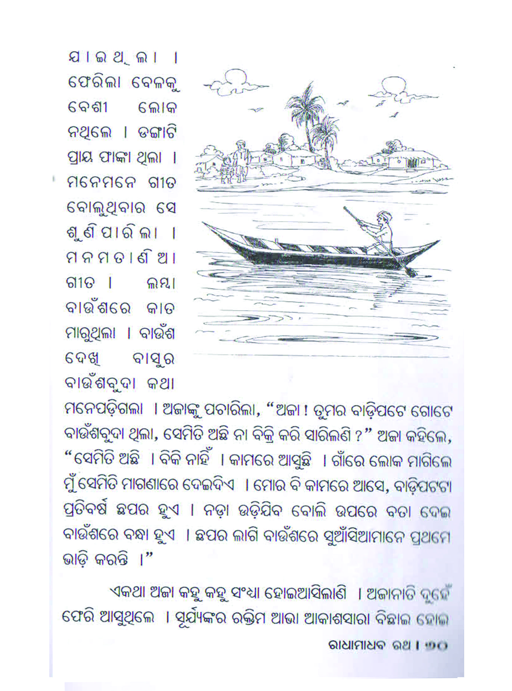
ବୋଲୁଥବାରସେ ଏ ୭. ବାଉଁଶବୁଦା କଥା ମନେପଡ଼ିଗଲା । ଅଜାଙ୍କୁ ପଚାରିଲା, “ ଅଜା ! ତୁମର ବାଡ଼ିପଟେ ଗୋଟେ ବାଉଁଶବୁଦା ଥଲା, ସେମିତି ଅଛି ନା ବିକ୍ରି କରି AGRE ?” ଅଜା କହିଲେ, “ ସେମିତି ଅଛି । ବିକି ନାହିଁ । କାମରେ ଆସୁଛି । ଗାଁରେ ଲୋକ ମାଗିଲେ ମୁଁ ସେମିତି ମାଗଣାରେ ଦେଇଦିଏ । ମୋର ବି କାମରେ ଆସେ, ବାଡ଼ିପଟଟା ପ୍ରତିବର୍ଷ ଛପର ହୁଏ । ନଡ଼ା ଉଡ଼ିଯିବ ବୋଲି ଉପରେ ବତା ଦେଇ ବାଉଁଶରେ ବନ୍ଧା ହୁଏ । ଛପର ଲାଗି ବାଉଁଶରେ ସୁଆଁସିଆମାନେ ପ୍ରଥମେ ଭାଡ଼ି କରନ୍ତି ।” ଏକଥା ଅଜା କହୁ କହୁ ସଂଧ୍ଷା ହୋଇଆସିଲାଣି । ଅଜାନାତି ଦୁହେଁ ଫେରି ଆସୁଥିଲେ । ସୂର୍ଯ୍ୟଙ୍କର ରକ୍ତିମ ଆଭା ଆକାଶସାରା ବିଛାଲ CLI ରାଧାମାଧବ ରଥ । ୨୧)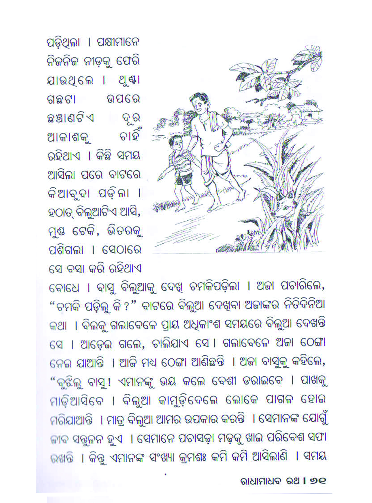
ପଡ଼ିଥିଲା । ପକ୍ଷୀମାନେ - ଆକାଶକୃ ଚାହିଁ ଅଲା । ୬୮୦୬” ୨୨୨ ଆସିଲା ପରେ ବାଟରେ ୮୬ 1 ୧୮ ସେ ବସା କରି ରହିଥାଏ ବୋଧେ । ବାସୁ ବିଲୁଆକୁ ଦେଖ ଚମକିପଡ଼ିଲା | ଅଜା ପଚାରିଲେ, “ ଚମକି ପଡ଼ିଲୁ କି ?” ବାଟରେ ବିଲୁଆ ଦେଖିବା ଅଜାଙ୍କର ନିତିଦିନିଆ କଥା | ବିଲକୁ ଗଲାବେଳେ ପ୍ରାୟ ଅଧ୍ଵକାଂଶ ସମୟରେ ବିଲୁଆ ଦେଖନ୍ତି ସେ । ଆଡ଼େଇ ଗଲେ, ଚାଲିଯାଏ ସେ । ଗଲାବେଳେ ଅଜା ଠେଙ୍ଗା ନେଇ ଯାଆନ୍ତି । ଆଜି ମଧ୍ଯ ଠେଙ୍ଗା ଆଣିଛନ୍ତି । ଅଜା ବାସୁକୁ କହିଲେ, “GER ବାସୁଃ ଏମାନଙ୍କୁ ଭୟ କଲେ ବେଶୀ ଡରାଇବେ | ପାଖକୁ ମାଡ଼ିଆସିବେ । ବିଲୁଆ କାମୁଡ଼ିଦେଲେ ଲୋକେ ପାଗଳ ହୋଇ ମରିଯାଆନ୍ତି । ମାତ୍ର ବିଲୁଆ ଆମର ଉପକାର କରନ୍ତି । ସେମାନଙ୍କ ଯୋଗୁଁ ଜାବ ସନ୍ତୁଳନ ହୁଏ । ସେମାନେ ପଚାସଢ଼ା ମଢ଼କୁ ଖାଇ ପରିବେଶ ସଫା ରଖନ୍ତି । କିନ୍ତୁ ଏମାନଙ୍କ ସଂଖ୍ୟା କ୍ରମଶଃ କମି କମି ଆସିଲାଣି । ସମୟ ' ରାଧାମାଧବ ରଥ | ୬୭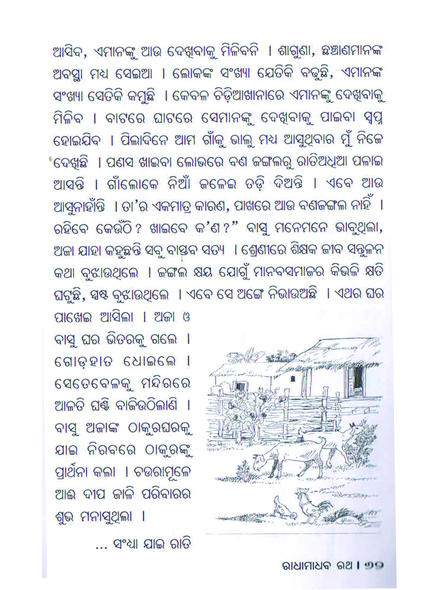
ଆସିବ, ଏମାନଙ୍କୁ ଆଉ ଦେଖିବାକୁ ମିଳିବନି | ଶାଗୁଣା, ଛଞ୍ଚାଣମାନଙ୍କ ଅବସ୍ଥା ମଧ୍ଯ ସେଇଆ | ଲୋକଙ୍କ ସଂଖ୍ୟା ଯେତିକି ବଢୁଛି, ଏମାନଙ୍କ ସଂଖ୍ୟା ସେତିକି କମୁଛି | କେବଳ ଚିଡ଼ିଆଖାନାରେ ଏମାନଙ୍କୁ ଦେଖବାକୁ ମିଳିବ | ବାଟରେ ଘାଟରେ ସେମାନଙ୍କୁ ଦେଖିବାକୁ ପାଇବା ସ୍ବପ୍ନ ହୋଇଯିବ । ପିଲାଦିନେ ଆମ ଗାଁକୁ ଭାଲୁ ମଧ୍ଯ ଆସୁଥିବାର ମୁଁ ନିଜେ ' ଦେଖୁଛି | ପଣସ ଖାଇବା ଲୋଭରେ ବଣ ଜଙ୍ଗଲରୁ AGI ପଳାଇ ଆସନ୍ତି । ଗାଁଲୋକେ ନିଆଁ ଜଳେଇ ତଡ଼ି ଦିଅନ୍ତି । ଏବେ ଆଉ ଆସୁନାହାଁନ୍ତି । ତା'ର ଏକମାତ୍ର କାରଣ, ପାଖରେ ଆଉ ବଣଜଙ୍ଗଲ ନାହିଁ । ରହିବେ କେଉଁଠି ? ଖାଇବେ କ'ଣ ?” ବାସୁ ମନେମନେ ଭାବୁଥିଲା, ଅଜା ଯାହା କହୁଛନ୍ତି ସବୁ ବାସ୍ତବ ସତ୍ୟ | ଶ୍ରେଣୀରେ ଶିକ୍ଷକ ଜୀବ ସନ୍ତୁଳନ କଥା ବୁଝାଉଥିଲେ | ଜଙ୍ଗଲ କ୍ଷୟ ଯୋଗୁଁ ମାନବସମାଜର କିଭଳି କ୍ଷତି ଘଟୁଛି, 98 ବୁଝାଉଥିଲେ | ଏବେ ସେ ଅଙ୍ଗେ ନିଭାଉଅଛି | ଏଥର ଘର ପାଖେଇ ଆସିଲା । ଅଜା ଓ ବାସୁ ଘର ଭିତରକୁ ଗଲେ । = 2775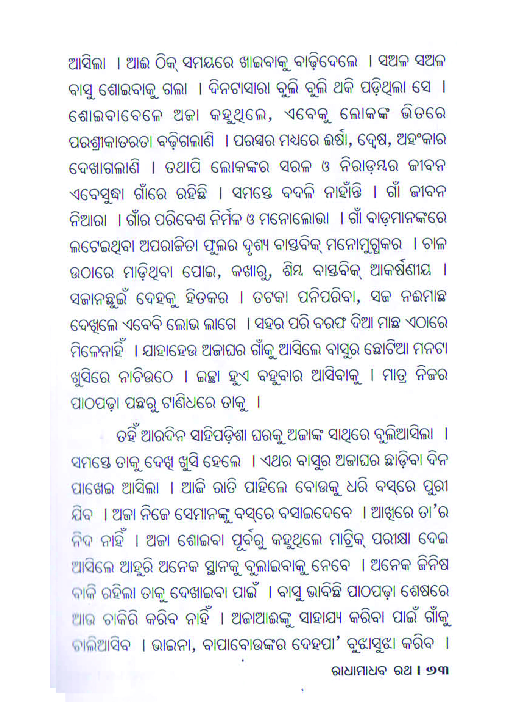
ଆସିଲା | ଆଭ ଠିକ୍ ସମୟରେ ଖାଇବାକୁ ବାଢ଼ିଦେଲେ | ସଅଳ ସଅଳ ବାସୁ ଶୋଇବାକୁ ଗଲା । ଦିନଟାସାରା ବୁଲି ବୁଲି ଥକି ପଡ଼ିଥିଲା ସେ । ଶୋଇବାବେଳେ ଅଜା କହୁଥୁଲେ, ଏବେକୂ ଲୋକଙ୍କ ଭିତରେ ପରଶ୍ରୀକାତରତା ବଢ଼ିଗଲାଣି | ପରସ୍ପର ମଧ୍ଯରେ ଭର୍ଷା, ଦ୍ଵେଷ, ଅହଂକାର ଦେଖାଗଲାଣି । ତଥାପି ଲୋକଙ୍କର ସରଳ ଓ ନିରାଡ଼ମ୍ବର ଜୀବନ ଏବେସୁଦ୍ଧା ଗାଁରେ ରହିଛି । ସମସ୍ତେ ବଦଳି ନାହାଁନ୍ତି । ଗାଁ ଜୀବନ ନିଆରା । ଗାଁର ପରିବେଶ ନିର୍ମଳ ଓ ମନୋଲୋଭା । ଗାଁ ବାଡ଼ମାନଙ୍କରେ ଲଟେଇଥିବା ଅପରାଜିତା ଫୁଲର ଦୃଶ୍ୟ ବାସ୍ତବିକ୍ ମନୋମୁଗ୍ଧକର | ଚାଳ ଉଠାରେ ମାଡ଼ିଥିବା ପୋଇ, କଖାରୁ, ଶିମ୍ବ ବାସ୍ତବିକ୍ ଆକର୍ଷଣୀୟ | ସଜାନଛୁଇଁ ଦେହକୁ ହିତକର | ତଟକା ପନିପରିବା, ସଜ AAS ଦେଖିଲେ ଏବେବି ଲୋଭ ଲାଗେ । ସହର ପରି ବରଫ ଦିଆ ମାଛ ଏଠାରେ ମିଳେନାହିଁ । ଯାହାହେଉ ଅଜାଘର ଗାଁକୁ ଆସିଲେ ବାସୁର ଛୋଟିଆ ମନଟା ଖୁସିରେ ନାଚିଉଠେ । ଇଚ୍ଛା ହୁଏ ବହୁବାର ଆସିବାକୁ । ମାତ୍ର ନିଜର ପାଠପଢ଼ା ପଛରୁ ଟାଣିଧରେ ତାକୁ । ତହିଁ ଆରଦିନ ସାହିପଡ଼ିଶା ଘରକୁ ଅଜାଙ୍କ ସାଥ୍ଵରେ ବୁଲିଆସିଲା | ସମସ୍ତେ ତାକୁ ଦେଖ ଖୁସି ହେଲେ | ଏଥର ବାସୁର ଅଜାଘର ଛାଡ଼ିବା ଦିନ ପାଖେଇ ଆସିଲା । ଆଜି ରାତି ପାହିଲେ ବୋଉକୁ ଧରି ବସ୍ରେ ପୁରୀ ଯିବ । ଅଜା ନିଜେ ସେମାନଙ୍କୁ ବସ୍ରେ ବସାଇଦେବେ । ଆଖରେ ତା'ର ନିଦ ନାହିଁ | ଅଜା ଶୋଇବା ପୂର୍ବରୁ କହୁଥଲେ ମାଟ୍ରିକ୍ ପରୀକ୍ଷା ଦେଇ ଆ୍ପାସିଲେ ଆହୁରି ଅନେକ ସ୍ଥାନକୁ ବୁଲାଇବାକୁ ନେବେ | ଅନେକ ଜିନିଷ ବାଳି ରହିଲା ତାକୁ ଦେଖାଇବା ପାଇଁ । ବାସୁ ଭାବିଛି ପାଠପଢ଼ା ଶେଷରେ ॥୍ପାର ଚାକିରି କରିବ ନାହିଁ | ଅଜାଆଇଙ୍କୁ ସାହାଯ୍ୟ କରିବା ପାଇଁ ଗାଁକୁ ଜାଲିମ୍ପାସିବ | ଭାଇନା, ବାପାବୋଉଙ୍କର ଦେହପା” ବୁଝାସୁଝା କରିବ |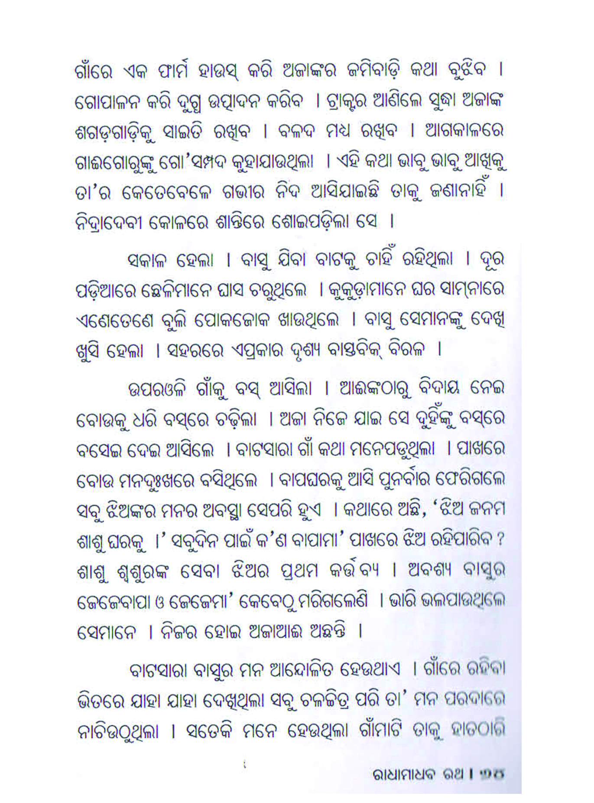
ଗାଁରେ ଏକ ଫାର୍ମ ହାଉସ୍ କରି ଅଜାଙ୍କର ଜମିବାଡ଼ି କଥା ବୁଝିବ । ଗୋପାଳନ କରି ଦୁଗ୍ଧ ଉତ୍ପାଦନ କରିବ । ଟ୍ରାକ୍ଟର ଆଣିଲେ ସୁଦ୍ଧା ଅଜାଙ୍କ ଶଗଡ଼ଗାଡ଼ିକୁ ସାଇତି ରଖୁବ | ବଳଦ ମଧ୍ଯ ରଖୂବ | ଆଗକାଳରେ ତା'ର କେତେବେଳେ ଗଭୀର ନିଦ ଆସିଯାଇଛି ତାକୁ ଜଣାନାହିଁ । ନିଦ୍ରାଦେବୀ କୋଳରେ ଶାନ୍ତିରେ ଶୋଇପଡ଼ିଲା ସେ ।
ସକାଳ ହେଲା । ବାସୁ ଯିବା ବାଟକୁ ଚାହିଁ ରହିଥିଲା । ଦୂର ପଡ଼ିଆରେ ଛେଳିମାନେ ଘାସ ଚରୁଥିଲେ । କୁକୁଡ଼ାମାନେ ଘର ସାମ୍ନାରେ ଏଣେତେଣେ ବୁଲି ପୋକଜୋକ ଖାଉଥିଲେ । ବାସୁ ସେମାନଙ୍କୁ ଦେଖ୍ ଖୁସି ହେଲା । ସହରରେ ଏପ୍ରକାର ଦୃଶ୍ୟ ବାସ୍ତବିକ୍ ବିରଳ ।
ଉପରଓଳି ଗାଁକୁ ବସ୍ ଆସିଲା | ଆଭଙ୍କଠାରୁ ବିଦାୟ ନେଇ ବୋଉକୁ ଧରି ବସ୍ରେ ଚଢ଼ିଲା । ଅଜା ନିଜେ ଯାଇ ସେ ଦୁହିଁଙ୍କୁ ବସ୍ରେ ବସେଇ ଦେଇ ଆସିଲେ । ବାଟସାରା ଗାଁ କଥା ମନେପଡୁଥିଲା | ପାଖରେ ବୋଉ ମନଦୁଃଖରେ ବସିଥିଲେ । ବାପଘରକୁ ଆସି ପୁନର୍ବାର ଫେରିଗଲେ ସବୁ ଝିଅଙ୍କର ମନର ଅବସ୍ଥା ସେପରି ହୁଏ । କଥାରେ ଅଛି, ' ଝିଅ ଜନମ ଶାଶୁ ଘରକୁ I” ସବୁଦିନ ପାଇଁ କ'ଣ ବାପାମା” ପାଖରେ ଝିଅ ରହିପାରିବ ? ଶାଶୁ ଶ୍ବଶୁରଙ୍କ ସେବା ଝିଅର ପ୍ରଥମ କର୍ତ ବ୍ଯ | ଅବଶ୍ଯ ବାସୁର ଜେଜେବାପା ଓ ଜେଜେମା” କେବେଠୁ ମରିଗଲେଣି | ଭାରି ଭଲପାଉଥଲେ ସେମାନେ । ନିଜର ହୋଇ ଅଜାଆଭ ଅଛନ୍ତି ।
ବାଟସାରା ବାସୁର ମନ ଆନ୍ଦୋଳିତ ହେଉଥାଏ । ଗାଁରେ ରହିବା ଭିତରେ ଯାହା ଯାହା ଦେଖିଥିଲା ସବୁ ଚଳଚ୍ଚିତ୍ର ପରି ତା' ମନ ପରଦାରେ ନାଚିଉଠୁଥ୍ଲା | ସତେକି ମନେ ହେଉଥଲା ଗାଁମାଟି ତାକୁ ହାତଠାରି
` ରାଧାମାଧବ ରଥ । ୨୦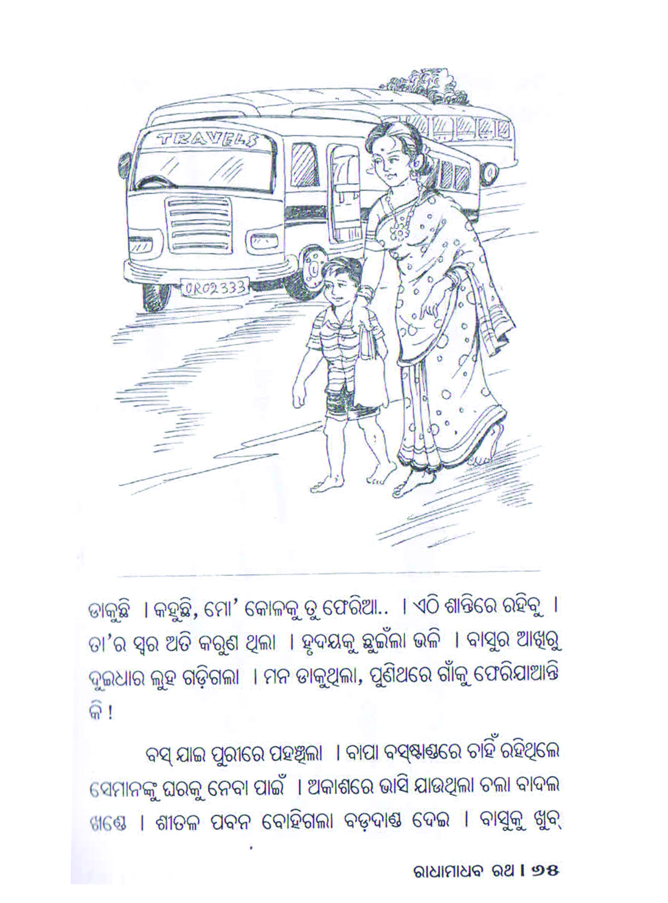
ଡାକୁଛି । କହୁଛି, ମୋ” କୋଳକୁ ତୁ ଫେରିଆ.. | ଏଠି ଶାନ୍ତିରେ ରହିବୁ | ତା'ର ସ୍ଵର ଅତି କରୁଣ ଥିଲା | ହୃଦୟକୁ ଛୁଇଁଲା ଭଳି | ବାସୁର ଆଖରୁ ଦୁଇଧାର ଲୁହ ଗଡ଼ିଗଲା | ମନ ଡାକୁଥୁଲା, ପୁଣିଥରେ ଗାଁକୁ ଫେରିଯାଆନ୍ତି ବସ୍ ଯାଇ ପୁରୀରେ CEA! | ବାପା ବସ୍ଷ୍ଟାଣ୍ଡରେ ଚାହିଁ ରହିଥିଲେ ସେମାନଙ୍କୁ ଘରକୁ ନେବା ପାଇଁ | ଅକାଶରେ ଭାସି ଯାଉଥିଲା ଚଲା ବାଦଲ ଖଣ୍ଡେ | ଶୀତଳ ପବନ ବୋହିଗଲା ବଡ଼ଦାଣ୍ଡ ଦେଇ । ବାସୁକୁ ଖୁବ୍ ରାଧାମାଧବ ରଥ | 98ଆରାମ ଲାଗୁଥିଲା... | ତା'ର ମନେପଡ଼ିଯାଉଥିଲା କବି ବିନୋଦଚନ୍ଦ୍ର ନାୟକଙ୍କର “ ଗ୍ରାମପଥ'” କବିତାରେ ଲେଖା ହୋଇଥିବା କେତୋଟି ଧାଡ଼ି...
“ ଶ୍ୟାମ ପ୍ରାନ୍ତରେ ଉଲଙ୍ଗ ଶିଶୁସମ ଏ ପଥ ଘୁମାଏ ନୀଳ ନଭେ ଯଥା ଛାୟାପଥ ମନୋରମ । ଗ୍ରାମ ଝରଣାରେ ଲଂଘି ଏ ପଥ ସରଗ ସୀମାକୁ ଧାଏଁ ସନ୍ନ୍ୟାସୀ ସେକି ବିତରି କରୁଣା ଧନ ।” - ବିନୋଦଚନ୍ଦ୍ର ନାୟକ (ଭାରତୀୟ କବିତା, ୧୯୫୩) ରାଧାମାଧବ ରଥ | 99ଠିକ୍ ସମୟ ବୁଲିଆସିବା ପାଇଁ । ଅଜା ଆଭ ବି ତାକୁ ଅନେକଥର ମନେ ପକେଇଲେଣି । | ଯିବି ଯିବି” ବୋଲି ରହିଯାଏ | ହେଲେ ଯାଇପାରେନା | ବାପାଙ୍କ ସମୟ ଓ ତାର ପାଠପଢ଼ା ବାଧକ ହୁଏ | ମନେମନେ ଭାବେ, ଅଜାଆଭକୁ ସେ ଯେପରି ଠକି ଚାଲିଛି |
ବାପା ସଙ୍ଗରେ ଯିବାକୁ ସିଧା ସିଧା ମନା କରିଦେଲେ । ପୁରୀ ତହସିଲ୍ରେ କାମ କରନ୍ତି ସେ | ଉପରିସ୍ତ୍ ଅଫିସର୍ ଛୁଟି ଦିଅନ୍ତି ନାହିଁ | ଶ୍ରୀବାସ୍ତବକୁ ପାଖକୁ ଡାକି କହିଲେ, “ବାସୁ! ତୁ ଏଥର ତୋ” ବୋଉ ସାଥେ ଅଜାଘର ଗାଁକୁ ବୁଲିବାକୁ ଯା" | ମୋର ସମୟ ହେଲେ ଅଫିସରଙ୍କୁ କହି ଦିନେ ଦୁଇଦିନ ପାଇଁ ବୁଲିଆସିବି 1” ଏମିତି କେତେଥର କହିଲେଣି, କିନ୍ତୁ ବାସ୍ତବରେ ଯାଇପାରନ୍ତି ନାହିଁ । ସେଇ ପୁରୀରେ ହିଁ ତାଙ୍କ ସମୟ କଟିଯାଏ । ପୁରୀରେ ତାଙ୍କ ଜନ୍ମ । ପୁରୀ ଭଲ ତ ସେ ଭଲ । ପୁରୀରେ ତାଙ୍କ ଚାକିରି ଜୀବନ ବିତିଲାଣି । କେବେ ବଦଳି ହୋଇ ଅନ୍ୟତ୍ର ଯାଇନାହାଁନ୍ତି । ସବୁ ଅଫିସର୍ ଭଲପାଆନ୍ତି ତାଙ୍କୁ | ଆଉ 28 ବର୍ଷ ରହିଲା ଅବସର ନେବାକୁ । ଅବସର ନେଲେ ବିଶ୍ରାମ ମିଳିବ ।
ଉତ୍କଣ୍ଠାର ସହିତ ବୋଉ ସାଥେ ଅଜାଘର ଗାଁ ବୁଲିଆସିବାକୁ ବାପାଙ୍କ ଆଗରେ “ହଂ କରିଦେଲା ଶ୍ରୀବାସ୍ତବ | ବାପା ତା” ସହିତ ଯିବା ପାଇଁ ଅଡ଼ିବସିଲେ, ତାକୁ ମଧ୍ଯ ଯିବାପାଇଁ ଶେଷକୁ ମନା କରିଦେବେ । ଲାଭ କିଛି ହେବନାହିଁ । ଅଜା ଆଭ ତେଣେ ମନଦୁଃଖ କରିବେ । ବରଂ ବୋଉ ସହିତ ବାହାରିବାଟା ତା” ପାଇଁ ଭଲ ହେବ । ଏ ସୁଯୋଗକୁ ହାତଛଡ଼ା କରିବା ଉଚିତ ନୁହେଁ ।
ଶ୍ରୀବାସ୍ତବକୁ ସମସ୍ତେ ଖୁସିରେ “ ବାସୁ' ବୋଲି ଡାକନ୍ତି । ତାକୁ ବି - “ବାସୁ” ବୋଲି ଡାକିଲେ ସେ ମନେ ମନେ ଭାରି ଖୁସି ହୁଏ | ସେ ଭାବେ,ସେ କ'ଣ ସତରେ ଫୁଲପରି ବାସେ ! ଯେଣୁ ତାକୁ ନିଜ ଘରଠାରୁ ଆରମ୍ଭ କରି ଅଜାଘର ପର୍ଯ୍ୟନ୍ତ ସମସ୍ତେ ବାସୁ ବୋଲି ଡାକନ୍ତି । ତାହାର ତ ସେମିତି କିଛି ଭଲ ଗୁଣ ନାହି । କହନ୍ତି, ବାପାମା'ଙ୍କ ଆଗରେ ପୁଅ ବଡ଼ ଦିଶେ | ନାତି ତ ଆହୁରି ବଳି । ଯଥା ସମୟରେ ବାପା ନେଇ ବୋଉଙ୍କ ସାଥରେ ଶ୍ରୀବାସ୍ତବକୁ ବସ୍ରେ ବସାଇଦେଇ ଆସିଲେ । ସେତେବେଳକୁ ସମୟ ପ୍ରାୟ ଅପରାହ୍ନ ହେଲାଣି । ବସ୍ ଚାଲିଥାଏ ଅଜାଘର ଗାଁ ଅଭିମୁଖେ । ବାଟରେ ସେ ମଜା ଲାଗୁଥାଏ । ଆଇ ୟି ୪ ୨ "ଜାକ ଅଜାଘର ଗାଁକୁ ଯାଉଛି | ମନରେ ତା 'ର ଖେଳିଯାଉଛି ଅପାର ଆନନ୍ଦ | ସେ ଆନନ୍ଦକୁ କିଏ ମାପିପାରିବ ନାହି, | ଗାଁକୁ ଗଲେ ସେ ଅଜାଙ୍କ ସାଥିରେ କେତେ କ'ଣ ରାଧାମାଧବ ରଥ | ୭୭୬ଦେଖିବ | ପିଲାବେଳ କଥା ତା'ର ଏତେ ମନେନାହିଁ | ଝାପ୍ସା ହୋଇ କେତେବେଳେ ମନେପଡ଼େ । ଗାଁରେ ଥବା କ୍ଷେତବାଡ଼ିଠୁ ଆରମ୍ଭ କରି ଗାଁ ବିଦ୍ୟାଳୟ, ଗାଁ ହାଟ ଏମିତି ଅନେକ କିଛି... | ସେ ଏଥର ଭଲରୂପେ ଦେଖୁଆସିବ | ବହୁତ ଅନୁଭୂତି ହେବ | ସହରରେ ସର୍ବଦା ରହି ରହି ଦେହସୁଆ ହୋଇଗଲାଣି ତା 'ର । କିନ୍ତୁ ଗାଁ ଅନୁଭୂତି ନିଆରା | ଦେଖଲେ ଖୁସିଲାଗିବ | ବାରମ୍ବାର ଦେଖୁବାକୁ ଇଚ୍ଛା ହେବ | ବସ୍ ଯାଇ ବୋଉର ଲୁଗାପଟା “. ମଧ୍ଯ ସାଥ୍ରେ ଥାଏ, ଖୁବ୍ ଯତ୍ନର ସହିତ | ଚଳିବାରେ ଯେପରି ଅସୁବିଧା ନହୁଏ । ଅବଶ୍ୟ ଅଜାଆଭ ଅଛନ୍ତି । କିଛି ଅସୁବିଧା ହେଲେ ସେମାନେ ଚଳେଇ ନେବେ ।ନାତି, ବାସୁ ତାଙ୍କ ଗାଁକୁ ଆସିବ ବୋଲି ଅଜାଆଇ ବହୁଦିନରୁ ଶୁଣିଥିଲେ | ବାସୁର ବାପା ମଧ୍ଯ ଫୋନ୍ରେ ଏ ବାବଦରେ ତାଂ ଅଜାଙ୍କୁ ଜଣାଇ ଦେଇଥିଲେ । ଆଜିକାଲିତ ପିଲାଠାରୁ ଆରମ୍ଭ କରି ବୁଢ଼ା ପର୍ଯ୍ୟନ୍ତ ସମସ୍ତେ ସେଲ୍ଫୋନ୍ ବ୍ୟବହାର କଲେଣି । ଏବେ ମୋବାଇଲ୍ ଯୁଗ । ଟ୍ରଲିବାଲା ବି ତା” ସୁବିଧା ଲାଗି ଫୋନ୍ ବ୍ୟବହାର କରୁଛି | ତା” ଅଜା ବା କାହିଁକି ବ୍ୟବହାର ନ କରିବେ ? ତା” ଅଜା ଜଣେ ଅବସରପ୍ରାପ୍ତ ପ୍ରାଇମେରୀ ଶିକ୍ଷକ । ଅପାଠୁଆ ନୁହଁନ୍ତି । ଗାଁରେ ସମସ୍ତେ ତାଙ୍କୁ ଖାତିର୍ କରନ୍ତି । ଜାତିରେ ବ୍ରାହ୍ମଣ । ଅନେକଙ୍କ ଘରେ ଏବେ ସୁଦ୍ଧା ଯଜମାନ ଅଛି । ବାହାଘର ବ୍ରତଘର ହେଲେ ତାଙ୍କୁ ଖୋଜାପଡ଼େ । ନିଜେ ଯାଇ “ ଯଜମାନ” ହୋଇ ଛିଡ଼ା ହୁଅନ୍ତି | ସେଥୁରେ ତାଙ୍କୁ ବିଶେଷ ଆନନ୍ଦ ମିଳେ |
ଓହ୍ଲାଉ ତାଂ ଅଜା ଆସି ୨୨୮୭
ଗଛ | ବାସୁର ମନଟା ରାଧାମାଧବ ରଥ | ୭୯re ସେ ଏବେ ଆହୁରି ଅଧିକ ଧନୀ ପୂର୍ବ ପାହୋମ୍ ଭଲ ଘର ଖଣ୍ଡେ କଲା। ଗୂହାଳ ବି ତିଆରି କଲା। ଅପେକ୍ଷା ଦଶଗଣ ଧନୀ। ___ । =< ପ୍ରଥମ ବର୍ଷ ପାହୋମ୍ ଜମିରେ ଗହମ ଦିନେ ସେ ସ୍ତ୍ରୀକୁ ଡାକି କହିଲା, ଆମେ ଏବେ ବୃଣିଲା। ଫସଲ ବି ଭଲ ହେଲା। ପୂଣି ଧନୀ, ହେଲେ ଏତିକି କ'ଣ ଯଥେଷ୍ଟ ? ତା'ର ଲୋଭ ବଢ଼ିଲା। \ ୩ : > ଏବେ ଆଉ କିଛି ଜମି ସେ ଭାଗରେ ନେଲା। ନିଜ \୧୯ ହାଉସ୍ଟିଏ କଲା।ର ତିନିବର୍ଷ ଧରି ଫସଲ ଖୂବ୍ ଭଲ ହେଲା। ସେ ଯୋଗକୁ ପାହୋମ୍ ଜଣେ ବଡ଼ ଚାଷୀଙ୍କୁ ପାଇଗଲା। ତାଙ୍କର ଥିଲା ୪ +i ଏ i ତେରଶହ ଏକର ଜମି ବିପଦରେ ପଡ଼ି ସେ ଜମିତକ ବିକିବାକୂ ବସିଥିଲେ। ଶସ୍ତାରେ ମୂଲଚାଲ ହେଇଗଲା। ଅଧା ଟଙ୍କୀ ପରେ / 2. ର୍୍ ଦେଲେ ଚଳିବ । କାଗଜପତ୍ର କାମ ବାକିଥାଏ କେବଳ | y Mp ଏତିକିବେଳେ ପାହୋମ୍ ଘରକୁ ଜଣେ ଅତିଥି କିନ୍ତୁ ଚମକେଇ ଦେଲା ଭଳି ଗୋଟେ ତାଙ୍କ ଜମି କିଣା କଥା କହିଲା । ଦରରେ ବସ୍କିର୍ମାନେ Aad | ବହୂତ ଶସ୍ତାରେ ସେମାନେ ଜମି ବିକି ଦେଉଛନ୍ତି | —=_" | ଖାଲି ଏତିକି ଯେ ବସ୍କିର୍ମାନଙ୍କ ମୂଖିଆଙ୍କୁ ଉପହାର : କ୍ ¦ ଦେଇ ମନେଇବାକୁୂ ପଡ଼ିବ। | OF ତାଙ୍କ ପାଇଁ ସବୂଠୂ ମୂଲ୍ୟବାନ୍ ପଦାର୍ଥ |ଅତିଥି ଜଣକ ସେଇବାଟେ ଅତି ଶସ୍ତାରେ ତେର ହଜାର ୩୩ ୪ ଏକର ଜମି କିଣିଥିବା କଥା କହି କାଗଜପତ୍ର ହିସାବ କରିବାରେ ଲାଗିଗଲା ପାହୋମ୍ । ଆରେ ତା' ହେଲେ ତ ସେ ସେତିକି ପଇସାରେ ଅଖଳ Zo ମଖଳ ଜମି ପାଇ ପାରିବ | । = < ଏବେ ଘର ଦାୟିତ୍ଵ ସ୍ତ୍ରୀକୁ ବୃଝେଇ | > ୧ .;୧ q 71 ବସ୍କିର୍ ଅଞ୍ଚଳ ଆଡ଼େ । ସାଥିରେ | ¢ | ଥାଏ ଗୋଟିଏ ଚାକର। ବାଟରେ ଗଲା ବେଳେ ବସ୍କିର୍ମାନଙ୍କ ମୂଖିଆଙ୍କୁ ମନେଇବା ପାଇଁ ସେ ଚା'ପେଟି ସହିତ ବହୁତ ଠେ ¿=± ଉପହାର କିଣିଲା।5 ] {f _ନଭକୃଳିଆ ଏକ ବିସ୍ତୃତ ଇଲାକାରେ ତମ୍ବୁ ପକେଇ . × ¥ ` _ । ଘାସା। ସେମାନେ ଚାଷ କଂଏଣ ଜାଣନ୍ତି ନାଇଁ କି QF ଘୋଡ଼ା ପାଳନକରି ସେମାନଙ୍କ କ୍ଷୀରରେ N 9 ବସ୍କିର୍ ନାରୀମାନେ ଛେନା କରନ୍ତି ଓ | 5 ବସ୍କିର୍ ପୂରୂଷମାନେ ସାରାଦିନ ମଦ ମାଉଁସ r ˆ 4 - 7 y ଖାଇ ହୁକା ଟାଣନ୍ତି। ସଉକରେ ଚା” ପିଇ i J ଅଳସ କରନ୍ତୈ। ଦେଖିବାକୁ ହୃଷ୍ଟପୃଷ୍ଟ । କିଛି : ® = ୮ କାମଧନ୍ଦା ନାଇଁ | ଦିନରାତି ଗପ ମଉଜ । କିନ୍ତୁ ° (ˆ 3 ଜି ¥ 9 3 ପାହୋମ୍କୂ ଦେଖି ସେମାନେ ଘେରିଗଲେ। ଉପହାର 7୮ ¥ ଦେଖି ବସ୍କିର୍ମାନଙ୍କ ଆନନ୍ଦ କହିଲେ ନ ସରେ । = ଅତିଥି ପାହୋମ୍ ଲାଗି ଭୋଜିର ଆୟୋଜନ ହେଲା।QE ଭାଷା ସେମାନଙ୍କୁ ଜଣା ନ ଥିଲା। ତେଣୂ ଆଉ ଜଣେ ମଧ୍ୟସ୍ଥି §} ହୋଇ ପାହୋମ୍ର କଥାକ୍ତୁ ବସ୍କିର୍ ଭାଷାରେ ବୃଝାଇ କଥା ଭଲ ଲାଗୃଚି ? ପାହୋମ୍ ହସି ହସି ହାତଠାରି କହିଲା, ତୂମର କ୍ୟ ( ଜମି। ଆମ ଅଞ୍ଚଳ ଠାରୁ ଏ ମାଟି ଖୁବ୍ ଉର୍ବର | ପାହୋମ୍ ବୂଝିପାରୂ ନ ଥାଏ ତା” କଥା ଶୂଣି ସେମାନେ ଏତେ ଖୁସି ହେଉଛନ୍ତି କାହିଁକି? ଏବେ ମଧ୍ୟସ୍ତି କହିଲେ- ତୁମ ଉପହାର ବଦଳରେ ସେମାନେ ତୁମକୁ ମନଇଚ୍ଛା ଜମି ଦେବାକୁ ଚାହାନ୍ତି | ର ଯେତେ ପାର ସେତେ ଜମି। ଏତିକି ଖାଲି ଯେ ତୁମକୁ ୭ ନିଜେ ଦେଖେଇବାକୁ ହେବ, କେଉଁଠାରୂ କେଉଁଯାଏ a "€ 4 ନେବାକୁ ଚାହୁଁଛ | ସବୂକଥା କିନ୍ତୁ ବସ୍କିର୍ ମୁଖିଆଙ୍କୁ 2 > ପଚାରି କରାଯିବ। = ଧେ (0 | ପାହୋମ୍ ବ୍ୟଗ୍ର ହୋଇ ପଚାରିଲା- ହେଲେ ମୂଖିଆ ମହାଶୟ # / | 0 କାହାନ୍ତି ? ଏତିକିବେଳେ ରୂମୂରୂମିଆ ଟୋପିଟିଏ ପିନ୍ଧି ଜଣେ ବ୍ୟକ୍ତି ୧ py 0 ଆସି ପହଞ୍ଚିଲେ। ତାଙ୍କୁ ଦେଖି ସମସ୍ତେ ରୂପ୍ଚାପ୍ ଠିଆ ହେଲେ |- / ମଧ୍ୟସ୍ତି ଜଣକ କହିଲେ- ଏ | 99 “` ` ୭୩୭ ହେଉଛନ୍ତି ମୂଖିଆ। ଏ ଯାଏଁ ମୂଖିଆ ପାହୋମ୍କୂ ଆଦର କରି ପାଖରେ ବସେଇଲେ ଓ ନିଜ ଭାଷାରେ ପାହୋମ୍କୂ କହିଲେ- = ୮ ଆମର ଏଠି ଅନେକ ଜମି। ଯେତେ ଧୃ £ / § ପାହୋମ୍ ଭାବିଲା ଇଏ କି କଥା? ଜମି ନେବା / | 7 ପାଇଁ ତ ସରକାରୀ ଟିକଟ ଲଗା କାଗଜପତ୍ର yo 7 ଦରକାର! ନ ହେଲେ କାଳେ ପରେ କହିବେ ସେଇଠୁ ସେ କହିଲା ମୋର ବେଶି ଦରକାର ନାହିଁ, କିନ୍ତୁ i=) 8, କେଉଁତକ ଜମି ମୋର ମୁଁ ଜାଣିବି କେମିତି? ଜମିତକ ମପେଇ ୧ ¦ ୦ କାଗଜପତ୍ରରେ ଲେଖିକରି ଦେଲେ ସିନା ହବ! 7 | | ସସ Sa /a ୮ ® =¬ > 3 ଏଥର ଆଉ ଟିକେ ଆଗେଇ କହିଲା, A - ଣି ୫୨୦୯୪୯୦୮୪୪୮ ଆପଣଙ୍କ ପିଲାମାନେ ଯଦି ଜମିତକ ଜଣେ ଆପଣମାନଙ୍କ ଠାରୂ କାଗଜପତ୍ର କରି ଜମି ନେଇଛନ୍ତି। ମୁଁ ସେମିତି ନେବି I” 48. r— ବସ୍କିର୍ ମୂଖିଆ କହିଲେ ହଁ, ହଁ | ଆମ [୮ 25 ଭିତରେ ସେଥିପାଇଁ ଜଣେ ମୋହରିର WN ୭ ଏ / (4 _ ଅଛନ୍ତି। ଆମେ ସହର ଯାଇ ତାହା . ¦ Ip କରିପାରିବା। ପାହୋମ୍ ପଚାରିଲା, ସେ N ୮ A : | ମୂଖିଆ କହିଲେ- ଆମର ଦର ସବୃବେଳେ ॥ ସେଇଆଆ। ଦିନକୁ ହଜାରେ ରୂବଲ୍। କିଛି ବୂଝି ନ i) } ପାରି ଚାହିଁ ଲା ପାହୋମ୍। ପଚାରିଲା ମାନେ ? y ଦିନକୂ କହିଲେ କେତେ ଏକର? ମୂଖିଆ |¦ /) ଉତ୍ତରଦେଲେ- ଆମେ ଜମିକୂ ଏକରରେ ପୂଣି ବୃଝେଇ କହିଲେ- ଦିନ ସାରା ପାଦରେ ଯେତିକି © /¦ wy ମୁ ଅଞ୍ଚଳ ଜଣେ ମାଡ଼ି ପାରିବ, ସେତକ ସେ ଏକ ୩ or o ହଜାର ରୂବଲ୍ ଦେଇ ନେଇପାରିବ । ପାହୋମ୍କୂ 3, =| ସେ କହିଲା, ସେମିତି ହେଲେ | =¬ ଏ ଦିନକ ଭିତରେ ତ ମୁଁ ୭ ପାରିବି। ତା'କଥା ଶୂଣି ବସ୍କିର୍ > ମୂଖିଆ ହସିଲେ | କହିଲେ, ଠିକ୍ ତେବେ ଗୋଟିଏ ସର୍ତ୍। ଯେଉଁଠୁ ତୁମେ ଆରମ୍ବ କରିଥିବ ଦିନ ସରିବା ପୂର୍ବରୂ ଚକ୍କର କାଟି ସେଇଠିକୂ ଫେରିବାକୁ ହେବ | ନଚେତ୍ ଜମି ମିଳିବନି କି ପଇସା ଫେରସ୍ତ ମିଳିବନି। 7 ” ଏ ପାହୋମ୍ ବ୍ୟଗ୍ର ଜଣାପତଡୁଥିଲା | ସେ କହିଲା, - ଏ ହେଲେ ମୁଁ କେଉଁଠୁ ଆରମ୍ବ କଲି ଆପଣମାନେ # †+% | ଜାଣିବେ କିପରି? ମୂଖିଆ କହିଲେ- ଆମେ ତୁମେ ଆରମ୍ବ କଲାବେଳେ ହାତରେ ଗୋଟେ ଫାଉଡ଼ା । X {| [ =) Y ଫେରିବ। ତା'ପରେ ସେ ଘେରାକଟା ଅଞ୍ଚଳ ତୁମର ବୋଲି 3ମମ ୮ % ¢ । ସକାଳୁ କାମ ଆରମ୍ବା ବସ୍କିରମାନେ ହସଖୁସିରେ ନିଜ ନିଜ == ତମ୍ବୁକୁ ଫେରିଗଲେ। ପାହୋମ୍କୁ ବି ¶' ଶେଯ ମିଳିଲା। ୭୭୮୮ 1 ରାତିସାରା ନିଦ ନାହିଁ। ପାହୋମ୍ ଭାବିଲା ଦିନକେ ସେ ପଞ୍ଚତିରିଶ ମାଇଲ୍ ମାଡ଼ିଯିବ । ତେଣିକି ଭଲ : ଜମିତକ ରଖି, ଖରାପକୁ ବିକି ଦବ | ୧ ବାହାରକୁ ଆସି ସେ ଅନିଶା କଲା। ବସ୍କିର୍ ମୂଖିଆ §2 ନା'ତ! ଅନ୍ଧାରରେ କିଛି ଜାଣି ହେଉଣି ପାହୋମ୍ ଡରିଗଲା। କିଏ ସେଠି ? { ଅନିଶା କରି ଦେଖିଲାବେଳକୁ ସେଠି 5 ସଇତାନ୍ 298 | ଆରେ, ଏ କ'ଣ? ସଇତାନ୍ ସାମନାରେ ` ୩୫୭ ଗୋଟେ ଲୋକ ମୁହଁ ମାଡ଼ି ଶୋଇଛି । ଲୋକ - ନୁହେଁ, ଗୋଟେ ମଣିଷର ଶବ ସେଇଟା। y ଉଠି ବସିଲା ପାହୋମ୍।। ପ୍ରକୃତରେ ସେ ସ୍ଵପ୍ନ ଦେଖୁଥିଲା। ଇସ୍ କି ଭୟାନକ! 3 ¦ // W ବୋଧେ ସକାଳ ପାଇବ। 7୯ & ଧଡ଼ପଡ଼ ହୋଇ ପୋଷାକ ପିନ୍ଧି ସେ ବାହାରି ପଡ଼ିଲା 11. i ବସ୍କିର୍ମାନଙ୍କୁ ଡାକିବା ପାଇଁ |ତମ୍ବୁ ବାହାରକୁ ଆସି ବସ୍କିର୍ମାନେ ପାହୋମ୍କୁ ଡାକଲେ ଚା' ପିଇବା ପାଇଁ । ସାଇଂରେ ଧରି = | \ ପୂର। ସକାଳ ହୋଇନି । ପୂର୍ବ | | ଆକାଶରେ ଲାଲ ରଙ୍ଗ ସମସ୍ତେ ” ` ଆରମ୍ବ ସ୍ପାନରେ ପହଞ୍ଚିଲେ। ସେ ଟା J : | ଥିଲା ଗୋଟେ ଉଚ୍ଚ @@ ଯାଗା। 2 ଏତିକିବେଳେ ବସ୍କିର୍ ମୂଖିଆ ହାତ ଉଠେଇ କହିଲେ- ଏ ସମଗ୍ର ଅଞ୍ଚଳ ଆମର । ତୁମେ ଯେତେ ଇଚ୍ଛା ସେତେ ନେଇପାର।ଜ୍ୟାକେଟ୍ରେ କିଛି ଖାଇବା ଜିନିଷ ଓ ପାଣି ତଳେ ଥୁଆ ହୋଇଥିବା ମୂଖିଆର ଟୋପି ର ଉପରେ ରଖିଦେଲା ଟଙ୍କା ଥଳି। ଏବେ ଆଗକୁ ଚାହିଁ ଭାବିଲା, କେଉଁ ଦିଗକୂ ଯିବ | ସେଠୁ ମନକୂ ମନ କହିଲା- ଠିକ୍ ଅଛି, ଉଇଁଥବା ସୂର୍ଯ୍ୟକୁ ସାମନା କରି ଚାଲିଲେ ଠିକ୍ ହେବ । ଜା ସୂର୍ଯ୍ୟ ପୂର୍ବ ଦିଗରେ ପ୍ରାୟ ହଜାରେ ଗକ ଏହା ଯେମିତି ମୂହଁ ଗଲା ପରେ ¥ ‹ ଦେଖେଇଲେ, କୋଦାଳରେ ଗାଡ଼ ୮ [ | & OC _ ମାଡ଼ି ଚାଲିଲା ପାହୋମ୍। ସେ ଗୋଟେ ଛୋଟିଆ DE ଜୋର୍ରେ ନୁହେଁ | ବାସ୍, ସେଇଟା ହେଲା [/) / ଏବେ ଉକୁଣ୍ଠାର ସହ ସେ ଜୋର୍ରେ ଆଗେଇଲା। ବାଟରେ \ ` ଚିହ୍ନ ସକାଶେ ମାଟିଗଦା ତିଆରି ଚାଲିଥାଏ।ପଛକୂ ଅନେଇଲା ପାହୋମ୍ | ହେଇ ତ, ବସ୍କିର୍ମାନେ ଠିଆ ଦେଖାଯାଉଛି । ପାହୋମ୍ ଅନ୍ତୁୂମାନ କଲା। ତିନିମାଇଲ୍ ଖଣ୍ଡେ ଆସିବଣି 6Q1 ` // NY __୧॥। ଖରାର ତେଜ ବଢ଼ିଚାଲିଥାଏ। ଜ୍ଯାକେଟ୍ଟା 72 -¿ ) ଆଡ଼େଇ ସେ କାନ୍ଧରେ ପକେଇଲା। ଆରେ! କିଛି ଖିଆ = ହୋଇନି ସକାଳୁ | f \ ଭୋକ ଲାଗିଲାଣି। — ଟିକିଏ ବସିଯାଇ - | = ଦୂଇ ପୂଳା ଖାଇଦେଲା 7 a — ମନକୁ ମନ ଭାବିଲା, ସମୟ ନଷ୍ଟ କରିବା ଉଚିତ ନୂହେଁ | କିଛି ଛୁ a ae ଏ ନ ହେଲେ ତାକ୍ତୁ ତିରିଶ ମାଇଲ୍ ଅଞ୍ଚଳ ଘେରି କାଟିବାକୂ ଗଗ 229 20 = ` ୦ ୮ 056 | ଏବେ ଦଉଡ଼ିଲା ଭଳି ସେ ଚାଲିବାକୁ ଲାଗିଲା। ମାଟିଏବେ ଲାଗୁଥିଲା ସେ ଯେମିତି ଗୋଟେ ଚାଲୂଥିବା କଳ। ସେ କିଏ, କୂଆଡ଼େ >. ଆସିଛି, ପରିବାର କେଉଁଠି, କିଛି ମନେ ନ କେବଳ ଚାଲୁଥାଏ ତ ଚାଲୂଥାଏ। ସୂର୍ଯ୍ୟ କେତେବେଳେ × | ମୁଣ୍ଡ ଉପରୂ ଖସିଖସି ବୃଡ଼ିବାକୂ ବସିଲେଣି। ୧ | / \ ଭରିଗଲାଣି କ୍ଜାନ୍ତରେ। ସୂର୍ଯ୍ୟ ଲାଲ ଟହଟହ କକ କି /| ଦେଖାଗଲେଣି। "୮୩ | ବସ୍କିର୍ ମାନେ ଅପେକ୍ଷା କରିଥିବା ଆରମ୍ବ ସ୍ପାନଟା ବେଶ୍ ଦୂରରେ ଅଛି | ଶ୍ 6 ପହଞ୍ଚି ହେବନି 67 ହେ ଭଗବାନ୍ | ଵି ଦେହରେ ବଳ ନାହିଁ ଅଥଚ ପ୍ରାଣ ବିକଳରେ ଧକେଇ ` ଧକେଇ ଦଉଡୁଥାଏ ପାହୋମ୍ |ଇସ୍ ଏ ଝାଳୂଆ ପୋଷାକ AQ ଅଡୁଆ କରୁଛି | ଦେହରୂ ସାର୍ଟ ଓ ଗଞ୍ଚି ବାହାର କରି ଫୋପାଡ଼ିଦେଲା ସେ।
ବି ସେ ଫୋପାଡ଼ିଦେଲା। ॥ : =\ ଛାତି ତା'ର ପଢୁଥାଏ ଉଠୁଥାଏ। ସୂର୍ଯ୍ୟ ବୂଡ଼ିଯିବେ ~ 7 କି? ବସ୍କିର୍ମାନେ ମୂଖିଆ ସହିତ ଅପେକ୍ଷା 7) /# ଏବେ ଚାରି ଆଡ଼ ଝାପସା ଝାପସା ଦି ଶୂଥାଏ | ବସ୍କିର୍ମାନେ ପାଟି କରୁଥା'ନ୍ତି, ଦଉଡ଼ି ଦଉଡ଼ି ଚାଲି ଆସ। ଏଇ ତୁମେ ପହଞ୍ଚିଗଲ ବୋଲି ଜାଣ | » ୯୩ ଆଉ ପ୍ରାଣ ନ ଥାଏ ପାହୋମ୍ ଦେହରେ। ଛାତିରେ ୨ ହାତୁଡ଼ି ପିଟିହେଉଥାଏ। ନା ଆଉ ପାରିବିନି |2m ଦୂରରେ ଆରମ୍ବ ଚିହ୍ନ। ଟୋପି ଉପରେ ଟଙ୍କା ଥଳିଟା ଦିଶୁଛି | ସୂର୍ଯ୍ୟ ପୂରାପୂରି ବୃଡ଼ିଗଲେ ଏଥର | ସମସ୍ତ ଶକ୍ତି ଖଟାଇ ଟଳମଳ ଅବ ସ୍ପାରେ ପାହୋମ୍ ଭିଡ଼ିନେଲା ନିଜକୁ | ଏବେ ଚିକ୍କାରଟାଏ ଶୂଭିଲା, ସୂର୍ଯ୍ୟ ବୂଡ଼ିଗଲେ, ଯାଃ ମୋର 2 _ ୩୭/୬୮ ସମସ୍ତ ଶ୍ରମ ବୃଥା ହେଲା। = ` ` ୯ - 0 ବସ୍କିର୍ ମୂଖିଆ ହସୁଥାଏ 55 ଶେଷ ଉଦ୍ୟମ କରି ୮ i ପାହୋମ୍ ଏକ ପ୍ରକାର ଫୋପାଡ଼ିଦେଲା ନିଜକୁ | ହାତ ବାଜିଲା `° ଯାଇ ଟଙ୍କା ଥଳି ଦେହରେ। ମୂଖିଆ ଟାକରା ଫୁଟାଇ କହିଲେ, “ବାସ୍ ବାସ୍ ହୋଇଗଲା।' // ସେତେ ବେଳକୁ ପାହୋମ୍ର ରାତି ଘନେଇ ଆସିଲା। ଏକୃୂଟିଆ ଚାକରଟି ଗାଡ଼ଟିଏ ଖୋଳି ସମାଧି = ୭ = — ଦେଲା ପାହୋମ୍କ୍ଲ। ଗାଡ଼ଟିର ଲମ୍ବ ମାତ୍ର ଛଅ ଫୁଟ୍। ସେତିକି ଜମି Wi Sr ପାହୋମ୍ର ଜଡ଼ ଶରୀରଟି ସକାଶେ ଯଥେଷ୍ଟ ଥିଲା।କେତେଜମିଲୋଡ଼ା “ ଅନ୍ବାଦ: ଦାଶ ବେନହୁର ଵ “ଜଣେ ମଣିଷ ପାଇଁ କେତେ ଜମି ଲୋଡ଼ା'” ଗୋଟିଏ ମନଛୁଆଁ © କାହାଣୀ। ଏହା ଲେଖାଯାଇଥିଲା ୧୮୮୬ ମସିହାରେ। ୭ ପାହୋମ୍ ନାମକ ଏକ ବ୍ୟକ୍ତି ଜମି ଲୋଭରେ ପଡ଼ି ଶେଷରେ ¢ କେମିତି ଜୀବନର ସବୁ କିଛି ହରେଇଥିଲେ ତାହା ବେଶ୍ ନିଖୁଣ ¢ ଭାବରେ ପରିବେଷିତ ହୋଇଛି ଗଲ୍ବଟିରେ | . ପ୍ରସିଦ୍ଧ ଆଇରିସ୍ ଲେଖକ କେମ୍ସ୍ ଜଏସ୍ (୧୮୮୨-୧୯୪୧) ©
ଥରେ ତାଙ୍କ ଝିଅ ପାଖକ୍ତ ଲେଖିଥିଲେ ଯେ ତାଙ୍କ ମତରେ ଏହା “ ଚିତ୍ବ:‹ ତପନ
“କେତେ କମି ଲୋଡ଼ା” ପୃସ୍ତକଟି ସେହି କାହାଣୀରୂ ଅନୁବାଦ ¢ ପ୍ରକାଶକ :
କରାଯାଇଥିବା କାର୍ଟୁନ୍ ରୂପ। > ମୁଦ୍ରାକର :¥ ଗୋଟିଏ ଗାଆଁରେ ଦୂଇଟି ଭଉଣୀ “wR 0 ୮" ଥାଆନ୍ତି। ବଡ଼ ଭଉଣୀଟି ବାହା A ୬୭୩୯ _ | ସାନ ଭଉଣୀର ସ୍ଵାମୀ ଗୋଟିଏ = & ସାଧାରଣ ଚାଷୀ। ଦିନେ ବଡ଼ ଭଉଣୀ ସାନ ଭଉଣୀ ଘରକ୍ତୁ ବୃୂଲିବାକୁ ଆସିଲା। କେତେ W & J 3 2 ବଡ଼ ବଡ଼ କଥା ଗପିଲା। ସାନ ଭଉଣୀ କହିଲା- ମୋ କଥା ମତେ ଭଲ। 78 : 7225 ପପ 3 ଧନ ନ ଥିଲେ ସୂଖରେ ୮ `୍ଵ [ /.4 ନଜ ଚଳିବୃ କେମିତି ? 4 = i ସାନ ଭଉଣୀ ଉତ୍ତର ଦେଲା, ଧନ ଥିଲେ ସବୃବେଳେ ।⁄ ୮ ଚିନ୍ତା। କିଏ କାଳେ ନେଇଯିବ କି ? ସାଧାରଣ ଲୋକର ର / ସେ ଚିନ୍ତା ନାହିଁ। ପାହୋମ୍ ହେଉଛି ସାନ ଭଉଣୀର ।ଶରା Ns 5 ଖାଇଲୁ | ଖାଲି ଏତିକି କଥା ଯେ ଯେତିକି ଜମି ଦରକାର 9 ସେତିକି ଥିଲେ ହେଲା।= mn ଏବେ ପଇସା ଧରି ପାହୋମ୍ ଧନୀ ଗୋଟିଏ ପୂଅଜୁ ଜଣକ ପାଖରେ କାମରେ ଲଗେଇ ମହିଳାଙ୍କ ପାଖକୂ ଗଲା। ମୂଲଚାଲ ଆଗତୁରା ବର୍ଷକର ମଜୁରି ନେଇ ଆସିଲା। ତଥାପି ପରେ ଚାଳିଶ ଏକର ଜମି ସକାଶେ ପଇସା ଅଣ୍ଡିଲାନି। ଆଉ ଯାହା ଦରକାର ପଡ଼ିଲା ସେ କଥା ଛିଡ଼ିଲା। ଜମିର ଅଧାଟକ୍କୀ ଯାଇ ନିଜ ଭିଣୋଇଠାରୁ ଧାର ଆଣିଲା। ଗାଇ ପାରିଲା ବାକି ଧିକ ଦୂଇବର୍ଷରେ ଦେବା ପାଇଁ ଚୁକ୍ତି ରହିଲା। ବର୍ତମାନ ପାହୋମ୍ ଜଣେ ଜମିଦାର | ମୟ ¬ ୮ କକ. ଧ୍ଵୟ ଶସ୍ୟ ଆଣି ଚାଷକରି ସେ ନିଜ ଜମିରେ ବୃଣିଦେଲା। ଓ ANY ` (୯୪ - ଳା ଫସଲ ଭଲ ଫଳିଲା। ମାତ୍ର ଗୋଟିଏ ବର୍ଷରେ ସେ ସବୂଯାକ ରଣର ଦିନେ ସକାଳୁ ଦେ ଖିଲାବେଳକୁ ଜଣେ କିଏ - ତା'କ୍ଷେତରୂ ଗୂଡ଼ାଏ ଗଛ କାଟି ପକେଇଛି | ପାହୋମ୍ ଭଲ ଦାମ୍ରେ ସେଠାର ଜମିବାଡ଼ି ଓ —=7 ନ ଜିନିଷପତ୍ର 99 ବିକ୍ରି କରିଦେଲା ସେ। 5:74 ¥ ୩” ଥ 1 ୭. ଥମ ହୋ = ଶୀତଯାଇ ବସନ୍ତ ରତୁ ଆସୁଆସୂ ଗୋଟେ ୃ ଫା ମିଳିମିଶି ଚାଷ କରୁୂଥିଲେ। ତା'ର ନୀ [¬ _ ./ \ ମିଳିଗଲା। ପାଖାପାଖି ୧୨୫ -5-> | \ ଏକର, କିନ୍ତୁ ପାଞ୍ଚ ଜାଗାରେ।ମୁଷାମୂଷି ଦିନେ ଲାଗିଲେ କଳି
ମୂଷାମୂଷି ଦିନେ ଲାଗିଲେ କଳି,
କଳିଗଲା ବଢ଼ି ବଢ଼ି |
ମୂଷୀ କହିଦେଲା, ହଡ଼ାବୁଢ଼ା ବୋଲି,
ମୂଷା କହିଥିଲା ବୁଢ଼ୀ ॥
ମତେ ତୁ କହିଲୁ ହଡ଼ାଚୁଢ଼ା ବୋଲି,
ଏ ଗାଳି ସହିବି ନାହିଁ ।
କଟମଟ କରି ମୂଷୀ ଆଡ଼େ ଚାହିଁ
ମୂଷା ଯାଉଥିଲା କହି ॥
ମୂଷୀ ରାଗିଗଲା, ସିଏ ବି କହିଲା,
ତୋ କଥାକୁ ହେଜ କର ।
ମତେ ବି ତୁଉ ବୁଢ଼ୀ କହିଥିଲୁ,
ଥରେ ନୁହେଁ ତିନିଥର ॥
ତିନିଥର ସିନା ମୁଁ କହିଥିଲି
ତୁ ତ କହିଚୁ ଚାରି |
ଗଣିଗଣି କରି ମୂଷା ଏ ହିସାବ
ସହଜରେ ଦେଲା କରି ॥
ମୁଷା ଓ ମୁଷୀ / ୧୨ଚାରିଥର ହେଲା କେତେ ବେଳେ କହ
ଭାବିଚୁ କି ମତେ ଓଲୀ |
ଗଣିତରେ ପରା ଆମ ଇସ୍କୁଲରେ
ଫାଆଷ୍ଟ ମୁଁ ହେଉଥିଲି ॥
କୋଉ ଇସ୍କୁଲ୍ରେ ପଢ଼ୁଥିଲୁ କହ,
କିଏ ଅବଧାନେ ତୋ'ର |
ଚାରିକ ପଣିକିଆ ଗାଇଦେବୁ ଯଦି,
ମାନିଯିବି ମୋର ହାର ॥
କେତେ ପଣିକିଆ ଶିଖିଥିଲି ଦିନେ
ସବୁ ତ ଗଲି ପାଶୋରି |
ଦିନରାତି ଏବେ ନିଅଣ୍ଟ
ପଡ଼ୁଛି ଘରକାମ କରିକରି I
ଏତିକିବେଳକୁ କୋଉଠିଥିଲା
ବିଲେଇ ଡାକିଲା ମ୍ୟାଉଁ |
କାହିଁକି କରୁଛୁ ଏତେ ପାଟିତୁଣ୍ଡ
ନିଦ ଭାଙ୍ଗେ ଚାଉଁଚାଉଁ ॥
ମୋଆଅରି କତିକି ଆସ।
ଝଗଡ଼ା ତୁମର ତୁଟାଇ ଦେବି ମୁଁ
ମୋ ପାଖେ ଟିକିଏ ବସ ॥
ମୂଷା କହିଲା, ଏ ମୂଷୀ !
ଚାଲ ଯିବା ଏଠୁ ଖସି ॥
ମୁଷା ଓ ମୂଷୀ / ୧୪ମୂଷା ଯାଇଥିଲା ବନ୍ଧୁଘର ବୁଲି
ମୂଷା ଯାଇଥିଲା ବନ୍ଧୁଘର ବୁଲି
ଘରେ ଏକାଥିଲା ମୂଷୀ ।
ଏତିକିବେଳକୁ ବରଷା ଆସିଲା
ଗାତେ ଗଲା ପାଣି ପଶି ॥
ଆକତାମାକତା ହୋଇଗଲା ମୂଷୀ
ଗୋଳିଆପାଣିରେ ପଡ଼ି ।
ଭାବିଭାବି ଛାଡ଼େ ରଡ଼ି ॥
ତା” ଡାକ କିଏ ବା ଶୁଣିବ କେମିତି
ପାଖରେ ବା ଅଛି କିଏ ?
ବରଷା ଝରୁଛି, ବିଜୁଳି ମାରୁଛି,
ଘଡ଼ଘଡ଼ି ଶୁଭୁଥାଏ ॥
ଦି ଚାରି ଢୋକ, ପାଣି ପିଇଦେଲା
ଓଦା ସାରା ଦେହ ହାତ ।
ଶୀତରେ ଥରିଲା ଦେହ ହାତ ତା'ର
ମାଡ଼ିଆସେ ସନ୍ନିପାତ ॥
ବହୁତ କଷ୍ଟରେ ଗୁରୁଣ୍ଡି ଗୁରୁଣ୍ଡି
ମୂଷୀ ଲାଗିଅଛି ଜୀବନ ବିକଳେ
ଗାତରୁ ଯିବ ବାହାରି ॥ଗାତର ମୁହଁରେ ପହଞ୍ଚୁଲା ମୂଷୀ
ହୋଇ ବଡ଼ କଲବଲ ।
ନିଃଶ୍ବାସ ପ୍ରଶ୍ଵାସ ରୁନ୍ଧି ହୋଇଥିଲା
ଏବକୁ ଲାଗିଲା ଭଲ ।
ମୁହଁକୁ ଝାଡ଼ିଲା ପବନ ଟାଣିଲା
ଆଖି କଲା ମିଟିମିଟି |
ବରଷା କମିଛି ପାଣି ବି କମିଛି
ଦିଶିଲାଣି ଓଦାମାଟି ॥
ଭାବିଲା ଟିକିଏ ଉପରକୁ ଉଠି
କାଲୁଆ ଦେହକୁ ଝାଡ଼ି
ମନଭରି ଟିକେ ପବନ ଖାଇବ
ସନ୍ନିପାତ ଯିବ ଛାଡ଼ି ॥
ଆଖି ପଡିଗଲା ଟିକିଏ ଦୂରରେ
ମନରେ ପଶିଲା ଭୟ ।
ସାପ ଗୋଟେ ସେଠି ଫଣା ଟେକିଅଛି
ଜିଭ କରେ ଲହଲହ ॥
ଟୁବ୍ କିନା ପାଣିରେ ଗଲା ବୁଡ଼ି |
ବିଶ୍ଵାସ ନାହିଁ ସାପକୁ ଜମା
ଜୀବନଟି ଯିବ ହୁଡ଼ି ॥
ମୁଷା ଓ ମୁଷୀ / ୧୬ମୂଷାକୁ ଆସିଲା ଜର
ଦିନ ଦ୍ବିପ୍ରହରେ ସେଦିନ ସତେ
ନାଲି ପଡ଼ିଗଲା ସାରା ଦେହ ତାର
ହାତ ପାଦ ଥରଥର ॥
ଲାଙ୍ଗୁଡ଼କୁ ଜାକି କୁଙ୍କୁରିକାଙ୍କୁରି
ପଶିଗଲା ଗାତ କୋଣେ ॥
କମ୍ପ ଆସୁଥିଲା ଦେହ ଅସକତ
ମୁଣ୍ଡ ବୁଲାଇଲା ଏଣେ ॥
ମୂଷୀକୁ କହିଲା ଡାକି ।
ଚାଦର କମ୍ବଳ ଯାହା ଅଛି ଆଣ
ଦେ” ମୋ ଦେହକୁ ଢାଙ୍କି ॥
ଘରେ କଣ ଅଛି କ”ଣ ଅବା ନାହିଁ
ସବୁ ତ ମୂଷୀକୁ ଜଣା ।
କମ୍ବଳ ଚାଦର କୋଉଠୁ ଆଣିବୁ
ବୁଦ୍ଧି ହୋଇଗଲା ବଣା ॥
ସଫା ସଫା ଦେଲା କହି,
କନା ଖଣ୍ଡେ ନାହିଁ ଘରକୋଣେ ଏବେ
କମ୍ବଳ ଆସିବ କାହିଁ ॥
ମୁଷା ଓ ମୂଷୀ / ୧୭ଘରେ ଜମା ନାହିଁ ଶେଯ କି ମୁନ୍ଦୁରା
କୋଉଠୁ ଆଣିବି କହ ।
କହିବୁ ଯଦି ମୁଁ ମାଟି ଗୋଡ଼ି ଆଣି
ଘୋଡ଼େଇ ଦେବି ତୋ” ଦେହ ॥
ମୂଷା ଗାଳି ଦେଲା, ରାଗିକି କହିଲା
କେତେ ଚାଦର ଆଣିଛି ।
ଖଣ୍ଡଖଣ୍ଡ ଜରି କେତେକେତେ କନା
ଘର କଣେ ଗଦେଇଛି ॥
କମ୍ବଳ ଆଣିଛି, ଚାଦର ଆଣିଛି
ଆଣିଛି ପେଏଣ୍ଟ ଜାମା |
ଦାମୀ ଦାମୀ କନା ଆଣିଅଛି ବୋହି
ଘରେ ମୋ କରିଛି ଜମା ॥
ଖୋଜିଲାବେଳକୁ କିଛି ନାହିଁ ବୋଲି
କେମିତି କହୁଛୁ ମୋତେ ।
ତୋ! କଥା ଶୁଣି ଆଣ୍ଢର୍ଯ୍ୟ ଲାଗୁଛି
ଜମା ଆସୁନି ପରତେ ॥
କାହିଁ ଗଲା କନାପଟା ?
ଶେଷରେ କହିଲା, ତୋ ମନେ ନାହିଁ
କରୁଅଛୁ ହଲାପଟା ॥
ତୁ ଆଣିଥିଲୁ ଯେତେଯେତେ କନା
ମୁଁ ଟିକିଟିକି କଲି ।ରାତି ସାରା ଆମେ କନା କାଟୁଥିଲେ
ହସୁଥିଲେ ଖିଲି ଖିଲି ॥
କାଗଜ କି କନା କାଠ ବା ବାଉଁଶ
ଯାହା ବି ପାଖରେ ଥାଏ ।
ନ କାଟିଲେ ତାକୁ କୋରେଇ କୋରେଇ
ଦାନ୍ତଟା ଶୁଳେଇ ହୁଏ ॥
କାଟିବାବେଳକୁ ମଜା ଲାଗୁଥିଲା
ଏବେ କିରେ ମନେ ନାହିଁ ?
ଯାହା କନା ଥିଲା ଖିନ୍ଭିନ୍ ହୋଇ
ସବୁଗଲା ମାଟି ହୋଇ ॥
କପାଳରେ କର ମାରି,
ମୂଷା କାନ୍ଦୁଥିଲା ସକେଇସକେଇ
ମୂଷୀ କାନ୍ଦେ ଧିରିଧିରି ॥
ମୁଷା ଓ ମୁଷୀ / ୧୯ମୂଷାମୂଷୀ ଗଲେ ଧାନବିଲକୁ
ଆସିଗଲା ଯେତେ ଧାନକଟା ବେଳେ
ଚାଷୀ ମନ ହେଲା ଖୁସୀ
ପାଚିଲାଧାନକୁ କାଟିବ କେମିତି
ଭାବେ ହିଡ଼ମୁଣ୍ଢେ ବସି |
ହାତରେ ଧରିବ ଦାଆ,
କଚକଚ କରି କାଟିଯିବ ଗଛ,
ଧାନଗଦା ହେବ ଠିଆ ॥
ମୂଷା ଡାକ ଦେଲା, ଚାଲ ଯିବା ମୂଷୀ
ବିଲରେ ଖୋଳିବା ଗାତ ।
ଧାନ ଚୋରେଇବା ବେଳ ଆସିଗଲା
ପଡ଼ିଲାଣି ଟିକେ ଶୀତ ॥
ରାତି ସାରା ଆମେ କାମରେ ଲାଗିବା
କାଟିନେବା ଧାନକେଣ୍ଡା।
ଧାନ ବୋହିନେବା ଗାତ ଭିତରକୁ
ଲାଗୁପଛେ ଟିକେ ଥଣ୍ଡା ॥
ବରଷା ଆଗରୁ ଚୋରି ଧାନ ସବୁ
ଘରଗାତକୁ ବୋହିବା।
ହିଡ଼ମୂଳେ ଯୋଉ ଗାତ ଖୋଳିଥିବା
ସାପ ପାଇଁ ଛାଡ଼ିଯିବା ॥
ମୁଷା ଓ ମୂଷୀ / ୨୭ବିଲ ପଡ଼ିଅଛି ଏକର ଏକର
ଧାନ ମୁଗ ହାଉଯାଉ |
ଏତିକି ବେଳକୁ ସଞ୍ଚ୍ ଦେଇଗଲେ
ବର୍ଷେ ଯିବ ଖାଉଖାଉ ॥
ମୂଷା କାଟୁଥିଲା ମୂଷୀ ବୋହୁଥିଲା
ଏତିକିବେଳକୁ ଚାହଁ |
ସାପଟିଏ ଆସି କିଛି ଦୂରେ ବସି
ଜିଭ କରେ ଲହଲହ ॥
ସାପ ଆଡ଼େ ଚାହିଁ, ମୂଷା କହିଗଲା
ଆମ କଥା ଟିକେ ଶୁଣ ।
ଆମରି କାମରେ ଲାଗିଅଛୁ ଆମେ
ତୁମର ବା କ୍ଷତି କଣ ?
ଆମେ ପରିଶ୍ରମୀ ଭାରି ଯେ ଉଦ୍ୟମୀ
ଆମେ ଅଟୁ କର୍ମବୀର |
କର୍ମ ଏକା ଆମ ଜୀବନର ଲକ୍ଷ୍ୟ
କର୍ମେ ଥାଉ ନିରନ୍ତର ॥
ବିଲ ହିଡ଼ମୂଳେ ଖୋଳିଛୁ ଯେ ଗାତ
ସେଇଟି ତୁମକୁ ଦେଇ ।
ଆମେ ଚାଲିଯିବୁ ଆମରି ଘରକୁ
ଧାନ ମୁଗ ବୋହି ନେଇ ॥
ମୁଷା ଓ ମୁଷୀ / ୨୨ଏଇ ଦେଖ ଆମ ଗାତ,
ମଜାରେ ରହିବ ଗୀତ ବି ଗାଇବ,
ଲାଗିବନି ଜମା ଶୀତ ॥
ଘର କରିଦେଲୁ ତୁମରି ନାମରେ
ଆମେ ବନ୍ଧୁ ଉପକାରୀ ।
ଜୀବନରେ ତୁମେ ପାଇବନି କେବେ
ବନ୍ଧୁଟିଏ ଆମପରି I
ସାପ ଏବେ କହେ ହସି,
ଚୋରି କରୁଅଛ ତଥାପି ଦେଉଛ
ଉପଦେଶ ବେଶୈ ବେଶି ॥
ମୁଣ୍ଡଝାଳ ତୁଣ୍ଡେ ମାରି ଚଷାପୁଅ
କରିଥିଲା ଧାନଚାଷ ।
ତୁମେ ଚୋର ଦଳ, ଧାନ ଚୋରାଉଛ
କରି ତା'ର ସର୍ବନାଶ I
ହେବ ନାହିଁ ହେବ ନାହିଁ,
ତୁମେ ପକ୍ଟା ଚୋର, ନୁହଁ କର୍ମବୀର
କ୍ଷମା ନାହିଁ ତୁମପାଇଁ ।
ମୂଷା ଡାକ ଦେଲା, ଚାଲ।
ଚାଲିଯିବା ଏଠୁ ଭଲ ॥
ମୁଷା ଓ ମୂଷୀ / ୨୩ଚାଳୁଆମୂଷାକୁ ଗାତୁଆମୂଷା
ହୋଇଗଲା ଦିନେ ଦେଖା।
କୋଳାକୋଳି ହେଲେ ଖୁସୀ ଗପ ହେଲେ
ଦୁଇବନ୍ଧୁ ଦୁଇସଖା ॥
ଚାଳୁଆମୂଷାଟା ଚାଳେଚାଳେ ବୁଲେ
ଘର ତା” ଚାଳ ଭିତର ।
ଗାତୁଆମୂଷାଟା ତଳେ ବୁଲୁଥାଏ
ମାଟି ଖୋଳି କରେ ଘର ॥
କେମିତିକା ଅଛ ବନ୍ଧୁ ହେ ତୁମେ
ପଚାରେ ଗାତୁଆମୂଷା ।
କହିଲା ଚାଳୁଆ, ଭଲ ଆଉ କଣ,
ଉଜୁଡ଼ିଲାଣି ମୋ ବସା॥
ଲୋକ ଏବେ କଲେ ପକ୍କା ଘର ସବୁ
ବାଲି ସିମେଣ୍ଟର ଛାତ ।
କୋଉଠି ରହିବି କେମିତି ରହିବି
ସେ କଥା ଭାବୁଛି ମିତ ॥
ଚାଳଛପରର ଘର ଆଉ ନାହିଁ
ରୁଅ ବାଉଁଶ ବା କାହିଁ |
ସିମେଣ୍ଟ ଛାତକୁ କଣା କରିବାକୁ
ଦାନ୍ତରେ ମୋ ଧାର ନାହିଁ ॥
ମୁଷା ଓ ମୂଷୀ / ୨୪ବାସ ମୋ ଗଲା ଉଜୁଡ଼ି,
ଚାଳୁଆମୂଷାର ପରିଚୟ ଗଲା,
ବୁଲୁଚି ମୁଁ ବାସ ଛାଡ଼ି ॥
ସବୁ ଶୁଣି ସାରି ଗାତୁଆ କହିଲା
ମୋର ବି ସମଦଶା।
ଲୋକ ଘର କଲେ ସିମେଣ୍ଟ ଚଟାଣ
ମାର୍ବଲ ଟାଇଲ ବସା ॥
କୋଉଠି ଖୋଳିବି ଗାତ ଆଉ କହ
ଭାଙ୍ଗିଯାଏ ମୋର ଦାନ୍ତ ।
ମାର୍ବଲ ଟାଇଲ୍ କାଟିଦେବା ପାଇଁ
ଦେହରେ ନାହିଁ ତାକତ ॥
ଚିକ୍ମିକ୍ ଘରେ ମଣିଷ ରହିଲେ
ବିଜୁଳି ଆଲୁଅ ଜଳେ ।
ଲୁଚି ବସିବାକୁ ଅନ୍ଧାର ଟିକିଏ
ଘରକୋଣ ନାହିଁ ମିଳେ ॥
ମୁଁ ବି ଛାଡ଼ିଛି ଘର
ବୁଦା ବାଡ଼ମୂଳେ ବସା ମୁଁ ବାନ୍ଧିଛି
ଝଡ଼ବତାସକୁ ଡର ॥
ଦୁଇ ବନ୍ଧୁ ହେଲେ ଦୁଃଖେ କୋଳାକୋଳି
ବହେ କନ୍ଦାକଟା କରି ।
ମାଟିଘର ଆଉ ଚାଳଛପରର
ଅତୀତକୁ ଝୁରିଝୁରି ॥
ମୁଷା ଓ ମୂଷୀ / ୨୫ଗାଆଁମୂଷା ଦିନେ ଗଲା ସହର
ଗାଆଁମୂଷା ଦିନେ ବୁଲି ବାହାରିଲା ସହର |
ସହରରେ ତା'ର ସାଙ୍ଗ ତୋଳିଅଛି ନଅର ||
ବିଜୁଳି ଆଲୁଅ ଜଳୁଥାଏ ଦିନରାତି ।
ଟେଲିଭିଜନରେ ନାଚଗୀତ ଅସରନ୍ତି ॥
ଖାଇବାକୁ ପୁଣି ଖାସି ମାଂସର ତର୍କାରୀ ।
କେବେ ବିରିୟାନୀ କେବେ ଚିକେନ ତନ୍ଦୁରୀ ।
ଭଲମନ୍ଦ ଖାଇ ସହରୀ ମୂଷା ଫୁଲୁଛି।
ପେଟ ବଢ଼ିଲାଣି ଡାଏଟିଂ ବି କରୁଛି ॥
ଏତେ ସୁଖଶିରୀ ସହରୀମୂଷା ଭାଗ୍ୟରେ |
ଶୁଣି ଗୀ ମୂଷା କପାଳରେ କର ମାରେ ॥|
ଭାଗ୍ୟ ଥିଲେ କାଳେ ମିଳିବ ସୁଖ କାଣିଚେ
ଏଇ ଆଶା ରଖି ସହରେ ମୂଷା ପହଞ୍ଚେ ॥
ଅଧାବାଟେ ଦେଖା ହୋଇଗଲା ବନ୍ଧୁ ସହରୀ |
ତରତର ହୋଇ ଯାଉଥିଲା କେଣେ ବାହାରି ॥
କୁଆଡ଼େ ଆସିଲ ବନ୍ଧୁ ହେ ମୋର ଗାଉଁଲି |
ଗାଉଁଲି କହିଲା, ବୁଲିବାକୁ ପରା ଆସିଲି ||
ଦେଖିବି ତୁମର ସୁଖ ସଉଭାଗ୍ୟ ଆଖିରେ |
ବିରିଆନୀ ପୁଣି ଖାଇବି ତୁମର ସାଥିରେ ॥
ମୁଷା ଓ ମୁଷୀ / 99ମାର୍ବଲ ବିଛା ଚଟାଣରେ ଟିକେ ଶୋଇବି ।
ଟେଲିଭିଜନରେ ନାଚଗୀତ ଟିକେ ଦେଖିବି ॥
ଅଟକାଇ ଦେଲା ବନ୍ଧୁକୁ ଏବେ ସହରୀ |
କୁହ ନାହିଁ ଆଉ କିଛି ହେଲେ ବନ୍ଧୁ ମୋହରି ॥
ବଇରି ସାଜିଛି ଏବେ ମୋର ଘରବାଲାଟା।
ଗୋଟେ ନୁହେଁ ଏବେ ବିଲେଇ ପାଳିଛି ଚାରିଟା ॥
ଘର ଚାରିପାଖେ ଏମିତି ଓଷଦ ବୁଣିଛି ।
ନାକରେ ସେ ଗନ୍ଧ ବାଜିଲେ ଦେହଟା ଜଳୁଛି ॥
ଅଠାଦିଆ ଯନ୍ତା ବସେଇଛି ଘର କୋଣରେ |
ପଡ଼ି ଗଲେ ପାଦ ଛଟପଟ ହେବା ସାରରେ ॥
ମୂଷା ଜାତି ପାଇଁ ସହରଟା ବଡ଼ ଦାରୁଣ।
ଚାରିଦିଗେ ଏବେ ଜଗି ବସିଅଛି ମରଣ ॥
ବାହାରିଛି ଏବେ ରେଳଷ୍ଟେସନରେ ରହିବି |
ଟ୍ରେନ୍ରେ ଚଢ଼ି ସାରା ଭାରତଟା ବୁଲିବି ॥
ତୁମେ ଯଦି ଚାହଁ, ଆସିଯାଅ ମୋ ସାଥିରେ |
ପରିଚିତ ହେବା “ ଭ୍ରାମ୍ୟମାଣମୂଷା” ନାମରେ ll
ମୁଷା ଓ ମୂଷୀ / ୨୭ମୂଷା ଯାଇଥିଲା ବିଲକୁ
ମୂଷା ଯାଇଥିଲା ବିଲଆଡ଼େ ଦିନେ ରାତିରେ |
ପୂର୍ଣ୍ଣମୀ ଜହ୍ସ ଭଇଁଛି ଆକାଶ ଛାତିରେ |
ଜହ୍ନ ଆଲୁଅରେ ଚାରିଆଡ଼େ ଦିଶେ ଉଜ୍ଜଳ |
ଗୀତ ଗାଇବାକୁ ମୂଷା ମନ ହେଲା ବିକଳ ॥
ଏଇ ଜହ୍ନରାତି ହଜିଯିବ ଏଇ ଅବିକା।
ଗୀତ ଯଦି ପଦେ ନ ଗରାଇଲି ନାଚି ନାଚିକା ॥
ଜୀବନର ଆଉ କଣ ବା ମାନେ ରହିଲା।
ମୂଷା ଜନମର ମୂଲ୍ୟ ମାଟିରେ ମିଶିଲା ॥
ଚିଂଚିଂ ସ୍ଵରେ ଗୀତ ଆରମ୍ଭିଲା ମୂଷିକ |
ତା” ଗୀତ ସୁରରେ ମିଶିଲେ ଝିଣ୍ତରିକା ଯେତେକ ॥
ସମସ୍ତେ ଏକାଠି ଚିଂଚିଂ ସ୍ଵରେ ଗାଇଲେ |
ଗୀତ ତାଳେତାଳେ ମନଭରି ପୁଣି ନାଚିଲେ ॥
ଏତିକିବେଳକୁ ସଁଅ ସଁଅ ଶବ୍ଦ ଶୁଭିଲା ।
ଅଧାଅଧି ହେଇ ଗୀତ ବି ଅଟକି ରହିଲା ॥
କିଏ ତୁମେ ପୁଣି ଆସିଗଲ ଗୀତ ଅଧାରେ ।
ତାଳ ଜ୍ଞାନ ନାହିଁ ସଁଅ ସଁଅ ହୁଅ ମଝିରେ ॥
ସଁଅ ସଁଅ ବାଲା କହିଲା, ଭାଇ ମୋ ଶୁଣ ହେ |
ଆମେ ହେଲୁ ସାପ, ନୃତ୍ୟଗୀତ ପ୍ରବୀଣ ହେ Iପାଦ ଆମ ନାହିଁ ସେଥିପାଇଁ ନାଚୁନାହୁଁ ।
ପାଟି ଅଛି ଯେଣୁ ଗୀତ ପଦେ ଅଧେ ଗାଉ ॥
ତୁମ ଗୀତ ଶୁଣି ନାଚିବା ପାଇଁ ମୋ ମନ ।
କଅଣ କରିବି ଭାଗ୍ୟ ମୋ ହୀନିମାନ ॥
ନ ହେଲେ ନାଚି ମୁଁ କରିଥାନ୍ତି ଥରହର ॥
ସାପର ଆଖିକୁ ମୂଷା ଦେଲା ଯେବେ ଚାହିଁ ।
ରଡ଼ ନିଆଁ ପରି ଜଳୁଅଛି ଆଖି ଦୁଇ ॥
ଜିଭଟା କରୁଛି ଲହଲହ ପବନରେ |
ସଅଁ ସଅଁ ହୋଇ ଗୀତ ପଦେ ଅଧେ ଧରେ ॥
ଭୟରେ ଆତୁର ମୂଷା କରିଦେଲା ଦଉଡ଼
ଗୀତ ନାଚ ଥାଉ ଜୀବନ ସବୁଠୁ ବଅଡ଼ ।
ମୁଷା ଓ ମୁଷୀ / ୨୯ମୂଷାମୂଷୀ ଗଲେ ବଣଭୋଜିକୁ
ମୂଷାମୂଷୀ ଗଲେ ବଣକୁ ଭୋଜି କରିବା ପାଇଁ ।
ସାଙ୍ଗେ ଥିଲେ ପିଲାପିଚିକା ପୁଣି ଭଉଣୀଭାଇ ॥
ଗୀତ ଗାଇବାକୁ ମାଇକ ପୁଣି ଡୁବି ତାବଲ |
ଖେଳିବାକୁ ବ୍ୟାଡମଣ୍ଡଠନ୍ ଆଉ ଫୁଟବଅଲ୍ I
ଜଙ୍ଗଲିଆ ବୁଦାମୂଳରେ ଗଲେ ସଭିଏଁ ବସି |
ନାଚ ଗୀତ ଖେଳ ଜମିଲା ମନ ହୋଇଲା ଖୁସି ॥
ଏତକିବେଳକୁ ବାଘଟା ଆସି ହେଲା ହାଜର |
ରାଗିମାଗି କରି ଗର୍ଜିଲା ଆରେ ଆରେ ପାମର ॥
କାହିଁକି ଏଇଠେ ନାଚୁଛ ଏଟା ଇଲାକା ମୋର ।
ଏଇ ଜଙ୍ଗଲର ରାଜା ମୁଁ ନାହିଁ ଟିକେ ଖାତର ॥
ହ୍ରାତ ଯୋଡ଼ି ମୂଷା କହିଲା ପ୍ରଭୁ ଶୁଣ ଦୟିନୀ |
ଆମେ ଆସିଥିଲୁ ଜଙ୍ଗଲେ ନେବୁ ତୁମ ଦର୍ଶନୀ ॥
ନାଚଗୀତ ସବୁ କରୁଛୁ ପ୍ରଭୁ ତୁମର ପାଇଁ ।
ତୁମେ ପ୍ରଭୁ ଆମ ରାଜନ ତୁମେ ଆମରି ସାଇଁ ॥
ତୁମରି କଣ୍ଠରୁ ଶୁଣିବୁ ଆମେ ଗୋଟିଏ ଗୀତ |
ବହୁତ ଦୂରରୁ ଆସିଛୁ ଭ୍ରମି ଅନେକ ପଥ ॥
ମୁଷା ଓ ମୂଷୀ / ୩୭ବାଘ ଖୁସୀ ହୋଇ କହିଲା, ସଜା ଡୁବି ତାବଲା |
ଗୀତ ଗାଇବାରେ ଆମକୁ କିଏ ପାରିବ ଭଲା ॥
ହେ ।ଳ ମାରିଲା ବାଘଟା ଥରିରଗଲା ଜଙ୍ଗଲ |
ଗୀତ ସାଥେ ଏବେ ନାଚ ହେ ପ୍ରିୟ ମୂଷିକ ପଲ ॥
ଦୂରରୁ ଶୁଭିଲା ସିଂହର ଏବେ ଗର୍ଜନ ଘାତ ।
ମୋ ରାଇଜରେ କିଏରେ ଗାଏ ବେସୁରା ଗୀତ ॥
ନିଦ ମୋର କିଆଁ ଭାଙ୍ଗିଲୁ ଆଜି ଛାଡ଼ିବି ନାହିଁ।
ଦୁଇଟା ଚାପଡ଼ କଷିବି ଏଠୁ ଯିବୁ ପଳାଇ ॥
ବାଘ ବି ଛାଡ଼ିଲା ଗର୍ଜନ, ଏଟା ମୋ ରାଜୁତି |
ଏଇ ଜଙ୍ଗଲର ରାଜା ମୁଁ, ଏଠି ମୁଁ ଛତ୍ରପତି ॥
ସିଂହ କି ସହଜେ ଛାଡ଼ିବ ବାଘ ବହପ ଶୁଣି ।
ତତେ କିଏ କଲା ରାଜନ, ମୁଁ ତ ପାରୁନି ଜାଣି ॥
ବାଘ ସିଂହ କଳି ଲାଗିଲେ ହେଲେ ବାଡ଼ିଆବାଡ଼ି ।
ଧରାଧରି ହୋଇ ଭୁଇଁରେ ଗଲେ ପରସ୍ତେ ଗଡ଼ି ॥
ମାଇକ୍ ସେଏଟ ଭାଙ୍ଗିଲା ଡୁବି ତବଲା ଗଲା |
ମାଟିରେ ମିଶିଲା ଖାଇବା ପାଇଁ ଯାହା ବା ଥିଲା ॥
ଭାଙ୍ଗିଭୁଙ୍ଗି ଚୂନା ହୋଇଲା ସବୁ ହାଣ୍ଡି ଡେକିଚି ।
ମୂଷା ଡାକଦେଲା ଶୁଣ ହେ ମୋର ଭଉଣୀଭାଇ ।
ବଣଭୋଜି ଶେଷ ହୋଇଲା, ଚାଲ ଏଠୁ ପଳେଇ ॥
ମୁଷା ଓ ମୁଷୀ / ୩୧ସୂଚୀପତ୍ର
ମୂଷାମୂଷୀ ଗଲେ ବଜାର କରି $® ୭
ମୂଷାମୂଷୀ ଗଲେ ମେଳଣ ଦେଖି ® ୧୦
ମୂଷାମୂଷୀ ଦିନେ ଲାଗିଲେ କଳି ® ୧୨
ମୂଷା ଯାଇଥିଲା ବନ୍ଧୁଘରକୁ ® ୧୪
ମୂଷାକୁ ଆସିଲା ଜର ୧୬
ମୂଷାମୂଷୀ ଗଲେ ଧାନବିଲକୁ @ ୧୯
ଚାଳୁଆମୁଷାକୁ ଗାତୁଆମୂଷା$ ୨୩
ଗାଆଁମୂଷା ଗଲା ସହର ® ୨୬
ମୂଷା ଯାଇଥିଲା ବିଲକୁ @ ୨୮
ମୂଷାମୂଷୀ ଗଲେ ବଣଭୋଜିକୁ ® ୩୦
ମୂଷା ଯାଇଥିଲା ବଣକୁ $ ୩୨
ମୂଷା ହେଲା ବରଯାତିରୀ ® ୩୪
ମୂଷାର ମୀନବେସର ® ୪୦
ଦେଖାହେଲେ ବେଙ୍ଗବେଙ୍ଗୁଲୀ ® ୪୨
ମୂଷା ଗାଉଥିଲା ଗୀତ ® ୪୫
ମୁୂଷାର ଧରମଚିନ୍ତା $ ୪୮
ମୂଷୀ ପାରୁଥିଲା ବଡ଼ି $® ୫୦ମୂଷା ଯାଇଥିଲା ବଣକୁ
ମୂଷା ଯାଇଥିଲା ବଣକୁ, ବଣରେ ଦେଖିଲା ବାଘ |
ବାଘ ଯାଉଥିଲା ଶିକାର କରି ମୁଣ୍ଡେ ବାନ୍ଧିଥିଲା ପାଗ ॥
ଜଙ୍ଗଲ ଭିତରେ କିଏ ସେ ପାଜି କରୁଅଛୁ ଖସଖସ |
ମାରିଦେବି ଯଦି ବ୍ରହ୍ମଚାପୁଡ଼ା ପ୍ରାଣଯିବ ତୋର ନାଶ ॥
ଏଇ ଜଙ୍ଗଲର ରାଜା ମୁଁ, ନୀ ମୋର ମହାବଳ |
ମୋ ନାମ ଶୁଣି oF ଉଠନ୍ତି ହରିଣ ଠେକୁଆଦଳ ॥
ପାଦ ଚିପିଚିପି ଯାଉଛି ମୁଁ ଶିକାର ଧରିବା ପାଇଁ ।
ଏତିକିବେଳକୁ କିଏରେ ତୁ ଇଆଡ଼େ ଆସିଲୁ ଧାଇଁ ॥
ମୂଷା ହସିଲା, ହେଁ ହେଁ ମୋତେ ଜାଣନି କିରେ |
ମୁଁ ବି ଅଟେ ମୂଷାରାଜନ ମତେ ମଣିଷ ଡରେ ॥
କାଟେ ମଣିଷର ଖାତାପତର ଲୁଗାପଟା କରେ କଣା ।
ଚୋରି କରେ ଧାନଚାଉଳ, ବୁଵି ହେଲାଣି ତା” ବଣା ॥
ନିତି ନୂଆ ଯନ୍ତ୍ର କାଢ଼ୁଛି ମୋତେ ପାରୁନି ମାରି |
ଏଇଥିରୁ ଜାଣି ପାରୁଥା ବଳ କେତେ ମୋହରି ॥
ମୂଷା କଥା ଶୁଣି କହିଲା ବାଘ, ଶୁଣ ମୋ ଭାଇ ।
ଧରିଆଣ ଗୋଟେ ମଣିଷ ତାକୁ ଖାଇବି ମୁହିଁ ॥
ଏତେ ଯଦି ତୁମେ ବଳୁଆ ଏଇ କାମଟି କର ।
ମଣିଷଟିଏ ମୁଁ. ଖାଇବି ମନ ବଳିଛି ମୋର II
କାହିଁ କୋଉଦିନୁ ଖାଇନି ମୁଁ ଯେ ମଣିଷମାଂସ ।
ମୁଷା ଓ ମୁଷୀ / ୩୨ଆଶା ମୋ ପୂରଣ ହୋଇବ ମନ ହେବ ଉଶ୍ଵାସ ॥
ବାଘ କଥା ଶୁଣି ହସିଲା ମୂଷା କିଇରି କିରି ।
ମଣିଷ ମାଉଁସ ଭୁଲିଯା, ସେ ତ ସଭିଙ୍କ ବୈରୀ ||
ଯଦି ସିଏ ଜାଣିପାରିବ ଏଠି ବାଘଟେ ଅଛି ।
ବନ୍ଧୁକଟେ ଧରି ଆସିବ ଗୁଳି ଦେବଟି ନାଛି I
ଉ ।ରି ନେବ ସେ ଛାଲକୁ କାଟିନେବ ଟି ନଖ ।
ବଞ୍ଚୁବାକୁ ଯଦି ଚାହୁଁଛ ଖସିବା ବାଟ ଦେଖ ॥
ବାଘ କହିଲା ଶୁଣିଚି ମୁଁ ମଣିଷ ଭଲ ଭାରି ।
ବାଘ ବଉଁଶ ରକ୍ଷା ପାଇଁ ଯୋଜନା ଅଛି କରି ॥
ମାରିବ ଯିଏ ବାଘଟାଏ ହୋଇବ ତାକୁ ସଜା |
ଧରା ପଡ଼ିଲେ ବାହାରିଯିବ ଶିକାରୀର ମଜା ॥
ମୂଷା କହିଲା ଦୁଃଖ ମୋର ସେତିକି ଅଛି ଭାଇ ।
ମୂଷାବଉଁଶ ରକ୍ଷାପାଇଁ ଯୋଜନା କିଛି ନାହିଁ ॥
ମୂଷାଜାତିର ବିଲୋପ ପାଇଁ ମଣିଷ ଲାଗିଅଛି ।
ଭୟ ଆଉ ଦୁଃଖରେ ଆମ ଜୀବନ ବିତୁଅଛି ॥
ମୁଷା ଓ ମୂଷୀ / ୩୩ମୂଷା ହେଲା ବରଯାତିରୀ
ବେଙ୍ଗ ବାହାଘରେ ମୂଷା ହେଲା ବରଯାତିରୀ ।
ସାଇପଡ଼ିଶାରେ ବଢ଼ିଗଲା ତା ”ର ଖାତିରି ||
ସଜବାଜ ହୋଇ ବାହାରିଲା ସିଏ ସହଳ ।
ନଲର କୂଳରେ ସଜା ହୋଇଅଛି ବେଦୀଟି |
ବେଙ୍ଗବେଙ୍ଗୁଲୀଙ୍କ ବାହାଘର ହେବ ସେଇଠି ॥
ତେଲିଙ୍ଗିବାଇଦ ବଜାଇବେ ବଗବଗୁଲୀ ।
ମାଛମାନେ ମିଶି ଗାଇବେ ସେଠାରେ କବାଲି ॥
ବରଯାତ୍ରୀ ସବୁ ଚାଲିଲେ ଆଗରେ ଆଗରେ |
ପାଲିଙ୍କିରେ ବସି ବେଙ୍ଗ ଯାଉଥିଲା ପଛରେ ॥
ନାଚୁଥିଲେ ସବୁ ବରଯାତ୍ରୀ ମାରି ରଡ଼ିରେ ।
ମଝିରେ ମଝିରେ ଗୀତ ପଦେ ଅଧେ ଛାଡ଼ିରେ ॥
ବେତାଳିଆ ଗୀତ ଶୁଣି ଶୁଣି କାନ ତାବଦା ।
ଫାଟିଯିବ ସତେ କାନର ପତଳା ପରଦା ॥
ନଭ କୂଳେ ଯେବେ ପହଞ୍ଚୁଲେ ବରଯାତିରୀ
ନାଚିକୁଦି ପୁଣି ମାରିଲେ ଓଠରେ ସୁସୁରୀ ॥
ଖପଖାପ ହୋଇ ଡେଇଁଗଲେ ଏବେ ପାଣିକି ।
ଡାବୁ ଡାବୁ ହୋଇ ବୁଡ଼ିଲେ ଉଠିଲେ ନାଚିକି ॥
ମୁଷା ଓ ମୂଷୀ / ୩୪ପାଲିଙ୍କି ସମେତ ବେଙ୍ଗ ବର ଏବେ ଡେଇଁଲା ।
ନଭରେ ପହଁରି ଆର କୂଳେ ଯାଇ ଲାଗିଲା ॥
OR ଆର କୂଳେ ବାହା ବେଦୀ ବନ୍ଧା ସରିଛି |
ବେଦୀ ଚାରିକଡ଼େ ବେଲୁନ ଦଶଟା ଝୁଲୁଛି |
ସାଙ୍ଗସାଥୀମାନେ ହୁଳହୁଳି ଦେଲେ ପକେଇ
ବେଙ୍ଗୁଲୀ କନିଆଁ କାନ୍ଦୁଛି ସକେଇ ସକେଇ ॥
ଭୋଜି ରନ୍ଧା ସରି ପତର ପଡ଼ିବ ଏଇନା ।
ରାଇତା ସାଙ୍ଗକୁ ରହିଛି କଖାରୁ ଖଟେଇ |
ନଭରେ ବୁଡ଼ିଲେ ପ୍ରାଣ ଯିବ ଯମପୁରୀକୁ ॥
ଭୋଜିଭାତ ଯାଉ ବୂଲିକି,
ବଞ୍ଚିରହିଥିଲେ କେତେ ଭୋଜି ହେବ କାଲିକି ॥
ମୁଷା ଓ ମୁଷୀ / ୩୫ଆସିଲା ଶୀତ
ଆସିଲା ଶୀତ ଗାଇଲେ ଗୀତ
ମୂଷା ଓ ମୂଷୀ ମିଶି ।
ଗାତୁ ବାହାରି ଜମା ନ ଡ଼ରି
ଖରା ପୁଇଁଲେ ବସି ॥
ସକାଳଖରା ଆହା କି ତୋରା
ମଜା ଯେ କେଇ ଗୁଣ।
ଖରାରେ ଖେଳି ଉଡ଼ାଇ ଧୁଳି
ନାଚିଲେ ଦୁଇଜଣ ॥
ଖରା ବଢ଼ିଲା ଗରମ ହେଲା,
ଚାଲରେ ଏବେ ଘର ।
ମୂଷୀର କଥା ଶୁଣିକି ମୂଷା
ହୋଇଲା ଗରଗର ॥
ଶୀତଦିନିଆଁ ସକାଳଖରା
ମିଳିବ ଅବା କାହିଁ ।
ଖରାରେ ଖେଳି ନାଚିବା ମିଳି
ଏମିତି ମଜା ନାହିଁ ॥
ମୁଷା ଓ ମୁଷୀ / ୩୬ମୂଷୀ କହିଲା, ନାଚୁଥା ତୁ
ଚାଲିଲି ମୁହିଁ ଘର ।
ବାସିପାଇଟି ସରି ନାହିଁଟି
ବହୁତ କାମ ମୋର ॥
ଜମାରୁ ଭଲ ନୁହଁଇ ଏଇ
ବାହାରେ କଉତୁକ |
ଯିଏ ଦେଖିବ ରାଗି ଉଠିବ
ଧରିବ ଆମ ବେକ ॥
କେହି କୁଆଡୁ ଆସିବା ଆଗୁ
ପଳେଇଯିବା ଚାଲ ।
ନୋହିଲେ ଆମ ଜୀବନ ହେବ
ନିହାତି କଲବଲ ॥
ମୂଷାଜାତିରେ ଜନମ
ଆମ ଲୁଚିକି ବୁଲୁଥିବା ।
ଲୁଚାଛପାରେ ଯାହା ପାଇବା
ଚୋରେଇ ନେଇଯିବା ॥
ମୂଷା କହିଲା ଫୁଲାଇ ଛାତି
କହନା କଥା ବେଶି |
ଗଣେଶଙ୍କର ବାହନ ଆମେ
ଆମେ ବି ଦେବଅଂଶୀ ॥
ମୁଷା ଓ ମୂଷୀ / ୩୭କେଡ଼େ ଶ୍ରଦ୍ଧାରେ ଗଣେଶପୂଜା
କରନ୍ତି ପିଲା କେତେ ।
ଫୁଲ ଚଢ଼ାନ୍ତି ଭୋଗ ବାଢ଼ନ୍ତି
ଲଡ଼ୁ ଯାହାକୁ ଯେତେ ॥
ଗଣେଶଙ୍କର ବାହନ ବୋଲି
ଆମେ ବି ପାଉ ପୂଜା ।
ଗଣେଶ ପୂଜା ଦିନଗୁଡ଼ିକ
ଲାଗଇ ବଡ଼ ମଜା ॥
ମଣିଷମାନେ ଭାରି ଦୟାଳୁ
ଭାରି ଧରମ ପ୍ରାଣ ।
ଗଣେଶଙ୍କର ବାହନ ବୋଲି
ସ୍ଵେହ କରନ୍ତି ଜାଣ ॥
କେବଳ ମାତ୍ର ବିଲେଇ ଆମ
ବଇରୀ ଜଣାଶୁଣା ।
ବିଲେଇ ଯଦି ରହିବ ନାହିଁ,
ଆମେ ଜଗତଜିଣା |
ମୂଷୀ ହସିକି କହିଲା ଶୁଣ୍
ହେଲୁଣି ତୁହି ବାଇ ।
କିଏ ରଖିଛି ବିଲେଇ କହ
ପାଳିଛି କାହିଁ ପାଇଁ ॥
ମୁଷା ଓ ମୂଷୀ / ୩୮ମାରିବା ପାଇଁ ମୂଷାଜାତିକି
ମଣିଷର ଏ ପଣ ।
ବିଲେଇ ରଖି ପିଆଏ କ୍ଷୀର
ନାଶିବ ଆମ ପ୍ରାଣ ॥
ଲୁଟେରା ଆମେ ଚୋର ତ ଆମେ
ଆମେ ଯେ ହୀନଜାତି ।
ଗଣେଶଙ୍କର ବାହନ ବୋଲି
ଫୁଲାନି ଆଉ ଛାତି ॥
ଚୋର ପ୍ରକୃତି ଖରାପ ଅତି
ଅନ୍ଧାରି ଘରେ ଥାଏ ।
ଆଲୁଅ ମେଳେ ନାଚିବା ପାଇଁ
ଯୋଗ୍ୟ ନୁହେଁ ସିଏ ॥
ଘରକୁ ଯିବା ଚାଲ,
ଦେଖିଲା ଯଦି ବିଲେଇନାନୀ
ଉତ୍ତାରି ଦେବ ଛାଲ ॥ମୂଷାର ମୀନ ବେସର
ସକାଳୁ ଉଠି କହିଲା ମୂଷା ଶୁଣଲୋ ମୂଷୀ ମୋର ।
ମନ ହେଉଛି ଖାଇବି ଆଜି ମୀନମାଛ ବେସର ॥
ଚାଆଲ ଯିବା ପୋଖରୀକୂଳେ ମୀନ ମାଛ ଧରି |
ଲଙ୍କା ସୋରିଷ ବାଟଣ ଦେଇ କରିବା ତରକାରୀ ॥
ତେନ୍ତୁଳି ଟିକେ ପକେଇ ଦେଲେ ଲାଗିବ ଖଟାଖଟା |
ଆହୁରି ମଜା ଲାଗିବ ଯଦି ପଡ଼ିବ ବଡ଼ି ଦି'ଟା |
ହାପୁଡ଼ି କରି ଖାଇବା ଆମେ ମୀନମାଛ ଝୋଳ |
ଭାବିଲା କ୍ଷଣି ପାଟିରୁ ମୋର ବୋହି ପଡ଼ୁଛି ଲାଳ ॥
ଖୋଜିଖୋଜିକା ପୋଖରୀକୂଳେ ହାଜର ହେଲେ ଯାଇ।
ଜାତିଜାତିକା ମାଛ ଖେଳନ୍ତି, ନାଚନ୍ତି ଥେଇଥେଇ ॥
ପାଣି ଉପରେ ଦେଖାଇ ମୁହଁ ଟୁଉବ୍ କିନା ବୁଡ଼ି |
ଖେଳୁ ଥାଆନ୍ତି, ନାଚୁଥାଆନ୍ତି ମୀନ ଯେ ଯୋଡ଼ିଯୋଡ଼ି ॥
କେମିତି କହ ଧରିବା ମାନ୍ଥ ଏ ଯେ ଅକାତ ପାଣି ।
ପାଣିରେ ବୁଡ଼ି ମାଛ ଧରିବା ନାହିଁ ତ ମୁଁ ଜାଣି ॥
ପହଁରିପାରେ କେବେ କେମିତି ପାଣିରେ ଗଲେ ପଡ଼ି ।
ବେଶି ସମୟ ବୁଡ଼ିଲେ ନିଣ୍ଢେ ପ୍ରାଣ ମୋ ଯିବ ଛାଡ଼ି ॥
ବସିବା ଆମେ ମାନଙ୍କୁ ଚାହିଁ ଏଇ ପୋଖରୀକୂଳେ |
ଯଦିବା କେବେ ମୀନଟେ ଡେଇଁ ପଡ଼ିବ ମାଟି ପରେ ॥
ମୁଷା ଓ ମୂଷୀ / ୪୦୭ସେତିକିବେଳେ ମାଡ଼ି ବସିବା, ଧରିବା ବେକ ତାର |
ଏମିତି କରି ପାରିବା ଆମେ ମୀନମାଛ ଶିକାର ॥
ପୋଖରୀକୂଳେ ବସିବସିକା ସକାଳ ଗଲା ଡେଇଁ ।
ଦି ପହର ଖରାର ତେଜ ଲାଗିଲା ଚାଇଁଚାଇଁ ॥
କୂଳକୁ ଡେଇଁ ପଡ଼ିଲେ ନାହିଁ ଗୋଟିଏ ଦଣ୍ଡିକିରି |
ଚାହିଁଚାହିଁକା ଆଖିର ପାଣି ଆଖିରେ ଗଲା ମରି ॥
ଦେଖନ୍ତେ ଯଦି ପାଣି ଓଧକୁ ମାଗନ୍ତେ ମୀନ ଦୁଇ ।
ମୂଷା କପାଳେ ମାଛ ଧରିବା ହୁଏ ତ ଲେଖା ନାଇଁ ॥
ଏତିକିବେଳେ ଆସିଲା ପଶି ବଗ ଯେ ଡଗଡଗ |
ମୂଷାଙ୍କୁ ଦେଖି ମୁଣ୍ଡରେ ତା'ର ଚଢ଼ି ବସିଲା ରାଗ ॥
ଇଏ ମୋ ଜାଗା ମୋ ଇଲାକା କିଏ ସେ ତୁମେ ଦୁଇ ?
ମୋ ଘରେ ପଶି କରୁଛ ପାଟି, ଦେଖାଉ ଅଛ ଛଇ |
ତୁମେ ଦୁଇଟା ଏଇଠୁ ଖସ, ନୋହିଲେ ଦେବି ଖୁମ୍ଜି ॥
/ (>= ମୀନବେସର କପାଳେ ନାହିଁ
/ ` ଏ ଆଜିଟା ଏକାଦଶୀ ॥
ମୁଷା ଓ ମୁଷୀ / ୪୧ଦେଖାହେଲେ ବେଙ୍ଗବେଙ୍ଗୁଲୀ
ମୂଷା ସେଦିନ ଯାଉଥିଲା ବିଲ ଆଡ଼େ ବୁଲି।
ଛକ ଉପରେ ଦେଖା ହେଲେ ବେଙ୍ଗ ଓ ବେଙ୍ଗୁଲୀ॥
କଣ ଆଉ ଖବର କୁହ, ପଚାରିଦେଲା ବେଙ୍ଗ |
ମୂଷା କହିଲା, ଭଲ ଆଉ କିଛି ନାହିଁ ସାଙ୍ଗ |
ମଣିଷଜାତି ନିଠୁର ଅତି ଖୋଜି ମାରୁଛି ମୋତେ ।
ମୂଷା ମାରିବା ପାଇଁକି ଯନ୍ତ୍ର ବାହାର କରେ କେତେ ॥
ପ୍ରଥମେ ଥିଲା ଯନ୍ତା ଗୋଟେ କାଠବାକ୍ଡ୍ ପରି |
ଝୁଲାଇ ଥିଲା ଭିତରେ ତାର ପିଠାମିଠା କରି ॥
ଯଦିବା ତା'ର ବାସରେ ଭୁଲି ଭିତରେ ପଶିଗଲ।
କବାଟ ତାର ପଡ଼ିଗଲା, ହୋଇଗଲା ଜେଲ ॥
ଖସିବା ପାଇଁ ବାଟ ସବୁ ବନ୍ଦ ହୋଇଗଲା II
ଖବର ପାଇ ମଣିଷ ଆସି ବାଡ଼ିରେ ପିଟିଗଲା।
ଲୁହାର ଯନ୍ତା ତାଂଠୁ ବେଶି କଠିନ ଓ ଦାରୁଣ |
ଛୁରୀ ପରି ଧାର ତାର ଓଟାରି ନେବ ପ୍ରାଣ ॥
ଲୁହା ଦାନ୍ତି ଖୋଲା ହୋଇ କୋଣରେ ବସିଥିବ ।
ମଝିରେ ଥିବ ପିଠା ପକୁଡ଼ି ବାସନା ଆସୁଥିବ ॥
ଯଦିବା ତା'ର ଲୋଭରେ ତୁମେ ପାଖକୁ ଗଲ ମାଡ଼ି |
ଲୁହାର ଦାନ୍ତି ପଡ଼ିଯିବ ଧରିବ ଜାବୁଡ଼ି |
ମୁଷା ଓ ମୁଷୀ / ୪୨ଯେତେ ଚେଷ୍ଟା କର ପଛେ ଖସିବାର ନାହିଁ।
ଚିଇ ଚିଇଁ କାନ୍ଦୁଥିବ ଛଟପଟ ହୋଇ ॥
ମଣିଷ ଆସି ପୁଣିଥରେ ପିଟିବ ମନ ଭରି |
ପିଟା ଖାଇ ପ୍ରାଣ ତୁମ ଯିବଟି ବାହାରି ॥
ବାହାର କରନ୍ତି ପୁଣି ନାନାବିଧ ବିଷ |
ଖାଇବା ଜିନିଷେ ଭରି କରିନେବେ ବଶ॥
ଯଦି ତୁମେ ବିଷମିଶା ଖାଦ୍ୟ ଖାଇଦେଲ |
ଦେହସାରା ଜଳି ଉଠିବ ହେବ କଲବଲ II
ବିଷର ପ୍ରଭାବେ ତୁମ ପ୍ରାଣ ଯିବ ଛାଡ଼ି |
ଗାତ ଛାଡ଼ି ବାହାରକୁ ଯିବ ଯେ ଦଉଡ଼ି ॥
ମୁଷା ଓ ମୁଷୀ / ୪୩ଘରେ ଗନ୍ଧ ହେବ ନାହିଁ ମରିବ ବାହାରେ ।
ବିଷ ଉପରେ ଏପରି ସେ ଗବେଷଣା କରେ I
ଏବେ ପୁଣି ବାହାରିଚି ଅଠାଳିଆ ଯନ୍ତା।
ଆମ ଯିବା ଆସିବା ବାଟେ ବସାଇଛି ଆଣି |
ପାଦ ଯଦି ପଡ଼ିଗଲା ଅଠା ନେବ ଟାଣି ॥
ସେ ଅଠା କବନ୍ଧୁ ରକ୍ଷା ଜମା ନାହିଁ ଆଉ।
ତା” ସାଙ୍ଗକୁ ଅଛି ପୁଣି ବିରାଡ଼ିର ଦାଉ ॥
ମ୍ୟାଉଁ NR ରଡ଼ି କରି ଆସୁଛି ଗୋଡ଼ାଇ |
ମାଡ଼ି ବସି କାମୁଡ଼ି କି ପ୍ରାଣ ଯାଏ ନେଇ ॥
ମଣିଷର ଅତ୍ୟାଚାରେ ଜୀବନ ବିପନ୍ନ
ପିଲାଛୁଆ ସାଥେ ଦୁଃଖେ କଟୁଛି ଜୀବନ ॥
ବେଙ୍ଗ ଏବେ ସାଙ୍ଗ ଭାବେ ରଖିଲା ଉ ର।
ଶୁଣ ଭାଇ ମୋ କଥା, ମନେ ହେଜ କର ||
ମଣିଷ ଅତି ଦୟାଳୁ ଅତି ଉପକାରୀ ।
ମୋତେ ଦେଖିଲେ କେବେ ସେ ପକାଏନା ମାରି ॥
ତୁମେ କରୁଥାଅ ଯେଣୁ ମଣିଷର କ୍ଷତି |
ସେଥିପାଇଁ ତୁମକୁ ସେ ଦେଖିଲେ ମାରନ୍ତି ॥
ଯେତେ ଦିନ ମଣିଷର କ୍ଷତି କରୁଥିବ |
ସେତେଦିନ ଯାଏଁ ଏହି ଦୁଃଖ ଭୋଗୁଥିବ ॥
ମୁଷା ଓ ମୂଷୀ / ୪୪ମୂଷା ଗାଉଥିଲା ଗୀତ
ମୂଷା ଦିନେ ପୋଖରୀକୂଳେ ଗାଉଥିଲା ଗୀତ |
କଇଁଚଟିଏ ପାଣି ଭିତରୁ ଡାକିଲା ମିତ ମିତ ॥
ଆହା କି ଗୀତ ଗାଉଚ ତମେ ମନଟା ଉଠେ ମାତି ।
ଗୀତ ତୁମର ଶୁଭିଲା ବେଳୁ ଖୁସୀରେ ଫୁଲେ ଛାତି ॥
ତୁମରି ପରି ଗାୟକ କେବେ ନଥିଲା ଅବା ନାହିଁ ।
ଶହେ ବର୍ଷରେ ଏମିତି ଗୀତ ପାଇନି କେହି ଗାଇ ॥
ଶହେ ବର୍ଷର ତୁଳନା ଶୁଣି ମୂଷାର ଛାତି ମୋଟ ।
ଭାବିଲା ମନେ ସତରେ ମୁଁ ସଂଗୀତସମ୍ରାଟ ॥
ଏତେ ଦିନରୁ ଗାଉଛି ଗୀତ ଚି ଚିଇଁଆ ସ୍ଵରେ।
ତଥାପି ମୋତେ କେହିବି ମୂଷା ପ୍ରଶଂସା ନାହିଁ କରେ
ମୂଷାଜାତିଟା ହିଂସିକୁଟିଆ ପ୍ରତିଭା ଚିହ୍ନେ ନାହିଁ ।
ସେଇଥିପାଇଁ ମୂଷା ରହିଲା ହୀନିମାନିଆ ହୋଇ ॥
ସବୁବେଳେ ଚୋରି ଚପାଟି କାମରେ ମାତିଥିବେ।
ଯାହା ଯୋଉଠୁ ପାଇଲେ ତାକୁ ଘରକୁ ବୋହି ନେବେ॥
ସମୟ ଯଦି ବଳିଲା ଟିକେ କାଟିବେ ବହିଖାତା |
ଲୁଗାପଟା କମ୍ବଳ କାଟି କରିବେ କୁଡୁକୁତା॥
ଭାଗ୍ୟଦୋଷେ ମୂଷାଜାତିରେ ହେଲି ସିନା ଜନମ ।
ଗୀତ ଗାଇକି ଇତିହାସରେ ରଖିଯିବି ମୁଁ ନାମ ॥
ମୁଷା ଓ ମୂଷୀ / ୪୫ଇତିହାସରେ ପଢ଼ିବେ ଲୋକେ, ଥିଲା ମୂଷା ଏକ |
ଗୀତ ଗାଇ ରଖିଗଲା ସେ ମୂଷାଜାତିର ଟେକ ॥
ଶହେ ବରଷ କେମିତି ତୁମେ ଦେଖିଲ କୁହ ଭାଇ |
ସତରେ କଣ ମୋ ଗୀତ ଶୁଣି ଯାଇଚ ଖୁସୀ ହୋଇ ॥
କଇଁଚ ଏବେ ଉଠାଇ ମୁହଁ ଲମ୍ବାଇ ଦେଲା ବେକ |
ଶହେ ନୁହେଁ ବୟସ ମୋର ତିନିଶହ ଏକ ॥
ଦେଖି ଆସୁଚି ଏଇ ସବୁ ବର୍ଷ ବର୍ଷ ହେଲା।
ତୁମ ପରିକା ଗାୟକ ଗୋଟେ କେବେ ବି ନ ଥିଲା॥
ତୁମ ପ୍ରତିଭା କେତେ ବିରାଟ ପାରୁନି ମୁଁ ଯେ କଳି।
ହାତ ଦୁଇଟା ମିଶୁଥିଲେ ମାରନ୍ତି ଖାଲି ତାଳି ॥
ଆସ ଟିକିଏ ପାଖକୁ ଆସ ମିଳାଇ ଦେବା ଛାତି |
ହୃଦୟ ମୋର ପୂରି ଉଠୁଛି ଶୁଣି ତୁମର ଗୀତି ॥
ଆନନ୍ଦରେ ମୂଷା ମନ ଯାଉଥିଲା ପୂରି ।
ପ୍ରଶଂସା ଶୁଣି ଫସିବନାହିଁ, ନାହିଁ କେହି ଏପରି ॥
ନାଚି ନାଚି ଖୁସୀ ମନରେ ପାଣି ପାଖକୁ ଗଲା ।
କରମର୍ଦ୍ଦନ କରିବା ପାଇଁ ହାତ ବଢ଼ାଇ ଦେଲା ॥
ଖଅପ୍ କିନା କଇଁଚ ଦେଲା ମୂଷା ବେକକୁ ମୋଡ଼ି।
ମରିଗଲି ମରିଗଲି ମୂଷା ଛାଡ଼ିଲା ରଡ଼ି I
ବେଶି ପ୍ରଶଂସା କରେ ଯିଏ ନୁହଁଇ ସିଏ ମିତ ।
ମିତ୍ରବେଶୀ ଶତ୍ରୁ ସିଏ ପା ଇ ଅହିତ ॥
ମୁଷା ଓ ମୂଷୀ / ୪୬ମୂଷାର ଧର ଚିନ୍ତା
ମୂଷା କହିଲା ମୂଷୀଲୋ ଆମ ଭାଗ୍ୟ ବଡ଼ ବାମ।
ଚୋରି କରିକା ଜୀବନ ଗଲା ନୋହିଲା ଧର୍ମ କର୍ମ ॥
ଚାଆଲ ଯିବା ଧରମ କରି ମନ୍ଦିରେ ଯିବା ପଶି ।
ପ୍ରଭୁଙ୍କ ଗୀତ ଗାଇବା ଆମେ ଭକତମେଳେ ବସି ॥
ହରେ କୃଷ୍ଣ ହରେ ରାମ ଜପିବା ଦିନରାତି ।
କହିବା ପ୍ରଭୁ ମୂଷା ଜନମୁଁ ଦିଅ ଆମକୁ ମୁଲଳ୍ତି ॥
ଖାଇବା ସେଠି ପ୍ରସାଦ ଟୋପେ ଜୀବନ ହେବ ଧନ୍ୟ |
ଭକତ ସାଜି ଅରଜି ଯିବା କାହିଁରେ କେତେ ପୁଣ୍ୟ ॥
ପୁଣ୍ୟ ବଳେ ମଣିଷ ହେବା ଆର ଜନମେ ଯାଇ
ଜୀବନ ହେବ ସାର୍ଥକ ଆମ ମଣିଷ ଜନ୍ମ ପାଇ ॥
ମନ୍ଦିରରେ ପଶିଲେ ଦୁହେଁ ଗାଇଲେ ହରିନାମ |
ଠାକୁରଙ୍କ ପ୍ରତିମା ଆଗେ କରିଗଲେ ପ୍ରଣାମ ॥
ଠାକୁରଙ୍କର ପ୍ରସାଦ ଯାହା ପଡ଼ିଲା ଅବା ବଳି |
ପାଇଲେ ତାକୁ ଖୁସିମନରେ ମଥାରେ ହେଲେ ବୋଳି ॥
ଗୋଲଗୋଲ ଆଖିରେ ଦେଖି ଠାକୁରଙ୍କର ରୂପ |
ଭକ୍ତି ଭରେ ମୂଷା କରିଲା ଠାକୁର ନାମ ଜପ ॥
ହଠାତ୍ ତା'ର ପଡ଼ିଲା ଆଖି ଠାକୁରଙ୍କ ବସନେ |
ଝିଲ୍ମିଲ୍ ଜରିଲଗା ବସନ ମନ ଜିଣେ॥
ମୁଷା ଓ ମୂଷୀ / ୪୮ଦାନ୍ତ ହେଲା ଶୁଳେଇ ତାର କାଟିବା ପାଇଁ ମନ ।
ଚିକ୍ମିକ୍ ଲୁଗା ଦେଖି ମନଟା ଛନଛନ ॥
ଦଉଡ଼ିଗଲା ପାଗଳ ପରି ଲୁଚିଲା ଲୁଗା କୋଳେ ।
ଛାମୁଆଁ ଦାନ୍ତ ପଜାଇ ଏବେ କାଟିବା କଥା ଭାଳେ ॥
ବେକକୁ ତା'ର ଧରିଲା ମୂଷୀ କହିଲା, ଏ କି କାମ |
ମୂଷା ପ୍ରକୃତି ଯିବନି ତୋ”ର ଯେତେ ଜପିଲେ ନାମ ॥
ପ୍ରକୃତି ତୋର ଅତି ଇତର କଦାପି ଯିବ ନାହି |
ମଣିଷ ପାଇଁ ଶତ୍ରୁ ତୁହି ଶତ୍ରୁ ଯିବୁ ରହି |
ମଣିଷ ତୋତେ କେବେ ବି ମନେ ପାଇବ ନାହିଁ ଭଲ।
ଦେଖିଲେ ତୋତେ ମାରିବ ନିଶ୍ଚେ କରିବ କଲବଲ ॥
ବୁଝିଲୁ ନାହି ବହିର ମୂଲ କାଟିଲୁ ପାଠବହି |
ଶାଢ଼ୀର ମୂଲ ବୁଝିଲୁ ନାହି ମଝିରୁ ଦେଲୁ ଖାଇ |
ଠାକୁରଙ୍କର ଲୁଗା କାଟିଲୁ ଆସିଲା ଶେଷ ବେଳ ।
ଧରମମାର୍ଗ ତୋ ପାଇଁ ନୁହେଁ, ତୁ ମୂର୍ଖ ପାଗଳ ॥
ମୁଷା ଓ ମୂଷୀ / ୪୯ମୂଷୀ ପାରୁଥିଲା ବଡ଼ି
ମୂଷୀ ପାରୁଥିଲା ବଡ଼ି
ମୂଷା ଖାଉଥିଲା ମୁଢ଼ି
ଏତିକିବେଳକୁ ପବନ ବୋହିଲା
ମୁଢ଼ିତକ ଗଲା ଉଡ଼ି॥
ମୂଷା ବି ଛାଡ଼ିଲା ରଡ଼ି
ରାସ୍ତାରେ ଗଡିଗଡ଼ି
ହାୟରେ ପବନ ମୁହଁରୁ ନେଲୁ ମୋ
ଖାଇବାର ଚିଜ ଭିଡ଼ି ॥
ବଡ଼ି ପରା କାମ ଛାଡ଼ି
ଠିଆ ହେଲା ମୂଷୀବୁଢ଼ୀ
ପବନ ପଛରେ ଗୋଡେଇଲା ସିଏ
ହାତେ ଧରି ଲମ୍ବାବାଡ଼ି ॥
ଯାଉଥିଲା ଗୋଟେ ଗାଡ଼ି
ମୁଢ଼ିତକ ଦେଲା ମାଡ଼ି
ମାଟି ବାଲି ମିଶି ଚିହ୍ନି ହେଲା ନାହିଁ
କିଏ ମୁଢ଼ି କିଏ ଗୋଡ଼ି ॥
ମୁଷା ଓ ମୂଷୀ / ୫୭ମୂଷା ଟିକେ ମୁଣ୍ଡ ନାଡ଼ି
ହେଲା ଥରେ ଭିଡ଼ିମୋଡ଼ି
ପବନକୁ ହାୟ ବାଡ଼ି ଦେଖାଉଚୁ,
ଧନ୍ୟ ତୁଲୋ ମୂଷୀବୁଢ଼ୀ ॥
ଜମା ନାହୁଁ ପାଠ ପଢ଼ି
ବୁଦ୍ଧି ଯାଇଛି ତୋ ହୁଡ଼ି
ଧାନ ବୋହିବାକୁ ନେଇଥିଲି ତୋତେ
ଆଣିଥିଲୁ ତୁ ଅଗାଡ଼ି ॥
ତୁ ଗୋଟେ କଳିହୁଡ଼ି
ଧୂଆଁକୁ କହୁ କୁହୁଡ଼ି 1 € 7
ତୋଆରି ବୁଦିରେ ପଡ଼ି 3>‰× 25
ଚଢ଼ିଥିଲି ଥରେ ସିଡ଼ି ୨୬୬୫
ଅଧାରୁ ଅଧାରୁ ସିଡ଼ି ଭାଙ୍ଗିଗଲା ¿ି %
ତଳେ ପଡ଼ିଲି କଚାଡ଼ି I ଠି
ମୁଷା ଓ ମୁଷୀ / ୫୧ମୂଷାମୂଷୀ ଗଲେ ବଜାର କରି
ମୂଷାମୂଷୀ ଗଲେ ବଜାର କରି
ନଭରେ ଆସିଛି ଗୋଳିଆପାଣି
ଫୁଲିଫୁଲି ଯାଏ ବହି ॥
କୋଉଠି ହେଲା କି ବରଷା ଏତେ
ନଭରେ ବଢ଼ିଲା ପାଣି |
ମୂଷା ପଚାରିଲା ମୂଷୀକୁ ଚାହିଁ
ଏକଥା ଥିଲୁ କି ଜାଣି ?
ମୂଷୀ କହିଥିଲା, ମୁଁ କି ଜାଣେ,
ରାତିରେ ଥିଲି ମୁଁ ଶୋଇ ।
ଘରକାମ ସାରି ହାଲିଆ ଲାଗିଲା,
ମୁଣ୍ଡ ହେଲା ଝାଇଝାଇଁ ॥
ମୁଁ କରୁଥିଲି ଘରକାମ ସିନା
ତମେ ତ ବସିଛ ଚାହିଁ ।
ତମେ କେମିତି କା ଜାଣିପାରିଲନି
ମୁଷା ଓ ମୂଷୀ / ୭ଅନ୍ତ ୦ ଗୀ ଘର ଗଲା ବୁଡ଼ି
ey ନଭର ସୁଅରେ ସାପ ଯାଉଥିଲା
ଏ କହିଲୁ ତାକୁ ଦଉଡ଼ି ॥
ଧରିଥିଲୁ ତାକୁ ଭିଡ଼ି
ଥାଆନ୍ତା ତୋତେ କାମୁଡ଼ି
ମୁଁ ଥିଲି ବୋଲି ବଞ୍ଚେଇଲି ତୋତେ
ଯାଇଥାନ୍ତା ଜୀବ ଛାଡ଼ି ॥
କଳି ଗଲା ବଢ଼ି ବଢ଼ି
ମୂଷା ବି ଗଲା ବିଗିଡ଼ି
ଏତିକିବେଳକୁ ପବନ ପଛକୁ
ବରଷା ଆସିଲା ମାଡ଼ି ॥
ମାରିଦେଲା ଘଡ଼ଘଡ଼ି
ବେଙ୍ଟଗଟା ଛାଡ଼ିଲା ରଡ଼ି
ମୂଷା ଦଉଡ଼ିଲା ଗାତ ଭିତରକୁ
ଶୋଇଲା କମ୍ବଳ ଘୋଡ଼ି |
ମୁଷା ଓ ମୁଷୀ / ୫୨ମୂଷା ବି ଭାବିଲା, କଅଣ ହେଲା
ବରଷା ନାଇଁ କି ବତାସ ନାହିଁ,
ଦୁଇକୂଳ ଯାଏ ଖାଇ ॥
ମୂଷା ହସି ଦେଲା ମୂଷ୍ୀକୁ ଚାହିଁ,
ଶୁଉଣୁ ଲୋ ଚନ୍ଦ୍ରମୁଖୀ ।
କାଲି ସାରା ରାତି ବିତିଛି ମୋର
ବଢ଼ିଆ ସପନ ଦେଖି ॥
ସପନେ ହେଲି ମୁଁ ଇଂଜିନିୟର
ବନ୍ଧବାଡ଼ ଦେଖୁଥିଲି ।
ପାଣି ନାଇଁ କୋଉ ନଭ୍ନାଳରେ
ଶୁଖିଲା ପଡ଼ିଛି ବାଲି ॥
ଶୁଣେଇ ଦେଲି ମୁଁ ସଭିଙ୍କୁ ସେଠି
ଶୁଣ ମୋ ଚରମବାଣୀ |
କାଲି ସକାଳକୁ ଯେମିତି ହେଲେ
ନଭରେ ଆସିବ ପାଣି ॥
ମୋ କଥା ମାନିଲେ ମୂଷା ସକଳ
କାମରେ ଲାଗିଲେ ମିଶି ।
ବନ୍ଧ ମୂଳେମୂଳେ ଖୋଳିଲେ ଗାତ
ଘଳିଆ ହୋଇଲା ଅଶି ॥
ମୁଷା ଓ ମୁଷୀ / ୮